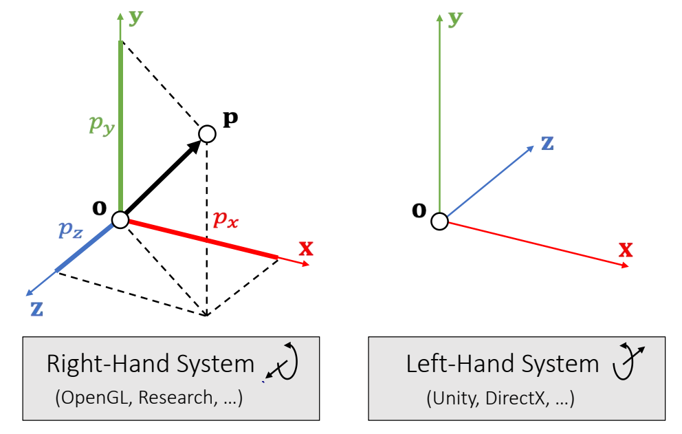
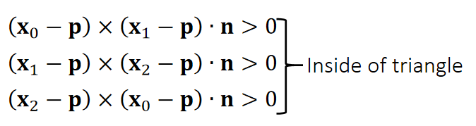
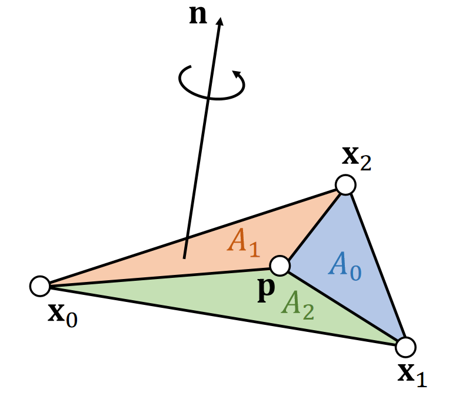
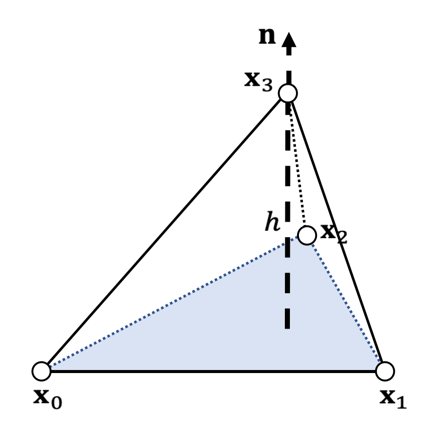
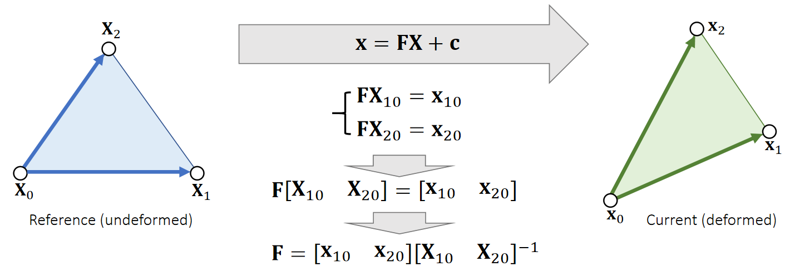
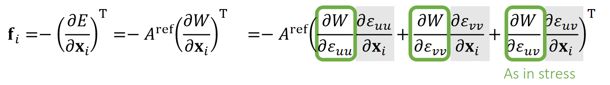
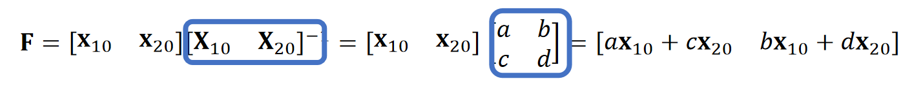
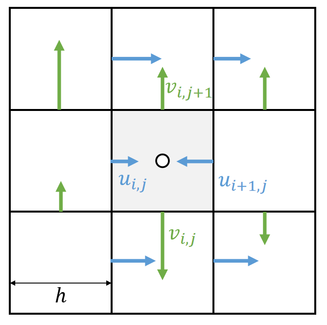

本文以GAMES103课程为始，围绕图形学物理仿真话题，根据自己的理解重新排版、增删。如有侵权，请联系删除。
仿真是指，根据仿真代理在当前时刻的力计算下一时刻仿真代理的状态。 把仿真的对象抽象成不同的代理，可以得到不同的仿真效果。不同的仿真代理，其状态特点、受力响应、擅长场景都各不相同。因此本文根据仿真代理来划分章节。对每一种仿真对象，分析
✅ 这里涉及到时间步的概念。仿真的帧率不需要与渲染的帧率保持一致。通常一个渲染step会包含多个仿真step。
- 属性，包含固有属性、需要仿真的状态、可能产生的内力
- 对象在力的作用下如何响应，即更新状态
- 这种仿真对象的使用场景

✅ Fracture 有大量的 remesh。游戏引擎中的 Fracture 通常通过预计算而不是模拟得到。
✅ 流体的形态很多，例如水滴、水花、水浪，对应的模拟方法也不同。难以用通用的方法高效地模拟所有场景。
✅ 流体、烟通常使用粒子法或网格法。水波可以看作是整体，因此能用 mesh，用 mesh的好处是可以做到实时，Grid 的好处是更真实。Splashes(水花)的问题是多变，因此不能实时，通常使用粒子和网格。
✅ Hybrid 方法：MPM = Particle + Grid,兼容二者优点，常用于模拟雪或粘滞物体
✅ SPA 与弹性体模拟结合，可用于模拟物体破碎， 粒子法与网格法相结合，称为 MPM. 用于模拟雪、沙子。
一个真实的场景中，肯定会包含多个仿真对象，每个对象都可能用的不同的仿真代理去仿真。除了单个仿真代理的仿真，还考虑仿真代理之间的相互作用。
✅ Coupling: 场景中同时有不同类别的物体，怎样模拟它们的交互。
mindmap
物理仿真
单个仿真代理的仿真
Particle
单个粒子的仿真
粒子系统
Mesh
不可形变Mesh
可形变Mesh
Skeleton
体素
Grid
2D Grid
3D Grid
SDF
混合代理
仿真代理之间的作用
碰撞
碰撞检测
离散相交检测
粗检测
细检测
连续穿透检测
粗检测
细检测
碰撞响应
相交解除
状态更新
约束
✅ 王老师建议的学习方法：
读 paper 而不是教材
只读重点不读全文
学知识而不是学用 Unity
多读多写多想
Reference
-
基于物理的计算机动画入门 原始课程链接
-
知乎、Deepseek等网络材料
-
图形学相关
数学基础
Animation - 角色动画
Animation - 物理动画
Geometry
Rendering
本文出自CaterpillarStudyGroup，转载请注明出处。
https://caterpillarstudygroup.github.io/GAMES103_mdbook/
P3
Vector: Basics
定义
An (Euclidean) vector: A geometric entity endowed with magnitude and direction.
$$ \mathbf{P} =\begin{bmatrix} p_x\\ p_y\\ p_z\\ \end{bmatrix}\in \mathbf{R} ^3 $$
$$ \mathbf{o} =\begin{bmatrix} 0\\ 0\\ 0\\ \end{bmatrix} $$
The vector p is defined with respect to the origin o.
坐标系

✅ 用黑来区分，矢量：黑体小写；标量：斜体；矩阵：黑体大写；
P4
The choice of a right-hand or left-hand system is largely due to:
the convention of the screen space.

✅ 左手坐标系，E轴正方向朝屏幕内，好处是物体坐标 x、y、z 都是正值。右手系统的物体都在E轴负方向。
P5
Stacked Vector
Vectors can be stacked up to form a high-dimensional vector, commonly used for describing the state of an object.

Not a geometric vector,but a stacked vector.
P6
Vector Arithematic: Addition and Subtraction
$$ \mathbf{p\pm q=} \begin{bmatrix} p_x\pm q_x\\ p_y\pm q_y\\ p_z\pm q_z\\ \end{bmatrix} $$
$$ \mathbf{p+q=q+p} $$
| Addition is commutative. |
|---|

| Geometric Meanings |
|---|
P7
Example 1: Linear Representation
A (geometric) vector can represent a position, a velocity, a force, or a line/ray/segment.


✅ 图2。同一个公式，对\(t\)做不同的约束，可以定义不同的东西。
\(\mathbf{P}(t)\) 是 \(\mathbf{P}\) 和 \(\mathbf{q}\) 的 blend
P8
Vector Norm
A vector norm measures the magnitude of a vector: its length.

✅ L1-Norm 又称为曼哈顿的距离。没写下标一般默认L2-Norm
P9
Vector Norm: Usage
Distance between q and p： $$ \mathbf{||q-p||} $$
A unit vector：
$$ \mathbf{||p||} =1 $$
Normalization： $$ \mathbf{\bar{p} =p/||p||} $$
P10
Vector Arithematic: Dot Product
A dot product, also called inner product, is:

| Geometric Meanings |
|---|
$$ \begin{array}{c} \mathbf{p\cdot q}=p_xq_x+p_yq_y+p_zq_z=\mathbf{p^Tq} \\ =||\mathbf{p} ||||\mathbf{q} ||\cos \theta \end{array} $$
- \(\mathbf{p\cdot q=q\cdot p} \)
- \(\mathbf{p\cdot (q+r)=p\cdot q+p\cdot r} \)
- \(\mathbf{p \cdot p = ||p||^2_2} \), a different way to write norm.
- If \(\mathbf{p·q} = 0\) and \(\mathbf{p,q}\ne 0\) then \(\cos \theta = 0\),then \(\mathbf{p}\) and \(\mathbf{q}\) are orthogonal.
P11
Example 2: Particle-Line Projection

✅\(X\)为物体中心点的位置，为物体上所有点的整体位移，是前面说的\(T\).
速度是加速度的积分，表示为\(V\)或\(\dot{X} \)
加速度为\(F／M\)，但\(F\)比较复杂，与时间、位置、速度都可能有关系。
位置是速度的积分。
P12
Example 3: Plane Representation


S: The signed distance to the plane
Quiz: How to test if a point is within a box?

P13
Example 4: Particle-Sphere Collision

If collision does happen, then:
$$ ||\mathbf p(t) - \mathbf{c}||^2= r^2 $$
$$ (\mathbf p-\mathbf c+t\mathbf v)·(\mathbf p-\mathbf c +t\mathbf v) =r^2 $$
$$ (\mathbf v·\mathbf v)t^2+2(\mathbf p-\mathbf c)·\mathbf vt+ (\mathbf p-\mathbf c)·(\mathbf p-\mathbf c)-r^2=0 $$
- Three possiblities:
- No root、无碰撞
- One root、擦边 if \(t > 0\)
- Two roots:自碰撞 if \(t > 0 \)
P14
Vector Arithematic: Cross Product

The result of a cross product is a vector:
$$ \mathbf{r=p\times q} =\begin{bmatrix} p_yq_z-p_zq_y \\ p_zq_x-p_xq_z\\ p_xq_y-p_yq_x\\ \end{bmatrix} $$
- \(\mathbf r·\mathbf p = 0; \mathbf r·\mathbf q = 0; ||\mathbf r|| = ||\mathbf p||||\mathbf q|| \sin \theta\)
- \(\mathbf p\times \mathbf q =-\mathbf q\times \mathbf p\)
- \(\mathbf p\times (\mathbf q +\mathbf r) = \mathbf p\times \mathbf q +\mathbf p\times \mathbf r\)
- If \( \mathbf p \times \mathbf q =\mathbf 0\) and \(\mathbf p,\mathbf q\ne 0 \) then \(\sin \theta= 0\), then \(\mathbf p\) and \(\mathbf q \) are parallel (in the same or opposite direction).
P15
Example 5: Triangle Normal and Area

- Cross product gives both the normal and the area.
- The normal depends on the triangle index order, also known as topological order.
P16
Quiz: How to test if three points are on the same line (co-linear)?
P17
Example 6: Triangle Inside/Outside Test

P18


Otherwise, outside.
✅ 假设P点在三角形所在平面上
三个点的顺序很重要，不能搞反。
P19
Example 7: Barycentric Coordinates

Note that:
$$
\frac{1}{2} \mathbf{(x_0−p)×(x_1−p)\cdot n} =\begin{cases}
\frac{1}{2}||\mathbf{(x_0−p)×(x_1−p)} ||& \mathrm{inside} \\
\frac{1}{2}||\mathbf{(x_0−p)×(x_1−p)} || & \mathrm{outside}
\end{cases}
$$
Signed areas:
$$ \mathbf{A_2=\frac{1}{2} (x_0−p)×(x_1−p)\cdot n} $$
$$ \mathbf{A_0=\frac{1}{2} (x_1−p)×(x_2−p)\cdot n} $$
$$ \mathbf{A_1=\frac{1}{2} (x_2−p)×(x_0−p)\cdot n} $$
$$ \mathbf{A_0+A_1+A_2=A} $$
Barycentric weights of p :
$$ b_0=A_0/A \quad b_1=A_1/A \quad b_2=A_2/A $$
$$ b_0+b_1+b_2=1 $$
Barycentric Interpolation
$$ \mathbf{p} =b_0\mathbf{x} _0+b_1\mathbf{x} _1+b_2\mathbf{x} _2 $$
✅ 当 \(\mathbf{p}\) 在三角形外面时，面积为负，但面积总和不变 \(b_0,b_1,b_2\) 为 \(\mathbf{p}\) 在三角形重心坐标系下的坐标
✅ \(\mathbf{p}\) 在三角形外部、重心坐标同样适用，不过权重有负数。
P20
Gouraud Shading

-
Barycentric weights allows the interior points of a triangle to be interpolated.
-
In a traditional graphics pipeline, pixel colors are calculated at triangle vertices first, and then interpolated within. This is known as Gouraud shading.
-
It is hardware accelerated.
-
It is no longer popular.
✅ 由于硬件能力提升，已经可以做到逐像素。
shading,不再需要此方法
通常也不是逐像素计算重心坐标，而是扫描线算法
例如要计算某一行，可以 ：
(1) 插值出行起点像素；
(2) 插值出行终点像素；
(3) 起点与终点间批量插值；
P21
Example 9: Tetrahedral Volume

Edge vectors:
$$ \mathbf{X_{10}=X_1-X_0 \quad \quad X_{20}=X_2-X_0 \quad \quad X_{30}=X_3-X_0} $$
Base triangle area:
$$ A=\frac{1}{2} ||\mathbf{X} _{10}\times \mathbf{X} _{20}|| $$
Height:
$$
h=\mathbf{x} _{30}\cdot\mathbf{n} =\mathbf{x} _{30}\cdot \frac{\mathbf{x} _{10}\times \mathbf{x} _{20}}{||\mathbf{x} _{10}\times \mathbf{x} _{20}||}
$$
Volume:
$$ \begin{align*} V&=\frac{1}{3} ℎA=\frac{1}{6} \mathbf{x} _{30}\cdot \mathbf{x} _{10}\times \mathbf{x} _{20}\\ &=\frac{1}{6}\begin{vmatrix} \mathbf{x} _1 & \mathbf{x} _2 & \mathbf{x} _3 &\mathbf{x} _0 \\ 1& 1 & 1 &1 \end{vmatrix} \end{align*} $$
✅ 四面体
\(h\)是\(\mathbf{x}_{30}\)在 normal 上的投影
行列式是上面叉乘的另一种马法。
P22
Note that the volume \(V =\frac{1}{3}h\mathit{A} =\frac{1}{6} \mathbf{x} _ {30}\cdot (\mathbf{x} _ {10}\times \mathbf{x}_{20})\) is signed.

✅ \(\mathbf{x}_{3}\)的后面法线的同方向上，也正四面体，反之为负四面体，四点共面为零体积。
P23
Example 10: Barycentric Weights (cont.)

- p splits the tetrahedron into four sub-tetrahedra:
$$ \begin{matrix} V_0=\mathrm{Vol} (\mathbf{x}_3,\mathbf{x}_2, \mathbf{x}_1, \mathbf{p} )\\ V_1=\mathrm{Vol} (\mathbf{x}_2,\mathbf{x}_3, \mathbf{x}_0, \mathbf{p} )\\ V_2=\mathrm{Vol} (\mathbf{x}_1,\mathbf{x}_0, \mathbf{x}_3, \mathbf{p} )\\ V_3=\mathrm{Vol} (\mathbf{x}_0,\mathbf{x}_1, \mathbf{x}_2, \mathbf{p} ) \end{matrix} $$
-
p is inside if and only if: \(V_0,V_1,V_2, V_3 > 0\).
-
Barycentric weights:
$$ b_0=V_0/V \quad b_1=V_1/V \quad b_2=V_2/V \quad b_3=V_3/V $$
$$ b_0+b_1+b_2+b_3=1 $$
$$ \mathbf{p} =b_0\mathbf{x} _0+b_1\mathbf{x} _1+b_2\mathbf{x} _2+b_3\mathbf{x} _3 $$
本文出自CaterpillarStudyGroup，转载请注明出处。
https://caterpillarstudygroup.github.io/GAMES103_mdbook/
P26
Matrix: Basics
Matrix: Definition
A real matrix is a set of real elements arranged in rows and columns.
$$ A=\begin{bmatrix} a_{00} & a_{01} & a_{02} \\ a_{10}& a_{11} & a_{12} \\ a_{20}& a_{21} & a_{22} \end{bmatrix}=[a_{0} \quad a_{1} \quad a_{2}]\in \mathbf{R} ^{3\times 3} $$

$$ \mathbf{A^T=A} \quad \mathrm{Symmetric} $$
P27
Matrix: Multiplication
How to do matrix-vector and matrix-matrix multiplication? (Omitted)
- \(\mathbf{AB≠BA} \quad \quad \quad \quad \quad \quad \quad \quad \mathbf{(AB)x=A(Bx)} \)
- \(\mathbf{(AB)^T=B^TA^T} \quad \quad \quad \quad \quad \quad \mathbf{(A^TA)^T=A^TA}\)
- \(\mathbf{Ix=x} \quad \quad \quad \quad \quad \quad \quad \quad \quad \mathbf{AI=IA=A}\)
\(\quad\) - \(\mathbf{A^{−1}: AA^{−1}=A^{−1}A=I} \quad \quad \mathrm{inverse}\)
- \(\mathbf{(AB)^{−1}=B^{−1}A^{−1}}\)
- Not every matrix is invertible, e.g., \(\mathbf{A} =\begin{bmatrix} 0 & 0 & 0\\ 0 & 0 & 0\\ 0 & 0 & 0 \end{bmatrix}\)
P28
Matrix: Orthogonality
An orthogonal matrix is a matrix made of orthogonal unit vectors.
$$ \mathbf{A} =[\mathbf{a} _0\quad \mathbf{a} _1\quad \mathbf{a} _2]\quad\mathrm{such \quad that } \quad \mathbf{a}_i^\mathbf{T}\mathbf{a}_j =\begin{cases} 1，& \text{ if } i= j \text{(unit)}\\ 0.& \text{ if } i\ne j \text{(orthogonal)} \end{cases} $$
$$ \mathbf{A^TA}=\begin{bmatrix} \mathbf{a}_0^\mathbf{T} \\ \mathbf{a}_1^\mathbf{T} \\ \mathbf{a}_2^\mathbf{T} \end{bmatrix}\begin{bmatrix} \mathbf{a}_0 & \mathbf{a}_1 &\mathbf{a}_2 \end{bmatrix}=\begin{bmatrix} \mathbf{a}_0^\mathbf{T} \mathbf{a}_0 & \mathbf{a}_0^\mathbf{T} \mathbf{a}_1 & \mathbf{a}_0^\mathbf{T} \mathbf{a}_2\\ \mathbf{a}_1^\mathbf{T} \mathbf{a}_0 & \mathbf{a}_1^\mathbf{T} \mathbf{a}_1 & \mathbf{a}_1^\mathbf{T} \mathbf{a}_2\\ \mathbf{a}_2^\mathbf{T} \mathbf{a}_0 & \mathbf{a}_2^\mathbf{T} \mathbf{a}_1 & \mathbf{a}_2^\mathbf{T} \mathbf{a}_2 \end{bmatrix}=I $$
$$ \mathbf{A^T=A^{-1}} $$
P29
Matrix Transformation
A rotation can be represented by an orthogonal matrix.

✅ \(\mathbf{x、y、z}\) 是世界坐标系、 \(\mathbf{u、v、w}\) 是局部坐标系，旋转矩阵是局部坐标系在世界坐标系中的状态的描述。
P30
A scaling can be represented by a diagonal matrix.
P31
矩阵分解
Singular Value Decomposition
A matrix can be decomposed into:
\(\mathbf{A=UDV^T} \quad\)such that \(\mathbf {D}\) is diagonal,and \(\mathbf {U}\) and \(\mathbf {V}\) are orthogonal.
\(\quad \quad \quad \quad\quad\) D 的对角线元素是singular values（奇异值）
Any linear deformation can be decomposed into three steps: rotation, scaling and rotation:

✅ rotation \(\longrightarrow\) scaling \(\longrightarrow\) rotation 分别对应 \(\mathbf{V}_2^\mathbf{T},\mathbf{D}, \mathbf{U}\). 注意顺序！！！
所有 \(\mathbf{A}\) 都能做 \(\mathbf{SVD} \)
P32
Eigenvalue Decomposition
A symmetric matrix can be decomposed into:
\(\mathbf{A=UDU^{-1}}\quad\)such that \(\mathbf {D}\) is diagonal,and \(\mathbf {U}\) is orthogonal.
\(\quad \quad \quad \quad\quad\) D 的对角线元素是eigenvalues（特征值）
✅ \(\mathbf{ED}\) 看作是\(\mathbf{SVD}\)的特例，仅应用于对称矩阵，此时 \(\mathbf{U=V}\)
\(\mathbf{U}\) 是正交矩阵，因此也可写成 \(\mathbf{A = UVU^T}\)
As in the textbook
Let \(\mathbf{U} =\begin{bmatrix} \cdots & \mathbf{u} _i &\cdots \end{bmatrix}\), we have:
$$ \mathbf{Au} _i= \mathbf{UDU^T} \mathbf{u} _i=\mathbf{UD} \begin{bmatrix} \vdots \\ 0\\ 1\\ 0\\ \vdots \end{bmatrix}=\mathbf{U} \begin{bmatrix} \vdots \\ 0\\ d_i\\ 0\\ \vdots \end{bmatrix}=d_i\mathbf{u} _i $$ \(\mathbf{U}\): 是 the eigenvector of \(d_i\)
\(d_i\): 是 eigenualue
We can apply eigenvalue decomposition to asymmetric matrices too, if we allow eigenvalues and eigenvectors to be complex. Not considered here.
✅ complex：复数
图形学不考虑虚数，因此也不考虑非对称矩阵的 \(\mathbf{ED}\)
P33
Symmetric Positive Definiteness (s.p.d.)
定义
\(\mathbf{A}\) is s.p.d. if only if: \(\quad\quad\quad\quad\quad\quad\quad\quad \) \(\mathbf{v^TAv}>0\), for any \(\mathbf{v} ≠ 0. \)
\(\mathbf{A}\) is symmetric semi-definite if only if: \(\quad\quad \) \(\mathbf{v^TAv}≥0\), for any \(\mathbf{v}≠ 0\).
✅ 计算矩阵的有限元或 Hession 时会用到正定性
| What does this even mean??? |
|---|
怎么理解SPD
\(d>0 \quad\quad\quad\quad\Leftrightarrow \quad \mathbf{v^T} d\mathbf{v} >0\), for any \(\mathbf{v} ≠ 0. \)
\(d_0, d_1,…>0 \quad\Leftrightarrow \quad \mathbf{v^TDv=v^T} \begin{bmatrix} \ddots & \Box & \Box\\ \Box & d_i & \Box\\ \Box &\Box &\ddots \end{bmatrix}\mathbf{v} >0\), for any \(\mathbf{v} ≠0.\)
✅ 一堆大于零的实数组成一个对角矩阵, 公式1的扩展
\(d_0, d_1,…>0 \quad\Leftrightarrow \quad \mathbf{v^T(UDU^T)v=v^TUU^T(UDU^T)UU^Tv}\)
\(\mathbf{U}\) orthogonal \(\quad\quad\quad\quad\quad\quad\quad\quad=\mathbf{(U^Tv)^T(D)(U^Tv)>0 } \), for any \(\mathbf{v} ≠0 \)
✅ 公式3是公式2的扩展
P34
怎么判断SPD
-
A is s.p.d. if only if all of its eigenvalues are positive:
\(\mathbf{A=UDU^T}\) and \(d_o,d_1,\cdots > 0.\) -
But eigenvalue decomposition is a stupid idea most of the time, since it takes lotsof time to compute.
✅ 实际上不会通过 \(\mathbf{ED}\) 来判断矩阵的正定性。因为ED的计算量很大。
- In practice, people often choose other ways to check if A is sp.d. For example,
\(a_{ii}>∑_{i≠j}|a_{ij}|\) for all \(i\)
A diagonally dominant matrix is p.d.
$$ \begin{bmatrix} 4&3 & 0\\ -1& 5 &3 \\ -8& 0 &9 \end{bmatrix}\begin{matrix}\quad\quad \quad4>3+0\\ \quad\quad\quad 5>1+3 \\ \quad\quad9>8 \end{matrix} $$
✅ 对角占优矩阵必定正定，正定不一定对角占优
- Finally, a s.p.d.matrix must be invertible:
$$ \mathbf{A^{-1} =(U^T)^{-1}D^{-1}U^{-1} = UD^{-1}U^T}. $$
P35
例子
Prove that if A is s.p.d., then \(\mathbf{B} =\begin{bmatrix} \mathbf{A} &\mathbf{-A} \\ \mathbf{-A} &\mathbf{A} \end{bmatrix}\)is symmetric semi-definite.
For any \( \mathbf{x}\) and \(\mathbf{y}\), we know:
$$ \begin{bmatrix} \mathbf{ x^T}&\mathbf{ y^T} \end{bmatrix}\mathbf{B}\begin{bmatrix} \mathbf{x} \\ \mathbf{y} \end{bmatrix}=\begin{bmatrix} \mathbf{ x^T}&\mathbf{ y^T} \end{bmatrix}\begin{bmatrix} \mathbf{A} &\mathbf{-A} \\ \mathbf{-A} &\mathbf{A} \end{bmatrix}\begin{bmatrix} \mathbf{x} \\ \mathbf{y} \end{bmatrix} $$
$$ \quad\quad\quad\quad\quad\quad\quad\quad\quad\quad\mathbf{=x^TA(x-y)-y^TA(x-y)=(x-y)^TA(x-y)} $$
Since A is sp.d., we must have:
$$ \begin{bmatrix} \mathbf{ x^T} & \mathbf{y^T} \end{bmatrix}\mathbf{B} \begin{bmatrix} \mathbf{x} \\ \mathbf{y} \end{bmatrix}\ge 0 $$
本文出自CaterpillarStudyGroup，转载请注明出处。
https://caterpillarstudygroup.github.io/GAMES103_mdbook/
P42
Basic Concepts
1st-Order Derivatives
值是实数，变量是矢量
If \(f(\mathbf{x} )\in \mathbf{R} \), then \(df=\frac{∂f}{∂x}dx+\frac{∂f}{∂y}dy+\frac{∂f}{∂z}dz=\begin{bmatrix} \frac{∂f}{∂x} & \frac{∂f}{∂y} &\frac{∂f}{∂z} \end{bmatrix}\begin{bmatrix} dx \\ dy\\ dz \end{bmatrix}\).
$$
\frac{∂f}{∂x}=\begin{bmatrix}
\frac{∂f}{∂x} & \frac{∂f}{∂y} &\frac{∂f}{∂z}
\end{bmatrix}
$$
$$ \mathrm{ or } $$
| \(\nabla f(\mathbf{x} )=\begin{bmatrix}\frac{∂f}{∂x} \\ \frac{∂f}{∂y}\\\frac{∂f}{∂z}\end{bmatrix}\) gradient |
|---|
✅ \(\nabla f(x)=(\frac{\partial f}{\partial x} )^T\), 重要！！！
Gradient is the steepest direction for increasing \(f\). It’s perpendicular to the isosurface.
✅ isosurface：等高面
P43
值是矢量，变量是是矢量
If \(f(\mathbf{x} )=\begin{bmatrix} f(\mathbf{x} ) \\ g(\mathbf{x} )\\ h(\mathbf{x} ) \end{bmatrix}\in \mathbf{R} ^3\),then:
✅ Divergence:散度，也是\(\mathbf{J}(\mathbf{x})\)的 trace
✅ Curl：旋度。
✅ 怎么理解 curl?把微分算子\(\nabla \)看作是个向量，让它与 \(\mathbf{f}\) 做叉乘、在流体模拟中常用。
P44
2nd-Order Derivatives
If \(f\mathbf{(x)\in R} \),then:

✅ 求导顺序不影响求导结果，因此 \(\mathbf{H}\) 是对称的
\(\mathbf{H}\)的trace称为Laplace
泰勒展开
①\(x\in R,f(x)\in R\)
$$
f(x)=f(x_0)+{f}' (x_0)(x-x_0)+\frac{1}{2} {f}'' (x_0)(x-x_0)^2+\cdots
$$
②\(x\in R^n,f(x)\in R\)
$$ f(x)=f(x_0)+\nabla {f}' (x_0)\cdot (x-x_0)+\frac{1}{2}(x-x_0)^TH(x-x_0)+\cdots $$
✅ 当\(\mathbf{H}\)正定时, \(f(\mathbf{x})\)满足一些特殊的性质
P45
Quiz:
\(\frac{∂||\mathbf{x}||}{∂\mathbf{x}} = ?\)
$$ \frac{∂||\mathbf{x}||}{∂\mathbf{x} } = \frac{∂(\mathbf{\mathbf{x^Tx} } )^{1/2}}{∂\mathbf{x} }=\frac{1}{2}(\mathbf{x^{T}x} )^{−1/2} \frac{∂(\mathbf{x^Tx} )}{∂\mathbf{x} }=\frac{1}{2||\mathbf{x} ||}2\mathbf{x^T} =\frac{\mathbf{x^T} }{||\mathbf{x} ||} $$
| $$\frac{∂(\mathbf{\mathbf{x^Tx} } )}{∂\mathbf{x} }=\frac{∂(x^2+y^2+z^2)}{∂\mathbf{x} }= \begin{bmatrix}2x& 2y &2z \end{bmatrix}= 2\mathbf{x^T}$$ |
|---|
✅ 向量梯度的物理意义：向量沿什么方向变化能最快地变短/长？答：沿它自己的当前方向。
本文出自CaterpillarStudyGroup，转载请注明出处。
https://caterpillarstudygroup.github.io/GAMES103_mdbook/
P36
Linear Solver
Many numerical problems are ended up with solving a linear system:

It's expensive to compute \(\mathbf{A^{-1}} \), especially if \(\mathbf{A} \) is large and sparse. So we cannot simply do:\(\mathbf{x = A^{-1}b}\).
- 当 \(\mathbf{A}\) 是稀疏时. \(\mathbf{A}^{-1}\)通常不是稀疏。 如果 \(\mathbf{A}\) 很大，\(\mathbf{A}^{-1}\)会占用大量空间。
- 计算\(\mathbf{A}^{-1}\)非常耗时
P25
An Incomplete Summary
There are two popular linear solver approaches: direct and iterative.
-
Direct Solvers (LU, LDLT, Cholesky, Intel MKL PARDISO)
- One shot, expensive but worthy if you need exact solutions.
- Little restriction on \(\mathbf{A}\)
- Mostly suitable on CPUs
-
Iterative Solvers（ Jacobbi. Gauss-Seidel，共轭梯度）
- Expensive to solve exactly, but controllable
- Convergence restriction on \(\mathbf{A}\), typically positive definiteness
- Suitable on both CPUs and GPUs
- Easy to implement
- Accelerable: Chebyshev, Nesterov, Conjugate Gradient
P37
Direct Linear Solver
方法
A direct solver is typically based LU factorization, or its variant: Cholesky, \(\mathrm{LDL^\top } \), etc…
✅ \(\mathbf{LU}\) 可用于非对称矩阵。
Cholesky 和 \( \mathbf{LDL^\top}\) 仅用于对称矩阵，但内存消耗更少。
这里不介绍如何做\(\mathbf{LU}\)分解
$$ \mathbf{A=LU=} \begin{bmatrix} l_{00} & \Box & \Box \\ l_{10} & l_{11} & \Box \\ \vdots & \cdots &\ddots \end{bmatrix}\begin{bmatrix} \ddots & \cdots &\vdots \\ \Box&u_{n−1,n−1} &u_{n−1,n} \\ \Box & \Box &u_{n,n} \end{bmatrix} $$ \(\quad\quad\quad\quad\quad\quad\quad\)lower triangular \(\quad\quad\) upper triangular
P38
分析
- When \(\mathbf{A}\) is sparse, \(\mathbf{L}\) and \(\mathbf{U}\) are not so sparse. Their sparsity depends on the permutation.(See matlab)
✅ \(\mathbf{L}、\mathbf{U}\) 和稀疏性与行列顺序有关，因此通常在\(\mathbf{LU}\) 分解之前做 permutation,使得到比较好的顺序。
- lt contains two steps: factorization and solving. lf we must solve many linear systems with the same \(\mathbf{A}\) , we can factorize it only once.
✅ \(\mathbf{LU}\) 分解是计算量的大头，只做一次 \(\mathbf{LU}\) 分解，能省去大量计算。
- Cannot be easily parallelized:Intel MKL PARDISO
P39
Iterative Linear Solver
An iterative solver has the form:
Why does it work?
$$ \begin{matrix} \mathbf{b−Ax} ^{[k+1]} =\mathbf{b−Ax} ^{[k]}−\mathbf{αAM} ^{−1}(\mathbf{b−Ax} ^{[k]}) \\ \quad\quad\quad\quad\quad\quad\quad\quad\quad\quad=(\mathbf{I−αAM} ^{−1})(\mathbf{b−Ax} ^{[k]}) =(\mathbf{I−αAM} ^{−1})^{k+1}(\mathbf{b−Ax} ^ {[0]}) \end{matrix} $$
So,
\(\mathbf{b−Ax} ^{[k+1]}→0\), if \(ρ(\mathbf{I−αAM} ^{−1})<1.\)
✅\(\mathbf{b-Ax}^{[k＋1]}\) 代表下一时的残差，迭代要想收敛，\(\mathbf{b-Ax}^{[k+1]}\) 应趋于0
\(\rho\):矩阵的spectral radius (the largest absolute value of the eigenvalues)
✅ 不会真的去算 \(\rho\),而是调\(α\),试错。 因为求特征值的代价比较大
P40
\(\mathbf{M}\) must be easier to solve:
| \(\mathbf{M} =\mathrm{diag} (\mathbf{A} )\) Jacobi Method |
|---|
\(\quad\)
| \(\mathbf{M} =\mathrm{lower} (\mathbf{A} )\) Gauss-Seidel Method |
|---|
The convergence can be accelerated: Chebyshev, Conjugate Gradient, … (Omitted here.)
优点：
- simple
- fast for inexact solution
- paralleable
缺点：
- convergence condition
✅ 例如要求M是正定的或对角占优的
- slow for exact solution
P24
The Jacobi Method
We can use the Jacobi method to solve \(\mathbf{A}∆\mathbf{x} = \mathbf{b} \).

The vanilla Jacobi method (\(α\) = 1) has a tight convergence requirement on \(\mathbf{A}\), i.e., being diagonal dominant.
The use of \(α\) allows the method to converget even when \(\mathbf{A}\) is positive definite only.
P26
The Jacobi Method with Chebyshev Acceleration
We can use the accelerated Jacobi method to solve \(\mathbf{A}∆\mathbf{x} =\mathbf{b} \).
The Accelerated Jacobi Method
\(∆\mathbf{x} \longleftarrow \mathbf{0} \)
last_\(∆\mathbf{x} \longleftarrow \mathbf{0}\)
For \(k=0\dots \mathbf{K}\)
\(\mathbf{r} \longleftarrow \mathbf{b} −\mathbf{A} ∆\mathbf{x}\)
If \(||\mathbf{r} ||<\omega \quad\) break
If \(k=0 \quad\quad\quad \omega =1\)
Else If \( k=1 \quad \quad\quad\omega =2/(2-\rho^2)\)
Else \(\quad\quad\quad\omega =4/(4-\rho ^2\omega )\)
old_\(∆ \mathbf{x} \longleftarrow ∆ \mathbf{x}\)
\(∆\mathbf{x} ⟵∆\mathbf{x} +\mathbf{αD} ^{−1}\mathbf{r}\)
\(∆\mathbf{x} \longleftarrow \omega ∆ \mathbf{x} +(1−\omega)\)last_∆\(\mathbf{x}
\)
last_\(∆\mathbf{x} \longleftarrow \) old_\(∆\mathbf{x}\)
\(\rho (\rho <1)\) is the estimated spectral radius of the iterative matrix.
课后答疑
问题二：怎么加速？
答：用 Jacobian 可以在 GPU 上加速、直接法比迭代法慢。
问题三：共轭梯度
共轭梯度的效率很大程度上取决于 precondition,但在GPU上能使用的precondition 比较受限、 CPU 上一般选择 Incomplete LU 分解。
问题四：支持的维度
直接法比较占内存，因此支持的维度不如迭代法大。
本文出自CaterpillarStudyGroup，转载请注明出处。
https://caterpillarstudygroup.github.io/GAMES103_mdbook/
力
仿真对象/代理有可能会受到推力、重力、阻力等。
重力：
F = mg
g：重力加速度
单位体积上的重力为：
$$
\mathbf{f}_{\text{gravity}}=ρg
$$
阻力
✅ 在做模拟时，如果不要求能量守衡，出于问题简化的目的，直接对速度做衰减，代替引入阻力
$$ v^{[1]} = \alpha v^{[2]} $$
其它力
前面提到的力中，重力是与速度、位置无关的力。阻力是只与速度有关的力。但也有些其它力与粒子的位置有关。例如电磁力。因此使用更通用的形式来描述力：
$$ F = \mathbf{f} (\mathbf{x} (t), \mathbf{v} (t), t) $$
压力梯度力
- 压力 \(p(\mathbf{x}, t)\) 是标量场。
- 流体从高压区流向低压区。
- 作用在微团上的净压力力等于压力场的负梯度：
\[ \mathbf{f}_{\text{pressure}} = -\nabla p \] （负号表示力指向压力下降的方向）
粘性力
- 对于牛顿流体，剪切应力与速度梯度成正比。
- 从连续介质力学推导可得，单位体积的粘性力为：
\[ \mathbf{f}_{\text{viscous}} = \mu \nabla^2 \mathbf{u} \] 其中 \(\mu\) 是动态粘度，\(\nabla^2\) 是拉普拉斯算子。 （注：这是对于常粘度 \(\mu\) 且满足不可压缩条件 \(\nabla\cdot\mathbf{u}=0\) 的情况的简化形式；更一般的形式是 \(\nabla \cdot (2 \mu \mathbf {S})\) ，其中\(\mathbf {S}\) 是应变率张量。）
其他体积力：
除了重力 \(\rho \mathbf{g}\)，还可以加入其他体积力，如表面张力（在多相流中）、电磁力（在磁流体中）等，只需加到右边即可。
本文出自CaterpillarStudyGroup，转载请注明出处。
https://caterpillarstudygroup.github.io/GAMES103_mdbook/
力与力矩
力矩 torque \(\mathbf{τ} \)
Torque：力矩，造成物体旋转的趋势。类比于Force：力，造成物体运动的趋势。
力转化为力矩
✅ 力转化为力矩，不是物理性质上的转化，而是数学形式上的转化。把力用力矩的形式表达，用于计算它对旋转产生的影响。
定义：
- \(\mathbf{f} _i\)：力
- \(\mathbf{Rr} _i\)：当前状态下质心到作用点的向量
- \(\mathbf{τ} _i\)：力矩
分析：
- \(\mathbf{τ} _i\) is perpendicular to both vectors: \(\mathbf{Rr} _i\) and \(\mathbf{f} _i\).
- \(\mathbf{τ} _i\) is porportional to ||\(\mathbf{Rr} _i\)|| and ||\(\mathbf{f} _i\)||.
✅ 力矩的大小决定旋转的快慢。
- \(\mathbf{τ} _i\) is porportional to \(\sin \theta\).
✅ \(\theta\) is the angle between (\mathbf{f} _i\)和\(\mathbf{Rr} _i\)
因此：
$$ \mathbf{τ} _i\longleftarrow (\mathbf{Rr} _i)\times \mathbf{f} _i $$
P6
inertia tensor
inertia 看作是对运动的抵抗。

Which side receives greater resistance?
✅ 两图对同一个刚体施加的力矩大小相同，但产生的旋转不同。可知inertia的效果与力矩的方向有关，因此不是常数。
换个角度出，对两个不同（旋转）状态的刚体施加（大小和方向）相同的力矩，其产生的效果也不一样。
即，inertia 与自身的状态相关。
P7
计算inertia
Similar to mass, an inertia tensor describes the resistance to rotational tendency caused by torque. But different from mass, it’s not a constant.
It’s a matrix! The mass inverse is the resistance (just like mass).
✅ 用于旋转的质量不再是实数，而是\(3\times 3\)的矩阵，称为 Inertia 矩阵。
✅ 用 \(\mathbf{I}\) 来标记当前状态下的 Inertia 矩阵。用 \(\mathbf{I}_{ref}\)为参考状态下的Inertia 矩阵。
具体计算公式如下 ：
| reference state | current state |
|---|---|
 |  |
| \(\mathbf{I} _{\mathbf{ref} }=\sum m_i(\mathbf{r} _i^\mathbf{T} \mathbf{r} _i\mathbf{1} −\mathbf{r} _i\mathbf{r} _i^\mathbf{T} )\) \(\mathbf{1}\) is the 3-by-3 identity. | \(\mathbf{I} =\sum m_i(\mathbf{r} _i^\mathbf{T}\mathbf{R} ^\mathbf{T}\mathbf{Rr} _i\mathbf{1} −\mathbf{Rr} _i\mathbf{r} _i^\mathbf{T} \mathbf{R^T} )\) \(\quad=\sum m_i(\mathbf{Rr} _i^\mathbf{T}\mathbf{r} _i\mathbf{1R} ^\mathbf{T} −\mathbf{Rr} _i\mathbf{r} _i^\mathbf{T} \mathbf{R^T} )\) \(\quad=\sum m_i\mathbf{R}(\mathbf{r}_i^\mathbf{T}\mathbf{r}_i\mathbf{1}−\mathbf{r}_i\mathbf{r}_i^\mathbf{T} ) \mathbf{R^T}\) \(\quad=\mathbf{RI _{ref}R^T}\) |
✅ 不需要每次都根据当前状态计算，而是基于一个已经算好的ref状态的 inertia快速得出。
P33
本文出自CaterpillarStudyGroup，转载请注明出处。
https://caterpillarstudygroup.github.io/GAMES103_mdbook/
三维弹性力学
变形梯度 deformation gradient
将未变形的弹性体置于坐标系中，用 Ω 表示弹性体占据的体积域，该区域被称为参考构形（或未变形构形）。
用大写字母表示的向量X∈Ω指代未变形构形中的单个物质点。
弹性体发生变形时，每个物质点X都会位移至新的变形位置，该位置用小写字母表示的向量x指代。
物质点与其变形后位置的对应关系由变形函数ϕ:R3→R3描述，该函数将每个物质点X映射至其变形后的位置x=ϕ(X)。
变形梯度张量F∈R3×3是变形映射的雅可比矩阵。

变形函数与变形梯度举例：
| 形变 | 变形函数ϕ | 变形梯度F |
|---|---|---|
| 平移 | x =ϕ( X )= X + t | F=∂ϕ( X )/∂ X =I |
| 均匀缩放 | ϕ( X )=γ X | F=γI |
| 各向异性缩放 | ϕ( X )=S X | F=S |
| 旋转 | ϕ( X )=RX | F=R |
应变能与超弹性
弹性变形会积累势能，该势能被称为应变能，用E[ϕ]表示。
应变能仅与最终的变形形态有关，而与弹性体达到该构形的时间变形路径无关。这是超弹性材料的标志性特征。
弹性体不同部位的变形程度存在差异，因此，变形与应变能的关系更适合在局部尺度上定义。因此引入能量密度函数Ψ[ϕ;X]。
Ψ[ϕ;X]用于度量物质点X周围微元域dV内，单位未变形体积的应变能。
对能量密度函数在整个体积域 Ω 上积分，即可得到弹性体的总应变能：

由于能量密度Ψ[ϕ;X]定义在X的局部域上，因此可通过一阶泰勒展开对该微小区域的变形映射进行合理近似：

其中t对能量不影响，因此能量密度仅为局部变形梯度的函数。但Ψ(F)的具体形式与材料特性有关。
能量密度函数一个自然的期望性质是下有界，即存在最小能量状态，弹性体可稳定于该状态。
能量密度函数举例：
| 能量密度函数 | 稳定状态 | 特点 |
|---|---|---|
 | F=0，ϕ(X)=常数 | 所有物质点都有收缩至同一点的趋势。 不符合自然规律，因为参考构形 Ω 并非其平衡构形。 |
 | F=I，ϕ(X)=X） | 处于参考构形或其恒定平移构形时，能量取得最小值。但旋转状态下的能量非零。 |
力（Force）与面力（Traction）
力密度，为物质点X周围微元域内，单位未变形体积的力。
对应的：面力密度函数traction(X)，用于度量弹性体边界上物质点X周围微元域内，单位未变形面积的力。
对有限边界区域B⊂∂Ω积分，即可得到该边界区域的总作用力：

应力张量
The First Piola-Kirchhoff 应力张量
定义：

其中N为参考构形（未变形）中边界的单位外法向量。
对于超弹性材料，P仅为变形梯度的函数，且与应变能存在简单的关系：

因此任意给出Ψ(F)或者P(F)中的一个，即可根据F得出traction τ ( X )
应力张量使用举例
定义：
可以推导出：P=∂Ψ/∂F=k(F−I)
考虑弹性体沿所有方向均匀拉伸 2 倍的情况，ϕ( X )=2 X时，F=2I，P=kI，τ =−k N，该边界力会使弹性体产生向内的运动，以恢复原始的形状和体积。
材料本构模型
对材料物理特性的数学描述被称为本构模型，其中包含将外界激励（如变形）与材料响应（如力、应力、能量）关联起来的方程。
基于F的本构方程
将Ψ与F（或P与F）关联的显式公式完全可作为本构方程，例如：
但直接利用矩阵F的元素分析变形的类型和程度非常不直观，通常会定义一些由F推导得到的中间量来定义本构方程。
中间度量
应变度量（Strain measures）
应变度量是用于定量描述变形程度的物理量，即衡量当前构形与静息构形的偏离程度。
应变度量由变形梯度推F导得到，保留变形梯度中与变形程度评估相关的信息，同时舍弃变形梯度中与形状变化无关的信息。
格林应变张量

特点：
- 当弹性体处于参考构形（ϕ(X)=X）时，F=I，因此E=0；
- 当弹性体仅发生旋转和平移（形状不变）时，ϕ(X)=RX+t（R为旋转矩阵），此时F=R，由于RTR=I，因此E=0。
- 对于更一般的非刚体运动，可以将F分解为F=RS，此时

优点：
- 舍弃了与变形程度无关的旋转自由度，仅保留了对称因子S中包含的拉伸 / 剪切信息，且该过程无需显式进行极分解。
缺点：
- 格林应变张量是变形的非线性（二次）函数，因此基于格林应变张量构建的本构模型复杂度更高。
- 离散化后的节点力将是节点位置的非线性函数。
小应变张量
E(F)在E(I)处泰勒展开，并代入E(I)=0，得：

优点：
- 计算效率高
- 离散化后的节点弹性力与节点位置呈线性映射关系
缺点：
- 小应变张量仅能可靠地度量小变形。若用于大变形场景，将产生明显的误差。
共旋应变张量

不变度量
各向同性不变量
$$ I_1(F) = tr (F^TF) $$
I1是F的各奇异值的平方和
体积比不变量J
$$ J = \det F $$
J的物理意义：变形引起的体积变化比。
本构模型
基于线性弹性（Linear elasticity）张量的本构模型


优点：
- 应力P是变形梯度F的线性函数，因此节点弹性力与节点位置呈线性关系。
- 与其他非线性材料模型相比，线弹性模型的计算成本显著更低。
- 在小变形场景下准确
缺点：
- 仅在小变形场景下准确，因此仅适用于运动幅度较小的情况。
基于格林应变张量的圣维南 - 基尔霍夫模型
将小应变模型中的ϵ（E的近似）替换为E

可求得

特点：
- 旋转不变性
- 非线性关系：应力是变形梯度F分量的三次多项式函数；离散化后，节点力也将表示为节点位置的三次多项式。
- 压缩缺陷：对强压缩的抵抗性较差。当弹性体受到强压缩力或运动学约束时，容易发生局部的扭曲和翻转。
基于共旋应变张量的共旋线性弹性模型


这三种写法的是等价的。

特点：
- 极分解的计算成本，以及在部分仿真中需要使用非线性求解器的成本。
- 相较于圣维南 - 基尔霍夫等高度非线性模型，其计算效率仍有显著优势。
新胡克弹性


特点：
- 对极端压缩具有极强的抵抗效应。
- 近似不可压缩材料，实现保体积的数值格式。
- 当模拟中意外出现体积反转构型（理论上物理上不可能但实际仿真中极易发生）时，模型没有内置的稳定处理机制。
本文出自CaterpillarStudyGroup，转载请注明出处。
https://caterpillarstudygroup.github.io/GAMES103_mdbook/
流体力学
流体力学将物体建模为物质在其体内连续分布的实体，称为流体微团。
连续性方程描述了物理量在时空中的输运

其中：
- A 可为任意标量、矢量或张量形式的物理属性，
- u 表示速度，
- s 是 A 的源项，
- 所有这些量均定义于时间 t 和位置 x。
公式 (1) 表明，在固定位置处任何物理属性的变化率 ∂A/∂t 取决于 Au 通量所带来的变化以及源项 s 的贡献。
针对公式 (1) 中的物理属性 A，流场可从拉格朗日或欧拉视角进行分析：
欧拉视角 基于固定位置来研究物理属性的变化。在给定位置 x 处物理量 A 的变化率即为公式 (1) 中的 ∂A(x, t)/∂t 项。虽然直观，但这一视角并未显式表达连续介质假设中流体微团的运动，因为微团始终在不同时刻流经固定的空间位置。
拉格朗日视角 通过将公式 (1) 改写为以下形式，研究流体微团的物理属性变化：

其中 D(·)/Dt 即所谓的物质导数，表示流体微团内物理量 A 的变化率。
纳维-斯托克斯方程
纳维-斯托克斯方程描述了流体流动的动力学规律，是流体仿真的根本基础。
质量守恒
在封闭系统中，流体的质量随时间保持守恒。该原理由连续性方程（公式（2））表示。令 A 为流体密度，并设 s ≡ 0，则公式（2）可改写为：

在不可压缩流动的情况下，流体内的密度变化保持恒定，即 Dρ/Dt = 0。该条件进一步意味着速度场无散度，其表达式为：

纳维-斯托克斯动量方程
为进一步描述不可压缩流体流动的运动特性，可对每个流体微团的动量进行分析。将动量项 ρu 代入公式（1），并利用公式（2），可得：

其中 sm 是改变各流体微团速度的动量源项，符号 ⊗ 表示外积运算。在此基础上，黏性可压缩流的纳维-斯托克斯动量方程基本形式进一步将 sm 具体表述为三个独立项：

其中 p 表示压力，g 为重力加速度，µ 是描述流体粘性程度的动态粘性系数。公式（6）表明，流体微团的速度变化率受三个力项的影响：压力项（−∇p）、粘性项（µ∇2u） 以及重力项（ρg）。
本文出自CaterpillarStudyGroup，转载请注明出处。
https://caterpillarstudygroup.github.io/GAMES103_mdbook/
时间步长
库朗-弗里德里希斯-列维(CFL)条件是确定时间步长的一种常用方法。当前大多数仿真方法都根据CFL条件在每个时间步计算一个全局时间步长。通常，CFL条件的形式如下：

其中 \(‖u_c‖\) 表示信息传播速度，\(∆x\) 在欧拉或混合仿真中代表网格单元尺寸，在拉格朗日方法中则指光滑长度。\(C_{\mathrm{max} }\) 是一个基于离散算子大小的常数，\(C\) 即为CFL数或库朗数。在实际应用中，\(‖u_c‖\) 通常指材料中的声速或仿真中的最大流速。
时间步长 \(∆t\) 的选择通常使得 \(C\) 处于 [0, 1] 范围内。最大库朗数\(C_{\mathrm{max} }\)的选取一般取决于所用仿真算法的类型，但其值不应超过 1。相较于SPH方法，PIC或MPM等方法在选择 \(C_{\mathrm{max} }\)时通常具有更大的灵活性。在使用隐式时间积分方案时，可以在保持仿真稳定的前提下，采用更大的 \(C_{\mathrm{max} }\)值。
本文出自CaterpillarStudyGroup，转载请注明出处。
https://caterpillarstudygroup.github.io/GAMES103_mdbook/
Graphics Pipeline
数学基础
Animation - 角色动画
Animation - 物理动画
Geometry
Rendering
Real-Time Graphics Pipeline

P15
The number of frames sent to display in a second is called the frame rate.
For example, 24 FPS, 30 FPS, 60 FPS, …
✅ 帧率要求主要取决于交互性，因此游戏要求比电影高。
P17
Animation Playback
✅ 由于实时比较难，可以把不需要交互的动画，例如过场动画做成离线
✅ 同理，不需要交互的场景。
P18
Movie
✅ Geometry: 离线：构造离线的3D也界
✅ 动画：渲染，实时，需要与3D世界或玩家互动
✅ 电影：离线，不需要交互，提前录下来，例如游戏中的过场动画

本文出自CaterpillarStudyGroup，转载请注明出处。
https://caterpillarstudygroup.github.io/GAMES103_mdbook/
非线性方程求解转化为优化问题
求解的非线性方程如下，其中\({x} ^{[1]}\)是未知量。
$$
\mathbf{x} ^{[1]}=\mathbf{x}^{[0]}+∆t\mathbf{v} ^{[0]}+∆t^2\mathbf{M} ^{−1}\mathbf{f} (\mathbf{x}^{[1]})
$$
P14
$$ \mathbf{||x||_M^2=x^TMx} $$
✅ Note that this is applicable to every system, not just a mass-spring system.
把公式处理一下得，
$$
x^{[0]}+Δtv^{[0]}+Δt^2M^{-1}f(x^{[1]})-x^{[1]}=0
$$
左右两边同时乘以\(\frac{M}{Δt^2}\)得
$$
\frac{1}{Δt^2} M(x^{[1]}-x^{[0]}-Δtv^{[0]})-f(x^{[1]})=0
$$
这里面唯一的未知量是\(x^{[1]}\)，定义函数
$$
y=\frac{1}{Δt^2} M(x-x^{[0]}-Δtv^{[0]})-f(x)
$$
当\(x = x^{[1]}\) 时，\(y = 0\), 即 \(y(x^{[1]}) = 0\)
从另一个角度讲，
$$
\begin{eqnarray}
x^{[1]} & = \mathrm{argmin}& F(x)\Rightarrow {F}' (x^{[1]}) & = & 0
\end{eqnarray}
$$
因此, \({F}' (x) = y. \quad F(x) = \int ydx \)
反之则不一定成立，\({F}' (x) = 0\) 解出的 \(x\) 有可能是极大值点，所以还要看 \({F}' (x)\) 的正负。
本文出自CaterpillarStudyGroup，转载请注明出处。
https://caterpillarstudygroup.github.io/GAMES103_mdbook/
Newton-Raphson Method
x是值的F(x)函数
The Newton-Raphson method, commonly known as Newton’s method, solves the optimization problem: \(x^{[1]}\) = argmin \(F(x)\).
Given a current \(x^{(k)}\), we approximate our goal by:
$$ 0={F}' (x)≈{F}'(x^{(k)})+{F}'' (x^{(k)})(x−x^{(k)}) $$
✅ \(a = \min F(x)⇒ F'(a)= 0\)，\({F}' (x)\) 是非线性函数，直接解\({F}' (x)=0\) 很难解
✅ 对\({F}'(x)\) 做一阶泰勒展开，保留到二阶项。
✅ 假设\(x^{[k]}\)为任意已知值，就变成了解线性方程，很容易解出\(x\).
✅ 因为\({F}'(x)\) 是一个近似的，\(x\) 也是一个近似解。但\(x^{[k]}\) 越接近真实解，\(x\) 也会越接近真实解。因此，选代是\(x^{[k]}\)和\(x\) 都不断逼近真实解的过程。
✅ 普通的梯度下降是把\({F}' (x)\) 近似到一阶，牛顿法是近似到二阶，因此下降更快。
✅ Overshooting 的本质：误差会积累和放大
P16
Newton’s method finds an extremum, but it can be a minimum or maximum.
- At a minimum \(x^∗, {F}'' (x^∗)>0\).
- At a maximum \(x^∗, {F}''(x^∗)<0\).
- If \({F}''(x)>0\) is everywhere, \(F(x)\) has no maximum. \(=> F(x)\) has only one minimum.
✅ \(F'(a)= 0,a\) 有可能是最大值或最小值，因此要判定解是否合理。判定方法： \({F}''(x)\)
P17
x是向量的F(x)函数
Now we can apply Newton’s method to: \(x^{[1]} \)= argmin \(F(x)\). Given a current \(x^{(k)}\), we approximate our goal by:
$$ 0=\nabla F( \mathbf{x}) ≈\nabla F (\mathbf{x} ^{(k)})+\frac{∂F ^2(\mathbf{x} ^{(k)})}{∂\mathbf{x} ^2} (\mathbf{x−x} ^{(k)}) $$

✅ 按照 \(\Delta x\) 的更新公式，只需要用到\(F'(x)\) 和 \({F}''(x)\)， 不需要知道 \(F(x)\).
✅ 此处\(x\)是向量，因此\(F'(x)\)是向量，\({F}''(x)\)是 Hession 矩阵
[TODO]怎么保证 \(\mathbf{x}\) 收敛
P26
补充三：预条件最速下降法 Preconditioned Steepest Descent
- Mathematically, this approach is preconditioned steepest descent, in which:

$$ F(\mathbf{x} )=\frac{1}{2∆t^2} ||\mathbf{x} −\mathbf{x} ^{[0]}−∆t\mathbf{v} ^{[0]}||_\mathbf{M} ^2+E(\mathbf{x} ) $$
The performance depends on how well \(\mathbf{{\color{Orange} H} }\) approximates the real Hessian.
✅\(\mathrm{H}\)不需要很精确，一个近似的正定的矩阵，就能让结果收敛。
本文出自CaterpillarStudyGroup，转载请注明出处。
https://caterpillarstudygroup.github.io/GAMES103_mdbook/
P19
Gradient Descent
Another way to solve \(\mathbf{x}^∗\)=argmin \(F(\mathbf{x})\) is the gradient descent method.
How to find the optimal step size becomes a critical question.
P20
step size adjustment

优点：simple, Low overhead
P21
Descent Directions
The direction \(\mathbf{d(x)}\) is descending, if a sufficiently small step size \(α\) exists for:
$$ F(\mathbf{x} )>F(\mathbf{x} +α\mathbf{d} (\mathbf{x} )) $$
| In other words, \(−∇F(\mathbf{x} )\cdot \mathbf{d} (\mathbf{x} )>0\) |
|---|
✅沿负梯度方向可以下降，但不一定是最好的方向。怎样判断一个方向是否可以下降？答：看与负梯度方向是否在同侧。
P22
With line search, we can use any search direction as long as it’s descending:
$$ F(\mathbf{x} ^{(0)})>F(\mathbf{x} ^{(1)})>F(\mathbf{x} ^{(2)})>F(\mathbf{x} ^{(3)})>… $$

P23
Descent Methods
- Gradient descent is a descent method, since:
$$ \mathbf{d} (\mathbf{x} )=−∇F(\mathbf{x} )\quad \Rightarrow \quad −∇F(\mathbf{x} )\cdot (−∇F(\mathbf{x} ))>0 $$
- Newton’s method is also a descent method, if the Hessian is always positive definite:
$$ \mathbf{d} (\mathbf{x} )=−(\frac{∂^2F(\mathbf{x} )}{∂\mathbf{x} ^2})^{−1}∇F(\mathbf{x} ) \quad \Rightarrow \quad −∇F(\mathbf{x} )\cdot (−(\frac{∂^2F(\mathbf{x} )}{∂\mathbf{x} ^2})^{−1}∇F(\mathbf{x} ))>0 $$
✅牛顿法不一定收敛，\(\mathbf{H}\)正定场景牛顿法一定收敛。
- Any method using a positive definite matrix P to modify the gradient yields a descent method:
$$\mathbf{d} (\mathbf{x} )=−\mathbf{P} ^{−1}∇F(\mathbf{x} ) \quad \Rightarrow \quad −∇F(\mathbf{x} )\cdot (−\mathbf{P} ^{−1}∇F(\mathbf{x} ))>0 $$
本文出自CaterpillarStudyGroup，转载请注明出处。
https://caterpillarstudygroup.github.io/GAMES103_mdbook/
P24
A unified descent framework
A unified descent framework
P25

✅ 图形学中更关注 Total Cost. 让 P 更加接近 H，可以减少迭代数，让 P 更容易得到，减少迭代成本。
Traction：物体表面上的力的密度，有点像压强
P27
After-Class Reading
Wang. 2016. Descent Methods for Elastic Body Simulation on the GPU. TOG (SIGGRAPH Asia).
P28
A Summary For the Day
-
We can calculate the Hessian of the FEM elastic energy based on SVD derivatives.
-
The goal of doing this is for implicit time integration.
-
Fundamentally, the goal is to solve a nonlinear optimization.
- Gradient Descent, Newton’s method, and others can all be considered as descent methods.
- The key question is the matrix for calculating the search direction.
- We need both the per-iteration cost and the number of iterations to be small.
✅ 模拟的公式通常都固定，很难有突破、瓶颈在于计算量、随着分辨率的提升，模拟的计算量几乎是无止境的。
本文出自CaterpillarStudyGroup，转载请注明出处。
https://caterpillarstudygroup.github.io/GAMES103_mdbook/
粒子的属性
| 属性 | 符号 | 在通常的仿真场景中是否可变 |
|---|---|---|
| 质量 | m | 否 |
| 全局位置 | p或x | 是 |
在可变的仿真属性中，通常还会考虑它们的一阶导、二阶导等。
| 属性 | 符号 | 说明 |
|---|---|---|
| 速度 | v或\(\mathbf{\dot{x}} \) | p的一阶导 |
| 加速度 | a | p的二阶导 |
更新仿真对象的可变属性。
粒子的仿真
当粒子同时受到多个力时，通过相加得到它们的合力。
粒子在各种力的作用下会发生位移（transform）。其p, v, a都会发生改变。
连续形式
真实的物理世界里，属性的变化是连续的。
$$ \begin{cases} \mathbf{v} (t^{[1]})=\mathbf{v} (t^{[0]})+ m^{−1}\int_{t^{[0]}}^{t^{[1]}} \mathbf{f} (\mathbf{x} (t), \mathbf{v} (t), t)dt\\ \mathbf{x} (t^{[1]})=\mathbf{x} (t^{[0]})+\int_{t^{[0]}}^{t^{[1]}} \mathbf{v} (t)dt \end{cases} $$
✅ 速度是加速度的积分，因此\( \Delta v=\int a=\int \frac{F}{M} =m^{-1}\int F\).
✅ 位置是速度的积分，公式的本质上是解积分。
离散形式
💡 为了方便计算机进行计算，需要把连续积分形式转为离散积分形式。 数值积分相关内容请戳这里：link。最后结论是混合式的积分方法。
$$ \begin{cases} \mathbf{v} (t^{[1]})=\mathbf{v} (t^{[0]})+ \Delta t m^{−1}\mathbf{f} (\mathbf{x(t^{[0]})}, \mathbf{v}(t^{[0]}), t^{[0]})\\ \mathbf{x} (t^{[1]})=\mathbf{x} (t^{[0]})+\Delta t\mathbf{v} (t^{[1]}) \end{cases} $$
总结


✅ 质量 \(M\) 是一个标量
应用场景
粒子可以作为水分子，气体分子，烟雾分子的仿真代理。用于仿真液体、气体的效果，针对实际的应用场景，还会增加一些粒子属性。
粒子也可以作为刚体所占用空间的代理，仿真刚体破碎的效果。
本文出自CaterpillarStudyGroup，转载请注明出处。
https://caterpillarstudygroup.github.io/GAMES103_mdbook/
SPH Model
✅ SPH = Smoothed Particle Hydrodynamics
P5
原理
- Suppose each particle j has a physical quantity \(A_j\).
- The quantity can be: velocity, pressure, density, temperature….
- How to estimate the quantity at a new location \(\mathbf{x}_i\)?
✅ 空间中有很多带有物理量的粒子，求任意位置上的物理量。这是插值问题，关键是要插值结果平滑。
✅ SHP 的核心思想是将连续场量的导数转化为粒子间的求积。

\(A\) 可以是任何随空间变化的物理量。
SPH 适用于模拟自由表面流体。(简单理解为有表面，但不需要 Mesh 来描述表面)。
烟不属于自由表面流体，因为没有表面。
模型
| 属性 | 符号 |
| 体积 | \( V \) |
| 密度 | \( \rho \) |
| 其它非仿真属性 | \( A \) |
A Simple Model
$$ \begin{matrix} A_i^{\mathbf{smooth}}=\frac{1}{n}\sum _jA_j & \text{ For } ||\mathbf{x}_i−\mathbf{x}_j||<R \end{matrix} $$

✅ 假设空间是一个关于 \(A\) 的场，粒子是空间中的采样。
✅ 根据 \(i\) 附近范围内采样出的 \(A\) 值预测 \(i\) 点处的 \(A\) 值。
存在的问题

✅ 取平均的方式没有考虑粒子的分布。
P7
A Better Model
- Let us assume each one represents a volume \(V_j\).
- So a better solution is:
$$ \begin{matrix} A_i^{\mathbf{smooth} }=\frac{1}{n}\sum_jV_jA_j & \text{ For } ||\mathbf{x} _i−\mathbf{x} _j||<R \end{matrix} $$

✅ 体积 \(V-i\) 的计算在后面介绍。这里先假设 \(V-i\) 已知。
✅ 公式假设总球的体积是1，球内的粒子瓜分这些体积。所以\(\sum _jV_j=1\)
P8
存在的问题
- One problem of this solution:
$$ \begin{matrix} A_i^{\mathbf{smooth} }=\frac{1}{n}\sum_jV_jA_j & \text{ For } ||\mathbf{x} _i−\mathbf{x} _j||<R \end{matrix} $$
- Not smooth! (7 -> 9!)

✅ 微小的移动，圆内多了两个点，导致结果突变。
P9
Final Solution
解决方法：根据 \(j\) 到 \(i\) 的距离来决定 \(j\) 对 \(i\) 的影响权重。
$$ \begin{matrix} A_i^{\mathbf{smooth}}=\sum _ j V_jA_jW_{ij} & \text { For } ||\mathbf{x} _ i− \mathbf{x} _j||< R \end{matrix} $$
- \(W_{ij}\) is called smoothing kernel.
- When \(||\mathbf{x} _ i − \mathbf{x} _ j||\) is large, \(W_{ij}\) is small.
- When \(||\mathbf{x} _ i−\mathbf{x} _ j||\) is small, \(W_{ij}\) is large.
P10
Particle Volume Estimation
- But how do we get the volume of particle \(i\)?
$$ V_i=\frac{m_i}{ρ_i} $$
$$ ρ_i^ \mathbf{smooth} =\sum _ j V_ j ρ_ j W _ {ij}= \sum _ jm_jW_{ij} $$
| $$V_i=\frac{m_i}{ρ_i^\mathbf{smooth} }=\frac{m_i}{∑_jm_jW_{ij}}$$ |
|---|

✅ 粒子在运动过程中，疏密会有变化，因此体积不是常数，要实时计算。
✅ 公式中的\(\rho \)不是指水的密度，而是粒子分布的密度。
✅ 把密度当作粒子的物理量。用同样的方法插出某个点的密度。
P11
Smoothed Interpolation – Final Solution
- So the actual solution is:

P12
Kernal函数
Kernal函数的作用
-
We can easily compute its derivatives:
- Gradient
$$ \begin{matrix} A_i^ \mathbf{smooth} = \sum _ jV_jA_ jW_ {ij} \quad & ∇A_i ^\mathbf{smooth} = \sum_jV_jA_j∇W_ {ij} \end{matrix} $$
- Laplacian
$$ \begin{matrix} A_i^ \mathbf{smooth} = \sum _ j V_ j A_ jW_ {ij} \quad & ∇A_i^\mathbf{smooth} = \sum_ jV_ jA_ j∇W_ {ij} \end{matrix} $$
❓ 为什么认为体积是常数？答：假设一个点的运动不影向周围邻居的体积。
✅ 对于当前点来说，周围粒子的物理量是常数，只有\(W_{ij}\)与当前点有关。
✅ 而\(W_{ij}\)来自于已知的kernel函数，其derivative也是已知的。
P13
A Smoothing Kernel Example

$$ W_{ij}=\frac{3}{2\pi h^3} \begin{cases} \frac{2}{3}-q^2+\frac{1}{2} q^3 \quad & (0\le q<1) \\ \frac{1}{6}(2-q)^3 \quad& (1\le q<2) \\ 0 \quad & (2\le q) \end{cases} $$
$$ q=\frac{||\mathbf{x} _i-\mathbf{x} _j||}{h} $$
\(h\) is called smoothing length
✅ smooth Kernal 有很多种，这种最常见。
P14
Kernel Derivatives
- Gradient at particle i (a vector)
$$ \nabla _ i W _ {ij} = \begin{bmatrix} \frac{\partial W _ {ij}}{\partial x _ i} \\ \frac{\partial W _ {ij}}{\partial y _ i} \\ \frac{\partial W _ {ij}}{\partial z _ i} \end{bmatrix} = \frac{\partial W_ {ij}}{\partial q} \nabla _ iq= \frac{\partial W _ {ij}}{\partial q} \frac{\mathbf{x} _ i-\mathbf{x} _ j}{|| \mathbf{x} _ i - \mathbf{x} _ j||h} $$
$$ q=\frac{||\mathbf{x} _i-\mathbf{x} _j||}{h} $$
$$ W_{ij}=\frac{3}{2\pi h^3} \begin{cases} \frac{2}{3}-q^2+\frac{1}{2} q^3 \quad & (0\le q<1) \\ \frac{1}{6}(2-q)^3 \quad& (1\le q<2) \\ 0 \quad & (2\le q) \end{cases} $$
$$ \frac{\partial W_{ij}}{\partial q} =\frac{3}{2\pi h^3} \begin{cases} -2q+\frac{3}{2}q^2 \quad & (0\le q<1) \\ -\frac{1}{2}(2-q)^2 \quad& (1\le q<2) \\ 0 \quad & (2\le q) \end{cases} $$
P15
Kernal Laplacian
| $$\Delta _i W _ {ij}= \frac{\partial^2 W _ {ij}}{\partial x_i^2}+ \frac{\partial^2 W _ {ij}}{\partial y_i^2} + \frac{\partial^2 W _ {ij}}{\partial z_i^2}= \frac{\partial^2 W _ {ij}}{\partial q^2}\frac{1}{h^2} + \frac{\partial W _ {ij}}{\partial q} \frac{2}{h} $$ |
|---|
$$ \frac{\partial W_{ij}}{\partial q} =\frac{3}{2\pi h^3} \begin{cases} -2q+\frac{3}{2}q^2 \quad & (0\le q<1) \\ -\frac{1}{2}(2-q)^2 \quad& (1\le q<2) \\ 0 \quad & (2\le q) \end{cases} $$
$$ \frac{\partial^2 W_{ij}}{\partial q^2} =\frac{3}{2\pi h^3} \begin{cases} -2+3q \quad & (0\le q<1) \\ 2-q \quad& (1\le q<2) \\ 0 \quad & (2\le q) \end{cases} $$
Reference
本文出自CaterpillarStudyGroup，转载请注明出处。
https://caterpillarstudygroup.github.io/GAMES103_mdbook/
P16
SPH-Based Fluids
P17
Consider a (Lagrangian) particle system: each water molecule is a particle with physical quantities attached, such as position \(\mathbf{x}_i\), velocity \(\mathbf{v}_i\), and mass \(m_i\).
✅ 用粒子来表达流体，物理变量附着在粒子上。先通过粒子系统的方式独立计算每个粒子。粒子转化为三角网格再渲染，或直接渲染带透明贴图的粒子(游戏)。
关键在于怎样构造粒子所受到的力，使粒子的运动效果看上去像水分子的运动。
- We model fluid dynamics by applying three forces on particle i.
- Gravity
- Fluid Pressure
- Fluid Viscosity
P18
Gravity Force
- Gravity Force is:
$$ \mathbf{F} _ \mathbf{i}^ \mathbf{gravity} = m _i \mathbf{g} $$
P19
\(\mathbf{g}\) 可以单指重力，也可以指所有的外力。
Pressure Force
✅ WCSPH：弱可压缩流体
计算密度 → 计算压强 → 计算压力，这是弱可压缩流体的关键。
严格不可压缩流体，速度散度严格为0，只能通过迫松方程求解，因为密度不变，不能反应压力。而 WCSPH 允许密度可变，并建立“密度 —— 压力”反馈方程。
计算密度
First compute the density of Particle i:
$$ \rho _ i = \sum _ j m _ j W _ {ij} $$
计算压强
$$ P_i=k((\frac{\rho _i}{\rho _\mathrm{constant } } )^7-1) $$
✅ 密度到压强的计算是一个经验公式。直观理解就是：密度大 → 压强大 → 推动周围粒子离开自己 → 保体积效果
- To compute this pressure gradient, we assume that the pressure is also smoothly represented:
$$ P_i^{smooth}= \sum _ j V_jP_j W_{ij} $$
✅ 假设空间是一个压强场、粒子是空间中的采样。\(P^{smooth}\)是通过周粒子\(P\)的插值得到的采样点压强。
通过 smooth 函数，把离散值变成连续值，以便于微分计算。这是一种常用技巧。
压强转化为力
P20
- Pressure force depends on the difference of pressure:
从公式上理解：
$$ \frac{D\boldsymbol{v}}{Dt}=-\frac{1}{\rho}\nabla \mathbf{p}+\boldsymbol{g} $$
公式中的 \(\boldsymbol{g} \) 不在这里考虑，仅考虑 \(\mathbf{p}\) 对 \(\boldsymbol{v}\) 的影响
求 \(\mathbf{p}_i^{smooth}\) 的梯度的过程见补充
代入即可求得粒子的速度变化
$$ \Delta \boldsymbol{v}=\Delta t \cdot \frac{D\boldsymbol{v}}{Dt}=-\frac{1}{\rho}\Delta t \nabla \mathbf{p}_i^{smooth}=\Delta t \frac{\boldsymbol{F}_i^{Pressure}}{m} $$
$$ \boldsymbol{F}_i^{Pressure}=-\boldsymbol{v}_i \nabla \mathbf{p}_i^{smooth} $$
从物理上理解。

压强差产生压力。
P21
- Mathematically, the difference of pressure => Gradient of pressure.
$$ \mathbf{F} _i^{pressure}=-V_i\nabla _iP^{smooth} $$
✅ 体积为粒子在空间中占有的体积，体积越大受到的压力越大、\(\nabla\)代表压强的差。
- So:
$$ \mathbf{F} _ i^{pressure} = - V _ i \sum _ j V _ j P _ j \nabla _ i W _ {ij} $$
P22
Viscosity Force 粘滞力
粘滞所产生的效果
- Viscosity effect means: particles should move together in the same velocity.
- In other words, minimize the difference between the particle velocity and the velocities of its neighbors.
✅ Viscosity (粘滞)类似于 damping (阻尼)，但有些区别，后者的目标是让粒子的运动停下来，前者的目的是让所有粒子的运动整齐划一，即速度差趋于0.
✅ smooth 会产生粘滞的效果。
P23
计算粘滞力
- Mathematically, it means:
$$ \mathbf{F} _i^{viscosity}=-\nu m_i\Delta _i\mathbf{V} ^{smooth} $$
✅ \(\nu\)：粘滞系数， \(\Delta \nu\)：速度的 Laplacian. 注意速度是3D矢量。
- To compute this Laplacian, we assume that the velocity is also smoothly represented:
$$ \mathbf{V} _i^{smooth}= \sum_jV_j \mathbf{v} _ j W _ {ij} $$
- So:
$$ \mathbf{F} _i^{viscosity}=-\nu m_i\sum _jV_j\mathbf{v} _j\Delta _iW _{ij} $$
P24
Algorithm
- For every particle i
- Compute its neighborhood set
- Using the neighborhood, compute:
- Force = 0
- Force + = The gravity force
- Force + = The pressure force
- Force + = The viscosity force
- Update \(v_i = v_i + t * \text{ Force } / m_i\);
- Update \(x_i = x_i + t * v_i\);
这是显式积分的流程，也可以把它们转为隐式积分方式。
补充 1：Spatial Partition加速求最近邻
P25
Exhaustive Neighborhood Search
| $$ \color{Red}{ \text{ What is the bottleneck of the performance here?}} $$ |
|---|
- Search over every particle pair? O(\(N^2\))
- 10M particles means: 100 Trillion pairs…
✅ 性能瓶颈在于搜索邻居，因为总粒子数为百万级。
P26
Solution: Spatial Partition
- Separate the space into cells
- Each cell stores the particles in it
- To find the neighborhood of i, just look at the surrounding cells

其它技巧：位压缩，Moten 编码，Compact hashing, AI 方法
P27
遗留问题：
- What if particles are not uniformly distributed?
✅ 例如水花喷溅的效果，通常靠近水面的粒子小一点，更利于表现细节。
- Solution: Octree, Binary Spatial Partitioning tree…

P28
补充 2：流体粒子渲染
• Need to reconstruct the water surface from particles!
✅ 点云转成三角面片用于渲染也是一个比较复杂的问题。
✅（1）平滑方法：bias kemal（见GAMES 102）或 vdb
✅（2）把球转为SDF，SDF转为 Mesh (Marching Cubes)
补充 3：计算梯度
这个奇怪的梯度计算公式能让计算结果稳定。

本文出自CaterpillarStudyGroup，转载请注明出处。
https://caterpillarstudygroup.github.io/GAMES103_mdbook/
Predictive-Corrective Icompressible SPH(PCISPH)
一、预测-修正框架（Predictive-Corrective）
flowchart LR
A[当前状态] -->|预测步①| B[中间状态<br>（SPH → 密度偏差）]
B -->|SPH| E[未修正的密度]
E & C[恒定的期望密度] --> F[修正压力]
F --> |修正步②| D[下一时刻状态]
①预测步：基于外力的物理仿真
（不考虑内力约束）
②这一步是WCSPH和PCISPH的关键差别
二、WCSPH 与 PCISPH 的关键区别
-
WCSPH $$ F_{\text{压力}} = F(P) $$
- 每次仅更新一次压力，无迭代修正
- 密度误差大（通常 >1%），易出现体积漂移
-
PCISPH $$ F_{\text{压力}} = F(\Delta P) $$
- 多次迭代修正压力，直到密度偏差 $\Delta P$ 满足阈值（如 <0.1%）
- 密度约束更强，震荡更小（1% → 0.1%）
- 基于可压缩连续性方程推导，无需求解不可压缩泊松方程
本文出自CaterpillarStudyGroup，转载请注明出处。
https://caterpillarstudygroup.github.io/GAMES103_mdbook/
Implicit Imcompressible SPH
flowchart LR
A[当前状态] -->|预测步| B[中间状态]
B --> E[未知量：位置修正]
B --> F[预测位置]
B --> G[预测密度]
B --> H[期望密度]
E & F --> I[基于动量的公式①]
G & H --> J[基于密度约束势能的公式②]
I & J --> K[构建方程组]--> L[解出$$\Delta x$$]--> M[下一时刻状态] --> A[当前状态]
优化目标：
不可压缩条件下的动量守恒
$$ E = \text{动能} + \lambda \cdot \text{约束项} $$
(1)
$$ \frac{\partial E}{\partial x} = \frac{\partial \text{动能}}{\partial x} + \lambda \cdot \frac{\partial \text{约束项}}{\partial x} = 0 $$
(2)
$$
\frac{\partial E}{\partial \lambda } = \text{约束项} = 0
$$
$$ \frac{\partial \text{动能}}{\partial x} = \int \rho u \frac{\partial u}{\partial t} dV 动能= \frac{1}{2} \int \rho u^2 dV (3) $$
$$ \frac{\partial \text{约束项}}{\partial x} = \nabla \cdot \text{约束项} = \nabla \cdot u (4) $$
(3) 化简得到NS方程的变分形式，即
$$ \rho \frac{D\boldsymbol{u}}{Dx} = -\nabla p - \rho (\boldsymbol{u} \cdot \nabla)\boldsymbol{u} \quad (5) $$
将公式(4)(5)离散化，得到方程：
方程组中有两个未知量：\(\lambda, \boldsymbol{\nabla x}\)
求解这个线性方程组 (不是泊松方程)
(4) 是 ISPH 的约束项的定义
而IISPH的约束项的定义应该是：
$$ \rho^{n+1} = \rho^0 $$
IISPH 避开解泊松方程，但又使用了隐式积分和密度不变约束，在稳定性、精度、效率方面达到平衡。
三、IISPH 补充
- 隐式离散格式，无需求解泊松方程，效率更高
- 推导基于可压缩连续性方程，而非不可压缩泊松方程
本文出自CaterpillarStudyGroup，转载请注明出处。
https://caterpillarstudygroup.github.io/GAMES103_mdbook/
Divergenc-Fre SPH(DFSPH)
IISPH 使用“密度不变约束”达到速度无散的效果，但 DFSPH 直接使用速度无散约束。
DFSPH 沿用“预测-修正”方法，也无须解泊松方程。
flowchart LR
A[当前状态] -->|预测步| B[中间状态]
B -->|SPH| E[中间速度场]
E -->|无散投影| F[无散速度场分量]
E -->|无散投影| G[有散势场分量]
G -->I[剔除]
F -->J[无散速度场]
J -->K[压强场]
J -->L[粒子位置]
K -->M[加速度]
L -->A[当前状态]
IISPH：密度不变 → 间接速度无散
DFSPH：直接速度无散 → 自然密度守恒
无散投影使用亥姆霍兹分解，过程中求解标量势 \(\phi\) 的泊松方程，而不是压强 \(P\) 的泊松方程，计算量更小。
DFSPH 的特点
- 无散投影的密度误差低，长期模拟几乎无体积漂移
- 解标量势 \(\phi\) 的泊松方程，与“IISPH的求解线性方程组”计算量相当，但DFSPH精度更高
- 适用于高保真流体模拟、大形变场景。
本文出自CaterpillarStudyGroup，转载请注明出处。
https://caterpillarstudygroup.github.io/GAMES103_mdbook/
Positon Based Fluid (PBF)
用于实时场景，PBD + SPH
本文出自CaterpillarStudyGroup，转载请注明出处。
https://caterpillarstudygroup.github.io/GAMES103_mdbook/
时间自适应
剧烈运动时需要较小的时间步长，而当整体运动平缓时则可采用更长的步长。
- 怎样算是合适的步长？
- 怎样计算一个粒子的适合的步长？
- 怎样管理粒子的仿真步长？
- 不同仿真步长之间的切换？
- 不同仿真粒子表现的跳变？
| ID | Year | Name | Note | Tags | Link |
|---|---|---|---|---|---|
| 182 | 2014 | Regional Time Stepping for SPH | 适用于（WCSPH）的区域时间步长法（RTS），首个考虑不同区域的时间自适用算法。 | link |
空间自适应
Ongoing Research
-
How to make the simulation more efficient?
-
How to make fluids incompressible?
-
When simulating water, only use water particles, no air particles. So particles are sparse on the water-air boundary. How to avoid artifacts there?
-
Using AI, not physics, to predict particle movement?
非AI方法
| ID | Year | Name | Note | Tags | Link |
|---|---|---|---|---|---|
| 2025 | Implicit Position-Based Fluids | 1. 构建隐式积分转优化问题的目标函数 2. 使用GPU亲和的方式解优化问题中的线性系统 3. 近似H保证H的正定性 4. 使流体趋于平静的机制 | link |
Lecture 2 [1:08:23]
Lecture2[1:08:23]
其它粒子仿真方法：
Discrete element methed
Moving Particle Semi-implicit
Power Particle
Peridynamic
AI方法
| ID | Year | Name | Note | Tags | Link |
|---|---|---|---|---|---|
| 2024 | Modeling the real world with high-density visual particle dynamics |
本文出自CaterpillarStudyGroup，转载请注明出处。
https://caterpillarstudygroup.github.io/GAMES103_mdbook/
刚体是指有体积但很硬不会发生形变的物体。
刚体所占的是一个连续的空间，包含了无限多个粒子。实际上会把它离散化为有限个相对位置关系不变的粒子的组合。离散化的方式有两种：
- 仅用极少量的例子来表示刚体的外部轮廓。粒子之间用line连接，构成Mesh。用这种方式构造出的刚体不考虑与粒子之间的相互作用力。是最常见的方式。见Mesh
- 用稠密的粒子点云来表示刚体所占据的空间。这种方式可以考虑粒子间的相互作用力，因此可以模拟刚体破碎的效果。这一页指的是这种情况。
无数的粒子以相对位置关系不变的方式聚合到一起，就形成了刚体。
本文出自CaterpillarStudyGroup，转载请注明出处。
https://caterpillarstudygroup.github.io/GAMES103_mdbook/
不可形变Mesh —— 刚体
Mesh由顶点、边、面片组成。
不可形变的Mesh指，Mesh上的顶点、边、面片的相对位置位移保持不变，因此把不可形变Mesh称为刚体。刚体的特点是物体很硬，不考虑形变。
刚体的仿真属性
把Mesh看作一个整体，Mesh相当于一个有体积的粒子。那么Mesh有以下属性：
| 属性 | 符号 | 在通常的仿真场景中是否可变 |
|---|---|---|
| 质量 | m（均质）或M（非均质） | 否。 |
| 全局位置（世界坐标系） | p或x | 是。刚体所占的是一个连续的空间，而不是一个点。选择刚体中的某一个点（通常是质心）的位置作为刚体的位置。 |
| 全局旋转（世界坐标系） | q 旋转的表示戳这里link。最后结论是四元数表示方法。 | 是 |
对应的：
| 属性 | 符号 | 说明 |
|---|---|---|
| 速度 | v或\(\mathbf{\dot{x}} \) | p的一阶导 |
| 加速度 | a | p的二阶导 |
| 角速度 | \(\mathbf{\omega}\)或\(\mathbf{\dot{q}} \) | q的一阶导 |
| 角加速度 | q的二阶导 |

$$
\begin{cases} \text{The direction of } \mathbf{\omega} \text{ is the axis.} \\
\text{The magnitude of } \mathbf{\omega} \text{ is the speed.}
\end{cases}
$$
刚体顶点的属性
刚体上的顶点没有自己的自由度，因此没有仿真属性。但它们具有以下运动属性：
| 属性 | 符号 | 在通常的仿真场景中是否可变 |
|---|---|---|
| 质量 | m | 否 |
| 相对位置(质心的坐标系) | p或x | 否。虽然每个粒子都有位置属性，但它们所有的粒子相对位移不变，因此不需要独立对每个粒子的位置属性做仿真，只需要仿真其中一个粒子的位置就可以。其它粒子的位置都是相对它的偏移 |
| 全局位置（世界坐标系） | \(x_i\) | 是。粒子的位置变化是由于质心坐标的平移和旋转导致的，是被动变化的，因此不直接仿真每个粒子的全局位置。 |

✅ reference：参考状态,无平移,无旋转，假设刚体在reference状态的坐标系与世界坐标系是一致的。
当前状态：旋转为\(\mathbf{R}\)，平移为\(\mathbf{T}\). 那么物体上任意点的位置为：
$$ \mathbf{{x}}' = \mathbf{Rx} + \mathbf{T} $$
粒子视角可以用于Mesh的受力分析，但是不能直接对Mesh上的粒子进行仿真，要把粒子受到的力转化为刚体的受力响应。
本文出自CaterpillarStudyGroup，转载请注明出处。
https://caterpillarstudygroup.github.io/GAMES103_mdbook/
刚体对外力的响应
虽然刚体受到的力都是作用在刚体上的某个点上。但受力点不能独立的响应这个力。而是要让刚体作为整体来响应这个力。
即，刚体的质心的全局位置（世界坐标系）和全局旋转（世界坐标系）。
因此，刚体在力的作用下会发生旋转和平移。

刚体受到经过质心的力
刚体受到经过质心的力，会发生位移，即x的改变。但不会发生旋转。 以下情况可以看作是刚体受到经过质心的力：
- 力作用在刚体的一个或多个点上，且每个力都经过质心
- 对于均质刚体，对整个刚体施加一个力，例如重力
刚体受力后的平移响应与粒子相似。连续形式与离散形式下的速度、位置更新公式也相同。

刚体受到一个不经过质心的力
对刚体上的一个点施加一个力F，且力不经过质心，其作用等效于：
- 对刚体的质心施加一个力，其它大小与方向与F相同。这个力导致刚体平移。仿真方法上同一节。
- 对刚体施加一个力偶，其力矩使刚体发生旋转。
inertia、torque等概念，请戳这里link
参考刚体平移的离散积分过程，可以推导出刚体旋转的更新法则：
| Translational (linear) | Rotational (Angular) | |
|---|---|---|
| Updafe |  |  |
| states | Velocity \(\mathbf{v}\) Position \(\mathbf{x}\) | Angular velocity \(\mathbf{ω} \) Quaternion \(\mathbf{q}\) |
| Physical Quantities | Mass \(\mathbf{M}\) Force \(\mathbf{f}\) | Inertia \(\mathbf{I} \) Torque \(\mathbf{τ} \) |
✅ 平移： \(加速度 = \frac{力}{质量}\) ，旋转： \(加速度 =\frac{力矩}{\text{Inertia}}\)
✅ \(q\)是四元数，代表物体的旋转状态
✅ \(q_1\times q_2\)不是叉乘，而是四元数普通乘法
✅ \(\begin{bmatrix} 0 & \frac{\bigtriangleup t}{2} & w^{(1)} \end{bmatrix}\)是一个四元数，0为实部，后面为虚部
❗ 算完\(q^{[1]}\)的之后要对它 Normalize
🔎 由\(q^{[0]}\)到\(q^{[1]}\)的更新公式的推导过程见Affer Class Reading（Appendix B）

更复杂的情况
更复杂的情况，也都可以把力分解为经过质心的力（造成平移）和力矩（造成旋转）。
计算出力和力矩以后，都可以套用以上公式更新刚体状态。
P30
总结


After-Class Reading (Before Collision)
P35
https://graphics.pixar.com/pbm2001
✅ 建议读其中的Rigid Body Dynamics部分
本文出自CaterpillarStudyGroup，转载请注明出处。
https://caterpillarstudygroup.github.io/GAMES103_mdbook/
mindmap
弹性体
属性
可仿真属性
约束
仿真方法
弹簧系统
基于投影的方法
PBD
PD
Strain Limiting
基于形变的方法
FEM
FVM
应用场景
线
布
软体
可形变 Mesh 的属性
可形变 Mesh 同样拥有顶点、边和面片，但其顶点之间的位置关系不保证严格不变，又不像粒子系统中的顶点那边可以随意移动。每个顶点可以独立移动，但顶点之间又满足约束关系。因此把可形变 Mesh 称为弹性体。
虽然可形变 Mesh 与不可形变 Mesh 底层有相同的数据结构，但他们的仿真自由度不同，对应的可仿真的属性不同，因此也产生了不同仿真方式。
弹性体的仿真属性
弹性体上的每个顶点都有自己的自由度，即独立的仿真属性：
| 属性 | 符号 | 在通常的仿真场景中是否可变 |
|---|---|---|
| 质量 | m | 否 |
| 全局位置（世界坐标系） | \(x_i\) | 是 |
弹性体与粒子系统的区别在于，顶点之间是存在约束的：
- 顶点之间的距离( Mesh 的边的长度)要尽量保持不变
- Mesh 的体积要尽量保持不变
- Mesh 的每个面片尽量不要发生形变
应用场景：
线、布料、弹性体
本文出自CaterpillarStudyGroup，转载请注明出处。
https://caterpillarstudygroup.github.io/GAMES103_mdbook/
P4
弹簧质点模型
✅ 整体流程就像是对 Mesh 上的每个顶点独立地进行粒子仿真，只是力变得复杂，因为在粒子之间增加了弹簧。当弹簧发生形变，就产生了弹簧力（内力）。
✅ 通过在粒子间构造弹簧来约束 Mesh 边长尽量不变。通过构造网状的弹簧系统来保证 Mesh 面片不发生形变。通过增加对角顶点的弹簧来约束 Mesh 体积上的形变。
---
title: 弹簧系统
---
flowchart LR
Current(["当前状态"])
Constrain[("约束")]
Outter[("外力")]
Energy(["能量"])
Force(["内力"])
Next(["下一时刻状态"])
Constrain-->Energy-->Force
Outter & Force & Current --> Integrate --> Next --> Current
积分可以是显式积分或者隐式积分。如果是显式积分，由力得到速度，速度更新状态。
---
title: 弹簧系统 - 显式积分
---
flowchart LR
Current(["当前状态"])
Constrain[("约束")]
Outter[("外力")]
Energy(["能量"])
Force(["内力"])
Velocity(["速度"])
Next(["下一时刻状态"])
Constrain-->Energy-->Force
Outter & Force --> Velocity
Velocity & Current --> Next
但显式积分存在不稳定性问题，在图形学中更常用的是隐式积分。
---
title: 弹簧系统 - 隐式积分
---
flowchart LR
Current(["当前状态"])
Constrain[("约束")]
Outter[("外力")]
Energy(["势能能量"])
Mometen(["动能能量"])
Target(["优化目标"])
Velocity(["速度"])
Next(["下一时刻状态"])
NextWoContrain(["不考虑约束的下一时刻状态"])
Outter --> Velocity
Velocity & Current --> NextWoContrain --> Mometen
Constrain-->Energy
Energy & Mometen --> Target --> Optimize --> Next
✅ 本节课所讲的套路：分析力/能量 → 隐式积分 → 通过优化解积分 → 更新，对弹簧系统、有限元、弹性体等各种物理模拟同样适用。区别在于如何构造能量和解优化问题。
构建弹簧系统
An Ideal Spring —— 一个端点

✅ Energy：物理上的弹性势能
✅ Force：物理上的力，是 Energy 的 gradient 的反方向; 公式后面有个 T,来源于前面的\(\nabla \)，直观解释，前面是力的大小，后面是力的方向。
🔍 Choi and Ko. 2002. Stable But Responive Cloth. TOG (SIGGRAPH) --- 以上公式推导的详细过程
An Ideal Spring —— 两个端点

$$ \mathbf{f} _ i(\mathbf{x} )=−∇ _ i\mathbf{E} =−k(||\mathbf{x} _ i −\mathbf{x} _ j||−L)\frac{\mathbf{x} _ i −\mathbf{x} _ j}{||\mathbf{x} _ i −\mathbf{x} _ j ||} \\ \mathbf{f} _ j(\mathbf{x})=−∇ _ jE=−k (||\mathbf{x} _ j −\mathbf{x} _ i ||−L)\frac {\mathbf{x} _ j −\mathbf{x} _ i}{||\mathbf{x} _ j −\mathbf{x} _ i||} $$
P5
Multiple Springs
When there are many springs, the energies and the forces can be simply summed up.

$$ E= {\textstyle \sum_{e=0}^{3}}E_e= {\textstyle \sum_{e=0}^{3}} (\frac{1}{2} k(||\mathbf{x} _i −\mathbf{x}_e ||−L_e)^2) $$
$$ f_i=−\nabla_iE = \textstyle \sum_{e=0}^{3}(−k(||\mathbf{x}_i−\mathbf{x}_e||−L_e)\frac{\mathbf{x}_i−\mathbf{x}_e}{||\mathbf{x}_i−\mathbf{x}_e||}) $$
✅ 能量和力都是可以叠加的
积分系统——显式积分
P12
与粒子仿真相同。每个 Mesh 顶点根据受力更新位置的过程涉及积分。积分离散化也可以是显式、隐式、半隐式。
Explicit integration suffers from numerical instability caused by overshooting, when the stiffness \(k\) and/or the time step \(∆t\) is too large.
✅ Explicit：当前力 → 当前速度 → 当前位置
显式积分不稳定，如果 \(Δt\) 或 \(k\) 太大，会导致 overshooting。
A naive solution is to use a small \(∆t\) . But that slows down the simulation.
✅ 解决方法：减小\(\Delta t\)。但这个方法不解决本质问题，且会降低整个模拟系统的效率
✅ 本质上是\(Δt\)太大导致积分近似的结果与实际积分的结果有很大误差，\(k\)太大或\(Δt\)只是让这个问题更明显，减小\(k\)或\(Δt\)问题仍然存在。
P13
积分系统——隐式积分
Implicit integration is a better solution to numerical instability. The idea is to integrate both x and v implicitly.
✅ Explicit和Implicit都是用某个时刻的力代表整个 \(Δt\) 时间的力，就都会出现上述误差。
✅ 区别在于，Explicit用当前力，往往使结果变大，产生爆炸，Implicit用未来力，往往使结果变小，产生消失。
✅ 消失只是结果不对。但爆炸会让结果崩溃，这是最不可接受的问题。因此用隐式代替显式。
隐式积分相对稳定，可以使用稍大的 \(Δt\)，但也存在以下问题：
- 实现复杂，因此难以优化。
- 每个 \(Δt\) 的求解更耗时，因此不一定会更快。
- 可能出现数值振荡。
二元非线性方程组 -> 一元非线性方程
隐式积分用未来力计算未来速度，用未来速度计算未来位置。未来力，未来速度，未来位置都是未知量，不能直接求解，需要解方程。
✅ 粒子和刚体的仿真中使用了半隐式积分(现在的力，未来的速度)。

✅ 质点的质量可以不同吗？
答：可以不同。先根据三角形的面积计算三角的质量，再把质量分配到各个顶点上。
M是一个3n*3n的对角矩阵，具体形式为：
$$ M = \begin{pmatrix} m_1 I_3 & 0 & \cdots & 0 \\ 0 & m_2 I_3 & \cdots & 0 \\ \vdots & \vdots & \ddots & \vdots \\ 0 & 0 & \cdots & m_n I_3 \end{pmatrix} $$
假设F是一个保守力，即F是只与x有关的非线性函数，那么公式中的f[1]不是一个新的未知量。
✅ 保守力 holonomic：力的大小和方向只跟位置有关，跟速度无关。例如重力，弹力。那么 \(f\)可以写成关于位置的函数\(f(x)\)。但\(f(x)\)不一定是线性的。
公式 2 代入公式 1 并消元，得：
$$ \mathbf{v} ^{[1]}=\mathbf{v}^{[0]}+∆t\mathbf{M} ^{−1}\mathbf{f} (\mathbf{x}^{[0]}+∆t\mathbf{v} ^{[1]}) $$
或把公式1代入公式2并消元，得：
消元得：
$$
\mathbf{x} ^{[1]}=\mathbf{x} ^{[0]}+\Delta t\mathbf{v} ^{[0]}+\Delta t^2\mathbf{M} ^{-1}\mathbf{f}(x^{[1]})
$$
对x或v消元，解法都是类似的。最后都转化为解非线性方程的问题。
线性近似法：求解一元非线性方程->解线性系统
✅ 近似成线性问题后直接解方程。这种方法相当于每一个Step做了一次牛顿法。
以对x消元结果为例，\(\mathbf{f}\) 在 \(\mathbf{x}^{[0]}\) 处泰勒展开，得：
$$ \mathbf{v} _{t+1}=\mathbf{v}_t+∆t\mathbf{M} ^{−1}[\mathbf{f} (\mathbf{x}_t)+\frac{\partial \mathbf{f} }{\partial \mathbf{x} }(\mathbf{x} _t) ∆t\mathbf{v} _{t+1}] $$
整理后得:
$$ [\mathbf{I}-∆t^2\mathbf{M} ^{−1}\frac{\partial \mathbf{f} }{\partial \mathbf{x} }(\mathbf{x} _t) ]\mathbf{v} _{t+1}=\mathbf{v}_t+∆t\mathbf{M} ^{−1}\mathbf{f} (\mathbf{x}_t) $$
这就成了一个解线性系统的问题。解线性系统见Linear Solver
问：为什么不直接求逆？
答：求逆太贵
这个公式再泛化一下，引入一个beta，就可以把隐式积分与之前的显式积分、中点法积分统一起来。
$$ [\mathbf{I} -\beta \Delta t^2\mathbf{M} ^{-1}\frac{\partial \mathbf{f} }{\partial \mathbf{x} }(\mathbf{x} _t )]\mathbf{v} _{t+1}=\mathbf{v} _t+\Delta t\mathbf{M} ^{-1}\mathbf{f} (\mathbf{x} _t) $$
❶ \(\beta\) = 0: forward/semi-implicit Euler (explicit)
❷ \(\beta\) = 1/2: middle-point (implicit)
❸ \(\beta\) = 1: backward Euler (implicit)
方法二：求解一元非线性方程->优化问题
✅ 课后答疑：
能量优化的方法很少用于刚体，主要是有限元、弹性体、衣服模拟。
构造优化目标F(x)：
$$ F(\mathbf{x}) = \frac{1}{2∆t^2}||\mathbf{x} −\mathbf{x} ^{[0]}−∆t\mathbf{v} ^{[0]}||_\mathbf{M}^2+E(\mathbf{x} ) $$
有： $$ \mathbf{x} ^{[1]} = \argmin F(\mathbf{x}) $$
✅ 前面方程解\({x} ^{[1]}\)等价于F(x)函数极小点。等价转换的推导在补充1。非线性方程问题为转化为优化问题。
✅ 其中：\(\mathbf{M}\)对角矩阵，描述质量，\(3N \times 3N\)。\(\mathbf{x}\)为 \(3N\times 1\)矢量,描述顶点信息。\(E\) 为所有的力的能量。\(\mathbf{||x||_M^2=x^TMx} \)。
✅ 只有保守力能用能量描述、非保守力（例如摩擦力）则不行。
定义 \(\mathbf{g(x)} =\mathbf{x} ^{[0]}+\Delta t\mathbf{v}^{[0]}+\Delta t^2M^{-1}f(\mathbf{x}^{[1]})-\mathbf{x} ^{[1]}\)
也可以得出：\(x^{[1]}=\mathrm{argmin} (g(\mathbf{x} )^2)\) 或 \(\mathbf{x}^{[1]}=\mathrm{argmin} |\mathbf{g(x)}|\)
只是这样构造出的优化问题，求导比较难计算。
P18
Newton’s Method：解优化问题->解线性系统
🔎 Newton-Raphson Method见补充2. 这里直接开始Newton方向在本当前场景的应用。
Specifically to simulation, we have:
$$ F (\mathbf{x} )=\frac{1}{2∆t^2} ||\mathbf{x} −\mathbf{x} ^{[0]}−∆t\mathbf{v} ^{[0]}||_\mathbf{M} ^2+\mathbf{E} (\mathbf{x} ) $$
$$ ∇F(\mathbf{x}^{(k)})=\frac{1}{∆t^2}\mathbf{M} (\mathbf{x} ^{(k)}−\mathbf{x} ^{[0]}−∆t\mathbf{v} ^{[0]})−\mathbf{f}(\mathbf{x}^{(k)})=b $$
$$ \frac{∂^2F (\mathbf{x} ^{(k)})}{∂\mathbf{x} ^2} =\frac{1}{∆t^2} \mathbf{M} +\mathbf{H} (x^{(k)})=\mathbf{A} $$
解线性系统 \(A \Delta \mathbf{x} =b\)

Positive Definiteness of Hessian
为了让优化问题收敛，我们希望A是正定的，具体原因见补充材料。

✅ 而A的正定性取决于\(H(x)\) 的正定性。 ✅ \(H(x)\)的维度是\(3N \times 3N\)，N 是弹簧数。每个\(H_e\)的维度是\(3 \times 3\)。它是由所有弹簧的H构成的。

✅ H(x)的正定性则是由 \(H_e\) 的正定性决定。
下面分析\(H_e\)的正定性：
For any \(\mathbf{x} _{ij}, \mathbf{v} ≠0\),
$$ \mathbf{V}^\mathbf{T}\frac{{\mathbf{x} _{ij}\mathbf{x} _{ij}}^\mathbf{T} }{||\mathbf{x} _{ij}||^2}\mathbf{V}=||\frac{{\mathbf{x} _{ij}}^\mathbf{T} \mathbf{v} }{||\mathbf{x} _{ij}||}||^2> 0 $$
$$ \mathbf{V} ^\mathbf{T} (\mathbf{I} -\frac{{\mathbf{x} _{ij}\mathbf{x} _{ij}}^\mathbf{T} }{||\mathbf{x} _{ij}||^2}) \mathbf{V} =\frac{||\mathbf{x} _{ij}||^2||\mathbf{v} ||^2-||{\mathbf{x} _{ij}}^\mathbf{T} \mathbf{v} ||^2}{||\mathbf{x} _{ij}||^2}\ge 0 $$
✅ \( \mathbf{x}_ {ij}\) 代表顶点\( \mathbf{x}_ {i}\)和顶点\( \mathbf{x}_ {j}\)的位置的差。
✅ 最后一个公式分子满足柯西不等式
✅ 结论：\(||x_{ij}||< Le\). 代表弹簧处于压缩状态。此时 He 有可能非正定(可能有多个极小值点)，但拉伸时一定正定。
✅ He 正定则\(H(x)\)半正定，此时弹簧系统有唯一解。
✅ \(\Delta t\)越小，A越容易正定、弹簧系统越稳定。
✅ 但是A不正定，不代表没有唯一解。
P23
Enforcement of Positive Definiteness
✅ 不正定最大的问题不是解不唯一，因为解出任意一个解都能让模拟系统进行下去。
✅ 非正定的主要问题，是数学计算上的不稳定，可能导致解不出来；
- One solution is to simply drop the ending term, when \({\color{Orange}{ ||\mathbf{x} _{ij}||<\mathbf{L} _e}}:\)

✅ 简单粗爆的解决方法就是把后面这项删掉。
🔎 Choi and Ko. 2002. Stable But Responive Cloth. TOG (SIGGRAPH) --- 其它让He正定的方法
P27
After-Class Reading
🔎 Baraff and Witkin. 1998. Large Step in Cloth Simulation. SIGGRAPH.
✅这篇论文是衣服模拟的经典论文，第一个用隐式积分做衣服模型的论文。论文没有用弹簧系统，而是另一套模型。
✅ 关注其中解隐式积分的部分，没有做非线性优化或解非线性方程，而是把非线性方程线性化，等价于做一次牛顿迭代。
🔎 Fast mass - spring system solver
本文出自CaterpillarStudyGroup，转载请注明出处。
https://caterpillarstudygroup.github.io/GAMES103_mdbook/
P2
构建弹簧网络
P6
Structured Spring Networks
✅ 绿线：防止斜方向的拉伸。蓝线：防止翻折。
P7
Unstructured Spring Networks
We can also turn an unstructured triangle mesh into a spring network for simulation.
✅ 蓝线：抵抗弯曲。对每条内部边，加这样一根弹簧。
P8
怎样基于三角形Mesh增加蓝线弹簧
The basic representation of a triangle mesh uses vertex and triangle lists.
✅ 已知边的信息，需找出内部边，例如\(\mathbf{x}_0\mathbf{x}_3\)，因此要基于此构造边：\(\mathbf{x}_1x 4\)
✅ Each triangle has three edges. But there are repeated ones. Repeated edges就是内部边。
✅ 1. 找出内部边。2. 找出内部边所属于的两个三角形。3. 找出两个三角形上不在这条内部边上的点。4. 连续一根弹簧。
Vertex list: {\(\mathbf{x} _0, \mathbf{x}_1, \mathbf{x}_2, \mathbf{x}_3, \mathbf{x}_4\)} (3D vectors)
Triangle list: {1, 2, 3, 0, 1, 3, 0, 3, 4} (index triples)
The key to topological construction is to sort triangle edge triples.
Each triple contains: edge vertex index 0, edge vertex index 1 and triangle index (index 0<index).

✅ 排序：基于边排序，排序后相同边会靠在一起
本文出自CaterpillarStudyGroup，转载请注明出处。
https://caterpillarstudygroup.github.io/GAMES103_mdbook/
P29
The Bending Spring Issue
A bending spring offers little resistance when cloth is nearly planar, since its length barely changes.

✅ 黑线为三角形面片，每条边一根弹簧，并增加一根蓝线弹簧，构成弯曲弹簧，阻止两个面片弯折。
✅ 存在的问题：小的弯折，弹簧长度几乎不变，抵抗弯曲的力量非常弱。（不适用于类似于纸的弯折效果）。
P30
A Dihedral Angle Model
A dihedral angle model defines bending forces as a function of \(\theta : \mathbf{f} _i=f (\theta )\mathbf{u} _i\).
✅ Dihedarl Angel:二面角
✅ 把弯曲的力写成关于二面角的函数

✅ \(x_1, x_2, x_3, x_4\) 都会受到 bending force. 力的大小相同但方向不同，但都是关于二面角的函数。
✅\(u_i\)：描述力的方向，与\(\theta\)大小无关。\(f(\theta)\)：描述力的大小，是关于\(\theta\)的函数。
-
First, \(\mathbf{u}_1\) and \(\mathbf{u}_2\) should be in the normal directions \(\mathbf{n}_1\) and \(\mathbf{n}_2\).
-
Second, bending doesn’t stretch the edge, so \(\mathbf{u}_4\)−\(\mathbf{u}_3\) should be orthogonal to the edge, i.e., in the span of \(\mathbf{n}_1\) and \(\mathbf{n}_2\).
-
Finally, \(\mathbf{u}_1+\mathbf{u}_2+\mathbf{u}_3+\mathbf{u}_4=\mathbf{0}\), which means \(\mathbf{u}_3\) and \(\mathbf{u}_4\) are in the span of \(\mathbf{n}_1\) and \(\mathbf{n}_2\).
✅ 合力为0。
P31
Conclusion:

✅ N是未归一化的 normal. N 的方向与 normal 相同。大小为三角形的面积。
✅ 重要的不是结果，而是根据观察进行合理假设的思考过程。
P32
Planar case:
$$ \mathbf{f} _i=k\frac{||\mathbf{E}||^2}{||\mathbf{N}_1||+||\mathbf{N}_2||} \sin(\frac{π−\theta}{2})\mathbf{u} _i $$
Non-planar case:
$$ \mathbf{f} _i=k\frac{||\mathbf{E} ||^2}{||\mathbf{N} _1||+||\mathbf{N} _2||}(\sin(\frac{π−\theta}{2})-\sin(\frac{π−\theta_0}{2}))\mathbf{u}_i $$
✅ Non-planar case：不是指弯曲时的力，而是指静止状态(reference state)为非平面的场景下，弯曲为\(\theta\)时的力。\(\theta_0\)表示 reference state.
✅ 老师没解释公式怎么来的
🔎 Bridson et al. 2003. Simulation of Clothing with Folds and Wrinkles. SCA.
✅ 此论文适合读完。除了弯曲模型，还有一些有意思的设计。
Explicit integration.
Derivative is difficult to compute.
✅ 由于完全基于力而不考虑能量，适合用显式积分。
P34
A Quadratic Bending Model
✅ 二面角方法是纯分析力的方法，比较复杂。此处是Bending issue的另一个方法。
A quadratic bending model has two assumptions: 1) planar case; 2) little stretching.

$$ E(\mathbf{x} )=\frac{1}{2} \begin{bmatrix} \mathbf{x}_0 & \mathbf{x}_1 & \mathbf{x}_2 & \mathbf{x}_3 \end{bmatrix}\mathbf{Q} \begin{bmatrix} \mathbf{x}_0 \\ \mathbf{x}_1 \\ \mathbf{x}_2\\ \mathbf{x}_3 \end{bmatrix} $$
$$ \mathbf{Q} =\frac{3}{\mathbf{A} _0+\mathbf{A} _1}\mathbf{qq^T} $$
✅ \({\mathbf{A} _0}\)和\({\mathbf{A} _1}\)是两个三角形在reference状态下的面积。
$$ \mathbf{q} = \begin{bmatrix} (\cot\theta _1+ \cot\theta _3)\mathbf{I} \\ (\cot\theta _0+ \cot\theta _2)\mathbf{I} \\ (-\cot\theta _0- \cot\theta _1)\mathbf{I} \\ (-\cot\theta _2- \cot\theta _3)\mathbf{I} \end{bmatrix} $$
\(\mathbf{I}\) is 3-by-3 identity.
✅ \(\mathbf{Q}\)只与\(\mathbf{\theta}\)有关，因此是一个定值。
It’s not hard to see that: \(E (\mathbf{x} )=\frac{3||\mathbf{q} ^\mathbf{T}\mathbf{x} ||^2}{2(A_0+A_1)}\). Also, \(E (\mathbf{x} )=0\) when the triangles are flat.
✅ \(\mathbf{q^T}\mathbf{x}\)在估算两个三角形的拉普拉斯，即两个三角的曲率、当两个三角形共面时， \(E(\mathbf{x})=0\)
🔎 离散曲面的拉普拉斯，见GAMES102
✅ \(E(\mathbf{x})\) 来自数学上曲率的推导，而不是来自物理意义的推导。
✅ 问题：能量的思想能用在刚体上吗？
答：这里的能量是弹性能量、刚体无弹性，因此也无所谓能量。
Pros of The Quadratic Bending Model
- Easy to implement:
✅ \(E(\mathbf{x})\)是关于\(\mathbf{x}\)的二次函数，很容易计算\(E(\mathbf{x})\)的一阶导（力）和二阶导\(\mathbf{H} \)
$$ \mathbf{f} (\mathbf{x} )=−\nabla \mathbf{E} (x)= −\mathbf{Q} \begin{bmatrix} \mathbf{x} _0\\ \mathbf{x} _1\\ \mathbf{x} _2 \\ \mathbf{x} _3 \end{bmatrix} $$
$$ \mathbf{H} (\mathbf{x} )=\frac{∂^2E(\mathbf{x} )}{∂\mathbf{x} ^2}=\mathbf{Q} $$
- Compatible with implicit integration.
Cons of The Quadratic Bending Model
- No longer valid if cloth stretches much.
✅方法假设面料拉伸比较小，当面料拉伸太大，\(\mathbf{\theta}\)就会改变，\(\mathbf{Q}\)就不准了。
- Not suitable if the rest configuration is not planar.
- Cubic shell model.
- Projective dynamics model.
After Class Reading
🔎 Bergou et al. 2006. A Quadratic Bending Model for Inextensible Surfaces. SCA.
✅ 这篇论文是在本算法上的进一步工作。
P37
The Locking Issue
So far we talked about the mass-spring model and other bending models, assuming cloth planar deformation and cloth bending deformation are independent.
Is it true? Think about a zero bending case. Can a simulator fold cloth freely?
✅ 正常来讲拉伸和弯曲是两件独立的事情。但在弹簧模型系统中，把它们耦合了。
✅ 例如纸这种无弹性的面料，会把它的弹性系数调得很大，达到无弹性的效果。但导致了它无法弯折的artifacts。
✅ 在K很大或网格分辨率低时， locking issue 会特别明显。
P38
The fundamental reason is due to a short of degrees of freedoms (DoFs).
For a manifold mesh, Euler’s formula says:#edges=3#vertices-3-#boundary_edges.
So if edges are all hard constraints, the DoFs are only: 3+ #boundary_edges.
✅ 自由度 = 变量数 - 约束数。
✅ 每个顶点有3个自由度、每条边是一个约束，因此单纯加点不会改善，但让点变密可以改善
✅ 实操套路：1. 弹簧压缩时让k比较小；2. 假设弹簧在一定长度范围内可自由活动，不受力，以上方法都不解决根本问题；3. 把自由度定义在边上不是顶点上，但把问题搞得更复杂了。
P43
A Summary For the Day
-
A mass-spring system
- Planar springs against stretching/compression - replaceable by co-rotational model
- Bending springs - replaceable by dihedral or quadratic bending
- Regardless of the models, as long as we have \(E (\mathbf{x})\), we can calculate force \(\mathbf{f} (\mathbf{x} )=−∇ \mathbf{E} (\mathbf{x})\) and Hessian \(\mathbf{H} (\mathbf{x} )=∂E^2(\mathbf{x} )/∂\mathbf{x} ^2\). Forces and Hessians are stackable.
-
Two integration approaches
- Explicit integration, just need force. Instability
- Implicit integration, as a nonlinear optimization problem
- One way is to use Newton’s method, which solves a linear system in every iteration:
$$ (\frac{1}{∆t^2}\mathbf{M} +\mathbf{H} (\mathbf{x} ^{(k)}))∆\mathbf{x} =− \frac{1}{∆t^2} \mathbf{M} (\mathbf{x} ^{(k)}−\mathbf{x} ^{[0]}−∆t\mathbf{v} ^{[0]})+\mathbf{f} (\mathbf{x} ^{(k)}) $$
- There are a variety of linear solvers (beyond the scope of this class).
- Some simulators choose to solve only one Newton iteration, i.e., one linear system per time step.
本文出自CaterpillarStudyGroup，转载请注明出处。
https://caterpillarstudygroup.github.io/GAMES103_mdbook/
Position Based Dynamics (PBD)
每个顶点独立仿真，也不用考虑弹簧力。
顶点独立运动后，约束被破坏。通过投影的方式保持约束。投影是指，直接当前的(不合理的)状态直接变成最近的合理的状态。难点在于怎么找到最近的合理的状态。
---
title: PBD
---
flowchart LR
Current(["当前状态"])
Constrain[("约束")]
Outter[("外力")]
NextWoConstrain(["不考虑约束的下一时刻状态"])
Next(["下一时刻状态"])
Outter & Current --> 显式积分 --> NextWoConstrain
Constrain & NextWoConstrain --> 基于投影函数的顶点位置更新 --> 速度更新-->Next --> Current
基于投影函数（Projection Function）的顶点位置更新
$$ \mathbf{x} ^{\mathbf{new} } \longleftarrow \mathrm{Projection} (\mathbf{x} ) $$
下面以长度约束为例，但该方法同样适用于其他约束类型，包括三角形约束、体积约束与碰撞约束，实现这些约束仅需定义其对应的投影函数即可。
P5
A Single 长度约束

根据长度约束定义投影函数：
$$ \mathbf{ϕ} (\mathbf{x} )=||\mathbf{x} _i− \mathbf{x} _j||−L=0 $$

P6
✅ 把\(\mathbf{x}_ i\)和\(\mathbf{x}_ j\)拼成6维空间中的点\(\mathbf{x}\)，满足约束的\(\mathbf{x}\)构成6D空间中的一块区域；
✅ 投影函数的目标：(1)把\(\mathbf{x}\)移到区域内。 (2)移动距离最短。

x为不满足约束点的，边界为约束，绿点为投影后满足约束的点
因此构成优化问题：
$$
{\mathbf{x} _i^{\mathbf{new}},\mathbf{x} _j^{\mathbf{new} }}= \argmin \frac{1}{2}{m_i||\mathbf{x} _i^{\mathbf{new} }−\mathbf{x} _i||^2+m_j||\mathbf{x} _j^{\mathbf{new}} −\mathbf{x} _j||^2}
$$
such that \(\mathbf{ϕ} (\mathbf{x} )=0\)
✅优化问题，但不是通过迭代解决，而是数值求解，直接算出最优的\(\mathbf{x}_i\)和\(\mathbf{x}_j\).
解得：
$$ \mathbf{x} ^{\mathbf{new} } \longleftarrow \mathrm{Projection} (\mathbf{x}) $$
$$ \mathbf{x} _i^{\mathbf{new} }\longleftarrow \mathbf{x} _i−\frac{m_j}{m_i+m_j} (||\mathbf{x} _i−\mathbf{x} _j||−L)\frac{\mathbf{x} _i−\mathbf{x}_j}{||\mathbf{x} _i−\mathbf{x} _j||} $$
$$ \mathbf{x} _j^{\mathbf{new} }\longleftarrow \mathbf{x} _j+\frac{m_i}{m_i+m_j} (||\mathbf{x} _i−\mathbf{x} _j||−L)\frac{\mathbf{x} _i−\mathbf{x}_j}{||\mathbf{x} _i−\mathbf{x} _j||} $$
$$ \quad $$
$$ \mathbf{ϕ} (\mathbf{x} ^{\mathbf{new} })=||\mathbf{x} _i^{\mathbf{new} }− \mathbf{x} _j^{\mathrm{new} }||−L=||\mathbf{x} _i−\mathbf{x} _j−\mathbf{x} _i+\mathbf{x} _j+L||−L=0 $$
✅ 对推导结果的合理性解释：(1) 移到前后质心不变。(2) 移到方向为沿着或远离质心。(3) 移到距离与自身重量有关。
✅ 对于固定点，将质量设置为无限大，且不做速度和位置的更新。
P8
Multiple 约束 – A Gauss-Seidel Approach
一次只针对一个约束作的投影，因此是局部优化方法。
对于多个弹簧的情况呢？Gauss-Seidel解法会按特定顺序依次处理每个弹簧的投影。假设存在两个单位原长的弹簧……

P9

- 无法保证所有约束条件都能被完全满足，但迭代次数越多，约束条件的满足度就越高。
- 处理顺序会影响结果：顺序可能导致偏差，并影响收敛表现。
P10
Multiple 约束 – A Jacobi Approach
为消除偏差，雅可比法会同步计算所有边的投影，再线性融合结果。

-
存在收敛速度更慢的问题。
-
迭代次数越多，约束条件满足度越高。
速度更新
$$ \mathbf{v}\longleftarrow \mathbf{v} +(\mathbf{x} ^{\mathbf{new} }−\mathbf{x})/∆t $$
✅\(\mathbf{v}\)的更新不是直接覆盖，而是叠加。
P12
Pros and Cons of PBD
优势
- 可在GPU上并行计算（如PhysX框架）
- 实现难度低
- 在低分辨率场景下运行速度快
✅ 一般来说，少于1000个点时能实时，多于1000个点时效率明显下降
✅ PBD 适用于低分辨率场景、常见的低精度实时模拟的套路。
❗ 模拟真正的时间开销不在计算 (虽然有很多计算公式) 而是在内存的访问上。
PBD 的优点是内存访问少、因为它没有太多物理变量。
因此，对追求效率的场景，主要优化内存访问而不是计算。
- 通用性强，能处理多种耦合效应及约束条件（包括流体模拟）
劣势
- 物理准确性不足
✅ 弹性表现受网格数量影响(迭代数多则弹性差、网格顶点少则弹性差。) 没有所谓的精确解(难以控制) 迭代数过多会导致locking issue.
- 高分辨率场景下性能较差
- 分层处理方法（可能引发振荡等问题）
- 加速方案，如切比雪夫加速法
P13
After-Class Reading
Muller. 2008. Hierarchical Position Based Dynamics. VRIPHYS.
✅ NVIDIA的很多物理引擎都是基于PBD的
本文出自CaterpillarStudyGroup，转载请注明出处。
https://caterpillarstudygroup.github.io/GAMES103_mdbook/
P22
投影动力学 (Projective Dynamics)
原理
PD VS. 弹簧系统
PD由基于隐式积分弹簧系统演化而来，其基本流程是一致的。
---
title: Projective Dynamics
---
flowchart LR
Current(["当前状态"])
Constrain[("约束")]
Outter[("外力")]
Energy(["势能能量"])
Mometen(["动能能量"])
Target(["优化目标"])
Velocity(["速度"])
Next(["下一时刻状态"])
NextWoContrain(["不考虑约束的下一时刻状态"])
Outter --> Velocity
Velocity & Current --> NextWoContrain --> Mometen
Constrain-->Energy
Energy & Mometen --> Target --> Optimize --> Next
PD 与弹簧系统的区别在于，弹簧系统与PD计算能量的方式不同。弹簧系统使用弹簧的弹性势能计算能量，而PD使用约束计算能量。能量定义的不同也导致了解优化问题的方法不同。
PD VS. PBD
✅ PBD方法直接拿约束来修复顶点位置，没有物理含义。而Projective Dynatics把projection方法跟物拟模拟结合起来。
✅ Projective Dynamics与PBD的差别主要体现在用约束来做什么。
Projective Dynamics将约束转化为能量，通过最小化能量函数来求解系统的状态。因此是一种基于优化的物理仿真方法
优化目标
用隐式积分做弹簧系统，最终会转化为优化问题：
$$ \Psi(\mathbf{x}) = \frac{1}{2∆t^2}||\mathbf{x} −\mathbf{y}||_\mathbf{M}^2+E(\mathbf{x} ) $$
其中y为显式积分的结果，E(x)为系统的势能。
目标是优化\(\Psi\)：
$$ x = \argmin \Psi(x) $$
在弹簧系统中，这样定义E(x)

$$ E(x) = \sum _ {e=(i,j)}E _ e= \frac{1}{2} k\sum _ {e=(i,j)} (||\mathbf{x} _ {i} − \mathbf{x} _ {j} ||−L _ e)^2 $$
势能能量E(x)
1根弹簧，2个顶点
引入变量p为长度为\(L_e\)的向量：
$$ p = \overrightarrow {\mathbf{x} _ {i}'\mathbf{x} _ {j}'} $$
$$ \begin{aligned} E(x) &= \frac{1}{2} k(||\mathbf{x} _ {i} −\mathbf{x} _ {j} ||−L _ e)^2 \\ &= \min \frac{1}{2} k(||(\mathbf{x} _ {i} − \mathbf{x} _ {j}) - (\mathbf{x} _{i}' −\mathbf{x} _ {j}') ||)^2\\ &= \min \frac{1}{2} k(||(\mathbf{x} _ {i} −\mathbf{x} _ {j}) - p ||)^2 \end{aligned} $$
可以解得：
$$ p = \argmin E(x) = L\frac{x _ i-x _ j}{||x _ i-x _ j||} $$
代入p得：
$$ \begin{aligned} E(x) &= \frac{1}{2} k(||(\mathbf{x} _ {i} −\mathbf{x} _ {j}) - p ||)^2 \\ &= \frac{1}{2} k ( || \underbrace{\begin{bmatrix} I & -I \end{bmatrix}} _ {3 \times 6} \underbrace{\begin{bmatrix} x _ i \\ x _ j \end{bmatrix}} _ {6 \times 1} - \underbrace{p} _ {3\times 1}||^2) \end{aligned} $$
根据牛顿法，需要根据E(x)的一阶导和二阶导来计算x的更新方向：
$$ \begin{aligned} \nabla E &= k \begin{bmatrix} I \\ -I \end{bmatrix} (\begin{bmatrix} I & -I \end{bmatrix} \begin{bmatrix} x_i \\ x_ j \end{bmatrix} - p) && \nabla E \in R^{6\times1}\\ H &= k \begin{bmatrix} I \\ -I \end{bmatrix} \begin{bmatrix} I & -I \end{bmatrix} = k \begin{bmatrix} I & -I \\ -I & I \end{bmatrix} && H \in R^{6\times6} \end{aligned} $$
n根弹簧，m个顶点
引入变量p，其中\(p_ e\)为长度为\(L_ e\)的向量：
$$ p_{e=(i,j)} = \overrightarrow {\mathbf{x} _ {i}'\mathbf{x} _ {j}'} $$
$$ \begin{aligned} E(x) &= \frac{1}{2} k \sum _ {e=(i,j)}(||\mathbf{x} _ {i} −\mathbf{x} _ {j} ||−L _ e)^2 \\ &= \min \frac{1}{2} k\sum _ {e=(i,j)}(||(\mathbf{x} _ {i} −\mathbf{x} _ {j}) - (\mathbf{x} _ {i}' −\mathbf{x} _ {j}') ||)^2\ &= \min \frac{1}{2} k\sum _ {e=(i,j)}(||(\mathbf{x} _ {i} −\mathbf{x} _ {j}) - p_ e ||)^2 \end{aligned} $$
可以解得：
$$ p _ e = \argmin E _ {e=(i,j)}(x) = L\frac{x _ i-x _ j}{||x _ i-x _ j||} $$
代入p得：
$$ \begin{aligned} E(x) &= \frac{1}{2} k\sum _ {e=(i,j)}(||(\mathbf{x} _ {i} −\mathbf{x}_{j}) - p _ e ||)^2 \\ &= \frac{1}{2} k ( || \underbrace{A} _ {3n \times 3m} \underbrace{\mathbf{x}} _ {3m \times 1} - \underbrace{P} _ {3n\times 1}||^2) \end{aligned} $$
其中，A是由弹簧连接关系构成的矩阵，只要弹簧结构不发生变化，整个仿真过程中A保持炒变。
根据牛顿法，需要根据 \(E(x)\) 的一阶导和二阶导来计算 \(x\) 的更新方向：
$$ \begin{aligned} \nabla E &= k A^T (A \mathbf{x} - P) && \nabla E \in R^{3m\times1}\\ H &= k A^TA && H \in R^{3m\times3m} \end{aligned} $$
说明
引入的变化p是形变后的e的投影
$$ (\mathbf{x} _ {e,i}^{\mathrm{new} },\mathbf{x} _ {e,j}^{\mathrm{new} }) = \mathrm{Projection} _ e(\mathbf{x} _ i,\mathbf{x} _ j) $$
✅ 本文基于约束定义能量。{\(\mathbf{x} _{e,i}^{\mathrm{new} },\mathbf{x} _ {e,j}^{\mathrm{new} }\)}为期望的顶点位置\(P\)。不直接把顶点从当前位置移到期望位置。而是把当前位置和期望位置的距离转化为能量，通过能量推动顶点从当前位置移到目标位置。
因此称为投影动力学
这个能量与弹簧能量有什么区别
$$ E(\mathbf{x})=\sum _ {e=(i,j)}\frac{k}{2}(||\mathbf{x} _ i-\mathbf{x} _ j||-L _ e)^2 $$
$$ \mathbf{f} _ i=−\nabla_iE(\mathbf{x} )=−{\textstyle \sum _{e:i\in e}}(\mathbf{x} _ i−\mathbf{x} _ j)−(\mathbf{x} _ {e,i}^{\mathrm{new}} −\mathbf{x} _ {e,j}^{\mathrm{new} }) $$
弹簧系统和\(PD\)都是基于当前状态\((x_i、x_j)\)和投影状态\((p)\)来计算能量，且所使用的公式都是基于胡克定理，看上去没有区别。
区别在于\(p\)。\(p\)是由\(x\)投影得到的，但\(PD\)在优化的过程中假设\(p\)是一个定值，即\(f\)与\(H\)都与\(p\)无关，这就简化了后面的优化步骤。
P23

✅ 同一个顶点在三个不同边上的投影是不同的。
✅ 可以直接根据Mesh的拓扑关系构造H矩阵。
✅ 为什么能简化\(\mathbf{H}\)的计算？答：在计算某一个端点时，假设另一个端点不动（常量），那么能量就是只关于这个端点的二次函数
\(PD\) 的优势
以这种方式定义能量，得到的H是一个只与弹簧拓扑有关的定值。这个定值不光构造简单，也能简化计算。
在以牛顿法的优化迭代方法中，需要解线性系统\(Ax=b\)。复杂的A使得线性系统难以求解。
✅ 解线性系统的主要耗时在LU分解，而这个算法中\(\mathrm{H}\)是常数矩阵，只需要做一次LU分解，简化了对\(\mathrm{H}\)分解的计算量。
由A的定义可知，当H是定值时，A也是一个定值。那么可以对A做一些预计算，以加速线性系统\(Ax=b\)的求解。
如果只是使用了\(PD\)的方法来构造能量和\(H\)，但没有对\(A\)做预计算，实际上没有发挥\(PD\)的核心优势。
\(PD\) 的优势来源于此，局限性也来源于此。如果一个约束不能简化出这种简单的 \(H\)，就不能使用\(PD\)来做。
P28
After-Class Reading
| ID | Year | Name | Note | Tags | Link |
|---|---|---|---|---|---|
| 2014 | Projective Dynamics: Fusing Constraint Projections for Fast Simulation |
本文出自CaterpillarStudyGroup，转载请注明出处。
https://caterpillarstudygroup.github.io/GAMES103_mdbook/
P39
Shape Matching
先让每个粒子独立仿真，也不需要考虑弹簧力。
将每个面片的变形程度构建为能量，通过优化能量的方式使 Mesh 减少形变，所有面片以统一的方式进行优化，因此是一种全局优化方法。
所有方法最后都归结为一个分式：
$$ \psi(x)=k||x-y||_m^2+E(x) $$
关键是如何定义，以及非线性方程如何求解
P40
量化形变
The basic idea is to define a quadratic energy based on the rotated reference element. To do so, we split transformation into deformation + rotation.

P41

P42
计算能量
We can then define the quadratic energy as:
$$ E (\mathbf{x} )=\frac{1}{2}||\mathbf{F−R} ||^2 $$
(\(\mathbf{R}\) is the rotation inside of \(\mathbf{F}\). This energy tries to penalize the existence of \(\mathbf{S}\)).
Assuming that \(\mathbf{R}\) is constant, this \(E(\mathbf{x})\) becomes a quadratic function. We can then derive the force and the Hessian.
$$ E(\mathbf{x} ) =\frac{1}{2} ||\begin{bmatrix} \mathbf{x} _1-\mathbf{x} _0 &\mathbf{x} _2-\mathbf{x} _0 \end{bmatrix}\begin{bmatrix} \mathbf{r} _1-\mathbf{r} _0 &\mathbf{r} _2-\mathbf{r} _0 \end{bmatrix}^{−1}−\mathbf{R}||^2 $$
P24
Shape Matching
这是用 \(PD\) 来优化优化问题的另一个例子。原 \(PD\) 算法用于长度保持约束，而这里把它用于形状保持约束。
Shape matching is also projective dynamics, if we view rotation as projection:
| The 2D Space | The 3D Space |
|---|---|
Assuming that \(\mathbf{{\color{Orange} R} }\) is constant,
$$
\begin{matrix}
\mathbf{f} _0=−\nabla_0E(\mathbf{x} )\\
\mathbf{f} _1=−\nabla_1E(\mathbf{x} ) \\
\mathbf{f} _2=−\nabla_2E(\mathbf{x} )\\
\mathbf{H} =\frac{∂E^2(\mathbf{x} )}{∂x^2} \quad \text{is a constant !}
\end{matrix}
$$
P25
Simulation by Projective Dynamics
-
According to implicit integration and Newton’s method, a projective dynamics simulator looks as follows, with matrix \(\mathbf{A} =\frac{1}{∆t^2}\mathbf{M+}\mathbf{H} \) being constant.
-
We can use a direct solver with only one factorization of A.
Pipeline
Initialize \(\mathbf{x} ^{(0)}\), often as\( \mathbf{x} ^{[0]} \)or \(\mathbf{x} ^{[0]} +∆t\mathbf{v} ^{[0]} \)
For \(k=0\dots K\)
\(\quad\) Recalculate projection
\(\quad\) Solve \((\frac{1}{∆t^2}\mathbf{M} +\mathbf{H} )∆\mathbf{x} =−\frac{1}{∆t^2}\mathbf{M} (\mathbf{x} ^{(k)}−\mathbf{x} ^{[0]}−∆t\mathbf{v} ^{[0]})+\mathbf{f} (\mathbf{x} ^{(k)})\)
\(\quad\) \(\mathbf{x} ^{(k+1)}\longleftarrow \mathbf{x} ^{(k)}+∆\mathbf{x} \)
\(\quad\) If \(||∆\mathbf{x}||\) is small \(\quad\) then break
\(\mathbf{x} ^{[1]}\longleftarrow \mathbf{x} ^{(k+1)}\)
\(\mathbf{v} ^{[1]}\longleftarrow (\mathbf{x} ^{[1]}-\mathbf{x} ^{[0]})/∆t\)
P27
Pros and Cons of Projective Dynamics
Pros
- By building constraints into energy, the simulation now has a theoretical solution with physical meaning.
- Fast on CPUs with a direct solver. No more factorization!
✅ Fast on CPU,因为它只作一次\(\mathbf{LU}\)分解。
- Fast convergence in the first few iterations.
Cons
- Slow on GPUs. (GPUs don’t support direct solver wells.)
✅ Slow on GPU，因为\(\mathbf{LU}\)分解不适用于 \(\mathbf{GPU}\)
- Slow convergence over time, as it fails to consider Hessian caused by projection.
- Still suffering from high stiffness
- Cannot easily handle constraint changes.
- Contacts
- Remeshing due to fracture, etc.
✅ constraint changes: 网格关系改变导至弹簧结构改变，原来的\(\mathbf{H}\)将不再适用。
本文出自CaterpillarStudyGroup，转载请注明出处。
https://caterpillarstudygroup.github.io/GAMES103_mdbook/
P14
Strain Limiting
PBD 是一个让仿真结果变得满足约束的方法，可以认为是仿真的后处理。由此产生了其它的用法。
原理
Strain limiting aims at using the projection function for correction only.
✅ 投影函数作为模拟过程的后处理，防止模拟后产生大的形变，使模拟结果更稳定。
| PBD | Strain Limiting | |
|---|---|---|
| 第一步 | 只考虑粒子运动，不考虑约束 | 模拟粒子运动、同时考虑约束 |
| 第二步 | 使粒子状态满足约束 | 校正，但约束较宽 |
P15
例一： Spring Strain Limit
We can set the spring strain, i.e., the stretching ratio σ, to be within a limit.
✅ 这一页以弹簧为例子说明 Strain Limit
✅ Strain：物理上描述形变的量，即本页的\(\sigma \)

$$ \sigma ^\mathrm{{min}}≤\frac{1}{L}||\mathbf{x} _i− \mathbf{x} _j||≤\sigma^\mathrm{{max}} $$
✅ 仅要求弹簧长度满足某不比例，不要求一定到达某个位置。
Constraint

P16
$$ \quad $$
$$ \mathbf{x}^{\mathbf{new}}\longleftarrow \mathrm{Projection} (\mathbf{x} ) $$
$$ \sigma\longleftarrow \frac{1}{L}||\mathbf{x}_i− \mathbf{x}_j|| $$
✅ 计算当前拉伸比
$$ \sigma _0\longleftarrow \mathrm{min} (\mathrm{max} (\sigma,\sigma^{\mathrm{min} }),\sigma^{\mathrm{max} }) $$
✅ 计算期望的拉伸比
$$ \mathbf{x} _i^{\mathrm {new} }⟵\mathbf{x} _i−\frac{m_j}{m_i+m_j}(||\mathbf{x} _i− \mathbf{x} _j||−σ_0L)\frac{\mathbf{x} _i− \mathbf{x} _j}{||\mathbf{x} _i− \mathbf{x} _j||} $$
$$ \mathbf{x} _j^{\mathrm {new} }⟵\mathbf{x} _j+\frac{m_j}{m_i+m_j}(||\mathbf{x} _i− \mathbf{x} _j||−σ_0L)\frac{\mathbf{x} _i− \mathbf{x} _j}{||\mathbf{x} _i− \mathbf{x} _j||} $$
✅ 用\(\sigma _0L\)代替原长\(L\)．
\(\mathrm{PBD}: \sigma _0≡1;\quad\quad\)
✅ PBD可以看作是Strain Limit的特例。
No limit: \(\sigma ^{\mathrm{min} } = 0, σ^{\mathrm{max} } = \infty\)
✅ Strain Limit 的应用场景：(1) 模拟布料：“拉伸到一定范围后变得非常 stiff” 的效果 (2) 防止“形变大发生数值不稳定”。
P17
例二：Triangle Area Limit
We can limit the triangle area as well. To do so, we define a scaling factor.
✅这是另一个例子。希望顶点移动尽量少，因此定义约束：三角形面积变化在一定范围内。
{\(\mathbf{x}_i^{\mathrm{new} },\mathbf{x}_i^{\mathrm{new} },\mathbf{x}_k^{\mathrm{new} }\)} = \(\mathrm{argmin} \frac{1}{2} \){\(m_i||\mathbf{x}_i^{\mathrm{new} }−\mathbf{x}_i||^2+m_j||\mathbf{x}_j^{\mathrm{new} }−\mathbf{x}_j||^2+m_j||\mathbf{x}_k^{\mathrm{new} }−\mathbf{x}_k||^2\)}
such that the constraint is satisfied.

✅ strain s为面积的缩放量
P18
$$ \quad $$
$$ \mathbf{x} ^{\mathbf{new}} ⟵\mathrm{Projection} (\mathbf{x} ) $$
$$ \mathbf{A}\longleftarrow \frac{1}{2} ||(\mathbf{x} _j− \mathbf{x} _i)\mathbf{×} (\mathbf{x}_k− \mathbf{x} _i)|| $$
✅ 计算当前三角形的面积
$$ \mathbf{s} \longleftarrow \sqrt{\mathrm{\mathrm{min}} (\mathrm{\mathrm{max}} (A,A^{\mathrm{min}}),A^{\mathrm{max}})/A} $$
✅ 计算期望的面积缩放比
$$ \mathbf{c} \longleftarrow \frac{1}{m_i+m_j+m_k} (m_i\mathbf{x} _i+m_j\mathbf{x} _j+m_k\mathbf{x} _k) $$
✅ C为质心，要求缩放前后质心不变。数学上、质心不变，点的移动最少；物理上，质心变了代表物体运动了，scale 不应该导致物理运动。
$$ \mathbf{x} _i^{\mathrm{new}}\longleftarrow \mathbf{c} +s(\mathbf{x} _i−\mathbf{c} ) $$
$$ \mathbf{x} _j^{\mathrm{new}}\longleftarrow \mathbf{c} +s(\mathbf{x} _j−\mathbf{c} ) $$
$$ \mathbf{x} _k^{\mathrm{new}}\longleftarrow \mathbf{c} +s(\mathbf{x} _k−\mathbf{c} ) $$
✅ 通过对顶点到质心的距离的缩放，得到顶点的新的位置
P19
Strain Limiting在Simulation中的作用
-
Strain limiting is widely used in physics- based simulation, typically for avoiding instability and artifacts due to large deformation.
-
Strain limiting is useful for nonlinear effects, in a biphasic way.

✅ 例如布料一般一开始抵抗比较小，拉到一定程度后抵抗迅速变大。对这种非线性的表现，可以把模拟分布两个阶段，前面用普通模拟，后面用strain limiting。
- Strain limiting also helps address the locking issue.
✅两个阶段有不同的算法，针对两个阶段的不同特点，可以分别解决两个阶段的问题。
本文出自CaterpillarStudyGroup，转载请注明出处。
https://caterpillarstudygroup.github.io/GAMES103_mdbook/
P37
A Summary For the Day
-
基于位置的动力学与应变限制法
- 关键在于为每个约束建立投影函数。
- 两种积分方法：雅可比法与高斯-赛德尔法。
- 低分辨率下运行快，但高分辨率下存在局限。
- 物理准确性不足。
-
投影动力学
- 同样使用投影函数，但将其嵌入能量函数中构建。
- 每次迭代先更新投影量，再将其视为隐式公式中的常数处理。
- 系统矩阵恒定，可预先分解以实现快速模拟。
- 前几次迭代收敛快，后续速度下降，适合CPU计算。
-
约束动力学
- 专注于极刚性约束，引入对偶变量。
- 同样基于隐式积分，采用两种方法：原对偶法与纯对偶法。
- 对求解器有限制要求。
本文出自CaterpillarStudyGroup，转载请注明出处。
https://caterpillarstudygroup.github.io/GAMES103_mdbook/
骨络
骨络结构包含点和线，每个点都可以自由移动和旋转。(Mesh 上的顶点不能旋转。) 如果顶点之间存在边，那么顶点间的相对位置关系不能发生改变。
✅ Skeleton 用于衣服、刚体、人体等对象的仿真代理。比如人体的关节联结，是一种非常stiff的约束。
P30
XPBD
要解决的问题
\(PBD\) 的问题在于缺少物理性，硬度不可控，究其原因是，\(PBD\) 本质是把无限强的硬约束作为优化目标，在多轮的迭代优化中不断向这个目标靠近，但如果要真正收敛到这个目标需要很多次迭代，实际上会在目标收敛之前结束迭代。表现为 soft 的效果，所以软体的 stiff 程度取于迭代优化的收敛情况，因此不可控。
✅ 此算法是 PD 的扩展。用于处理 very very stiff 的场景，即距离约束必须严格满足。而前面算法需要做很多次迭代才能产生这种效果（计算量大）。
XPBD 试图通过软度系数 C 来控制物体的 stiff / soft 程度，XPBD 通过 C 定义势能的 scale，使得优化目标为动能与势能的 trade off。 当优化目标收敛时，达到期望的硬度，但如果在收敛前停止迭代，仍然会表现出比预期要软的效果。
根据约束建立模型

回顾隐式积分的优化目标：
$$ \psi (x) = \frac{1}{2h^2}||x - y||_M^2 + E(x) $$
其中第一项为动能，第二项为势能。
\(y\) 为 \(x\) 在不考虑内力情况下下一时刻应该到达的位置，当\(x=y\) 时动能为0。
根据约束来定义势能 \(E(x)\)，其中 \(\phi (x)\) 为约束，\(C\) 为柔度参数。
Compliant constraint
$$ \mathbf{ϕ} _e(\mathbf{x} )=||\mathbf{x} _{ei}− \mathbf{x} _{ej}||−L_e $$
这个 \(\phi (x)\) 只是约束的一种定义方式，也可以是其他的定义。
$$ E(\mathbf{x} )={\textstyle \sum_e}\frac{1}{2} k(||\mathbf{x} _{ei} −\mathbf{x} _{ej}||−L_e)^2=\frac{1}{2} \mathbf{\mathbf{ϕ}^T(x)C} ^{−1}\mathbf{ϕ} (\mathbf{x} ) $$
$$ \mathbf{f} (\mathbf{x} )=−∇E=-\begin{pmatrix} \frac{∂E}{∂\mathbf{ϕ}} & \frac{∂\mathbf{ϕ}}{∂x} \end{pmatrix}^\mathbf{T} =−\mathbf{J^TC} ^{−1}\mathbf{ϕ} =\mathbf{J^Tλ} $$
Let \(N\) be the number of vertices and E be the number of constraints,
| 约束 | $$ \phi (\mathbf{x} )\in \mathbf{R} ^E $$ | ✅ \( \phi_e = \begin{bmatrix} \phi _ 0\\ \phi _ 1 \\ \vdots \\ \phi _ E \end{bmatrix}\) |
| Compliant matrix | $$ \mathbf{C} =\begin{bmatrix} 1/k & \Box & \Box\\ \Box & 1/k & \Box \\ \Box & \Box &\ddots \end{bmatrix}\in \mathbf{R} ^{E×E} $$ | ✅ C称为软度矩阵、 stiffness:挺度，compliant:软度 |
| Jacobian | \(\mathbf{J} =\frac{∂\phi}{∂\mathbf{x} } \in \mathbf{R} ^{E×3N}\) | |
| Dual variables (Lagrangian multipliers) | \(\mathbf{λ} =−\mathbf{C} ^{−1}\phi \in \mathbf{R} ^E\) | ✅ \(\lambda \) 是人为引入的变量，称为拉格朗日算子。 |
引入变量 \(\lambda = -C⁻¹\phi \)，代入\(E(x)\)和\(f(x)\)，得
$$
E(x)=\frac{1}{2}\phi ^T (x)\lambda
\\
f(x)=J^T \lambda
$$
转化为隐式积分问题
P31
By implicit integration, we get:
$$ v^{[1]} = v^{[0]} + \Delta tM^{-1} f^{[1]} $$
隐式积分公式推导见弹簧系统部分，也可以写成：
$$ x^{[1]} = x^{[0]} + y + \Delta t^2 M^{-1} f^{[1]} $$
引出两种不同的推导方法：
用速度公式推导
$$ \mathbf{Mv} ^{\mathrm{new} }−∆t\mathbf{J^Tλ} ^{\mathrm{new} }=\mathbf{Mv} $$
✅ 动量守衡公式：\(Mv'- Mv = Ft = \)冲量
✅ 此处新 \(\lambda^{\mathrm{new}} \)来计算 F. 说明是 Implicit
Meanwhile,对\(-\phi ^{\mathrm{new}}\) 的泰勒展开
$$ −\mathbf{ϕ} ^{\mathrm{new} }≈−\mathbf{ϕ} −\mathbf{J} (\mathbf{x} ^{\mathrm{new} }−\mathbf{x} )≈−\mathbf{ϕ} −∆t\mathbf{Jv} ^{\mathrm{new} } $$
✅\(J\)是上页中的Jacobian.
根据定义 \(\lambda^{\mathrm{new} } = C^{-1}\phi^{\mathrm{new} }\)，得：
$$ \lambda^{\mathrm{new} } = -\phi - \Delta t\mathbf{Jv} ^{\mathrm{new} } $$
构造入方程组，
$$ \begin{bmatrix} \mathbf{M} & −∆t\mathbf{J^T} \\ ∆t\mathbf{J} & \mathbf{C} \end{bmatrix}\begin{bmatrix} \mathbf{v} ^{\mathrm{new} } \\ \mathbf{λ} ^{\mathrm{new} } \end{bmatrix}=\begin{bmatrix} \mathbf{Mv} \\ -\mathbf{ϕ} \end{bmatrix} $$
✅ 最后的矩阵公式由上面两个公式整理合并得到。
✅ \(x ^{\mathrm{new}}-x =\Delta t\cdot v \)
用位置公式推导：
$$ M \cdot \Delta x + \Delta t^2 J^{\text{new}} \lambda^{\text{new}} = 0 $$
将 \( J^{\text{new}} \) 近似为 \( J \)，
构造方程组，得：
$$ \begin{bmatrix} M & \Delta t^2 \cdot J^T \\ J & C \end{bmatrix} \begin{bmatrix} \Delta x \\ \Delta \lambda \end{bmatrix} =\begin{bmatrix} 0 \\ -\phi \end{bmatrix} $$
解隐式积分
P32
Now we have a system with two sets of variables: the primal variable \(\mathbf {x}\) (or \(\mathbf {v=x}\) ̇) and the dual variable \(\mathbf {λ}\).
✅ 之前的隐式积分只有一个变量，此处的隐式积分有两个变量。需要同时解出两个变量。
- Method 1: We can solve the two variables by a direct solver together, in a primal-dual fashion:
$$ \begin{bmatrix} \mathbf{M} & −∆t\mathbf{J^T} \\ ∆t\mathbf{J} & \mathbf{C} \end{bmatrix}\begin{bmatrix} \mathbf{v} ^{\mathrm{new} } \\ \mathbf{λ} ^{\mathrm{new} } \end{bmatrix} = \begin{bmatrix} \mathbf{Mv} \\ -\mathbf{ϕ} \end{bmatrix} $$
✅ 注意：Method 1 中的矩阵有可能不正定、因此很多数学方法用不了。
- Method 2: We can reduce the system by Schur complement and solve \(\mathbf {λ}^{\mathrm{new} }\) first.
✅ Method 2 的消元过程不容易构造、尤其是当矩阵比较复杂时。
$$ (∆t^2\mathbf{JM} ^{−1}\mathbf{J} ^\mathbf{T} +\mathbf{C} )\mathbf{λ} ^{\mathrm{new} } =−\mathbf{ϕ} −∆t\mathbf{Jv} $$
$$ \mathbf{v} ^{\mathrm{new}}\longleftarrow \mathbf{v} +−∆t\mathbf{M} ^{−1}\mathbf{J^Tλ} ^{\mathrm{new}} $$
✅ 用哪种方法取决于应用场景
优点
✅ 此方法将软硬度量解耦出来，并用矩阵C来表示，使得可以方便控制软硬度，例如让\(c=0\) 来表示 infinite stiffness.
当\(c=0\) 时，方法退化为PBD。
应用
Articulated Rigid Bodies (ragdoll animation)
本文出自CaterpillarStudyGroup，转载请注明出处。
https://caterpillarstudygroup.github.io/GAMES103_mdbook/
P34
Stable Constrained Dynamics
✅ 没有展开讲，见after reading中的论文
From a mass-spring system, we know spring Hessian (tangent stiffness) is:
$$
\mathbf{H} (\mathbf{x} )=∑_{e=(i,j)}\begin{bmatrix}
\Box & \Box & \Box & \Box \\
\Box & \mathbf{H} _e & -\mathbf{H} _e & \Box \\
\Box & -\mathbf{H} _e &\mathbf{H} _e & \Box \\
\Box & \Box & \Box & \Box
\end{bmatrix}
$$
According to constrained dynamics:\(\mathbf{f} (\mathbf{x} )=\mathbf{J^Tλ}\) and \(\mathbf{λ} =−\mathbf{C} ^{−1}\mathbf{ϕ} \), so:

$$ \mathbf{J}_e=\frac{∂\phi _e}{∂\mathbf{x} }=\begin{bmatrix} \frac{\mathbf{x} _{ij}^\mathbf{T} }{||\mathbf{x} _{ij}||} & -\frac{\mathbf{x} _{ij}^\mathbf{T} }{||\mathbf{x} _{ij}||} \end{bmatrix} $$
P35
Stable Constrained Dynamics
According Lecture 5, Page 16, implicit integration is:
$$ (\frac{1}{∆t^2}\mathbf{M+H} (\mathbf{x} ^{[0]}))∆\mathbf{x} = \frac{1}{∆t^2}\mathbf{M} (∆t\mathbf{v} ^{[0]})+\mathbf{f} (\mathbf{x} ^{[0]}) $$
$$ \Downarrow $$
$$ (\mathbf{M} +∆t^2\mathbf{H} (\mathbf{x} ^{[0]}))\mathbf{v} ^{\mathrm{new} }= \mathbf{Mv} ^{[0]}+∆t\mathbf{f} (\mathbf{x} ^{[0]}) $$

Missing geometric stiffness matrix here…
P36
After-Class Reading (optional)
Tournier et al. 2015. Stable Constrained Dynamics. TOG (SIGGRAPH).
✅ Method 2 Gauss 消元，如果把\(\lambda\)消掉，会得到一个基本上与隐式积分相似的公式，唯一的区别是\(\mathbf{H}\)上略有不同 —— 隐式积分多了一项。如果把用这一项加回去，会使constrain dynamic 变得稳定。
本文出自CaterpillarStudyGroup，转载请注明出处。
https://caterpillarstudygroup.github.io/GAMES103_mdbook/
P3
FEM
Lecture 3 [31:48]
把空间分成极小的 element，例如三角形，四面体。
用 FEM 做仿真仍然是用 \(w = \frac{1}{2h^2} || x - y ||_M^2 + E(x)\) 的思路。
关键在于 \(E(x)\) 的定义方式。
弹簧系统：用弹簧势能来定义\(E(x)\)。
PBD/PD/XPD 用约束来定义 \(E(x)\)。
FEM/FVM 的能量来自材料对形变的响应，所以需要对材料建模，根据材料特性构造 \(E(x)\)。
$$
\text{deformed mesh} \rightarrow \overset{形变}F {\rightarrow} \overset{能量密度}ψ{\rightarrow}\overset{能量}U{\rightarrow}力\rightarrow速度\rightarrow位置
$$
如果采用隐式积分，则通过最小化 \(W\) 解出下一时刻的速度和位置。
Linear Finite Element Method
P4
The Linear FEM Assumption
✅ 假设：三角形的形变是均匀的
In a nutshell, linear FEM assumes that for any point \(\mathbf{X}\) in the reference triangle, its deformed correspondence is: \(\mathbf{x=FX+c}\).
✅ reference triangle：三角形处于没有发生形变的静止的状态。
✅ \(\mathbf{X}\)和\(\mathbf{x}\)可以分别是 reference 和 deformed 三角形的顶点或内部点，公式都同样适用。

一个向量对另一个向量求导，得到的是 Jacobian 矩阵。由于是均匀形变，在一个三角形内部，\(\mathbf{F}\) 是一致的。
For any vector between two points, we can use F to convert it from reference to deformed:
$$
\mathbf{x} _{ba}=\mathbf{x} _b−\mathbf{x} _a=\mathbf{FX} _b+\mathbf{c} −\mathbf{FX} _a−\mathbf{c} =\mathbf{FX} _{ba}.
$$
\(J=\mathrm{det} (\mathbf{F} )\) 表示形变后的面积变化
弹性势能：
$$
\mathbf{U} (e)= \int _ e \psi (\mathbf{F} (x))dx=\mathbf{V} _e\psi (\mathbf{F} _e)
$$
\(\psi\) 是能量密度函数
如果采用显示积分，接下来根据能量计算力，再仿真。如果采用隐示积分，接下来基于能量做优化。
弹性势能量密度函数关于体积的积分，对于一个元素来说，\(\mathbf{F}\) 是常数，\(\psi (\mathbf{F})\) 也是常用数。
\(\Psi(F)\) 的形式与具体的材料有关。
P5
计算Deformation Gradient
Therefore, we can calculate the deformation gradient by edge vectors.

公式第二项只与 reference 有关，可以预计算。
Problem: \(\mathbf{F}\) is related to deformation, but it contains rotation.
✅ 期望\(\mathbf{F}\)只包含形变量、不包含平移和旋转、因为刚体运动不应该有形变，所以要把形变提取出来。
✅平移已经在\(\mathbf{c}\)里面了，所以只需考虑旋转。
P6
从F中去除旋转
回顾SVD分解
Ideally, we need a tensor to describe shape deformation only. Recall that SVD gives \(\mathbf{F=UDV^T}\), where only \(\mathbf{V^T}\) and \(\mathbf{D}\) are relevant to deformation.

✅ \(\mathbf{V^T}\) 看上去是旋转、实际上是为了确定形变的方向、 \(\mathbf{U}\) 才是真正的旋转
✅ 目的：把\(\mathbf{F}\)中的\(\mathbf{U}\)去掉、可以先做 \(\mathbf{SVD}\) 分解再把\(\mathbf{U}\)去掉。但本文使用了更简单的方法
Green Strain
So we get rid of \(\mathbf{U}\) as: \(\mathbf{G} =\frac{1}{2} (\mathbf{F^TF−I} )=\frac{1}{2} (\mathbf{VD} ^2\mathbf{V} ^\mathbf{T} −\mathbf{I} )=\begin{bmatrix} \varepsilon _{uu} & \varepsilon _{uv}\\ \varepsilon _{uv} & \varepsilon _{vv} \end{bmatrix}\), Green strain.
✅ \(\mathbf{G}\) 是一个描述物体形变的有无和大小矩阵，且与关旋转
- If no deformation, \(\mathbf{G=0}\); if deformation increases, ||\(\mathbf{G}\)|| increases.
- Three deformation modes: \(\varepsilon _{uu}\), \(\varepsilon _{vv}\) and \(\varepsilon _{uv}\).
- \(\mathbf{G}\) is rotation invariant: if additional rotation \(\mathbf{R}\), then deformation gradient is \(\mathbf{RF}\) but green strain is the same: \(\mathbf{G} =\frac{1}{2} (\mathbf{F^TR^TRF−I} )=\frac{1}{2} (\mathbf{VD} ^2\mathbf{V} ^\mathbf{T} −\mathbf{I} )\).
P7
弹性体的弹性势能
前面提到的能量公式是一种通用的形式。这里的能量计算过程是一种具体的广泛使用的公式。
Let \(\mathbf{G}\) be the the green strain describing deformation. We consider the energy density per reference area as: \(W (\mathbf{G})\).


✅用形变程度来定义能量。\(W\)代表单位面积上的能量，因此称为能量密度。总能量为单位能量\(\mathbf{X}\)面积.
✅ \(A^{ref}\) 为 reference status 下三角形的面积
✅ StVK是一种经典的能量密度函数（Strain Energy Density Function）， 在力学中不常用，但在图形学中很常用、原因是简单

✅ S 是一个与力有关的物理量。会在FVM内容中进一步解释。
✅ 能量对位移求导是力。形变是一种位移。能量密度对位移求导是一种类似于力的密度的量。
P8
计算Forces
Given everything we have, we can now calculate the forces.
✅ 力是形变施加到顶点上的力

✅ 绿色部分是上一页S中的内容、灰色部分将在下一页推导。
P9
方法一
Recall that,

❗ \(\mathbf{F}\)不是力，是deformation gradient．
✅ 假设a,b,c,d是形变后的顶点。
By definition,
$$
\mathbf{G} =\frac{1}{2} (\mathbf{F^TF−I} )=\begin{bmatrix}
\frac{1}{2}(a\mathbf{x} _{10}+c\mathbf{x} _{20})^\mathbf{T} (a\mathbf{x} _{10}+c\mathbf{x} _{20})−\frac{1}{2} & \frac{1}{2}(a\mathbf{x} _{10}+c\mathbf{x} _{20})^\mathbf{T} (b\mathbf{x} _{10}+d\mathbf{x} _{20})\\
\frac{1}{2}(a\mathbf{x} _{10}+c\mathbf{x} _{20})^\mathbf{T} (b\mathbf{x} _{10}+d\mathbf{x} _{20}) & \frac{1}{2}(b\mathbf{x} _{10}+d\mathbf{x} _{20})^\mathbf{T} (b\mathbf{x} _{10}+d\mathbf{x} _{20})−\frac{1}{2}
\end{bmatrix}
$$
So:
$$ \frac{∂\varepsilon _{uu}}{∂\mathbf{x} _1}=a(a\mathbf{x} _{10}+c\mathbf{x} _{20})^\mathbf{T} \quad\quad \frac{∂\varepsilon _{vv}}{∂\mathbf{x} _1}=b(b\mathbf{x} _{10}+d\mathbf{x} _{20})^\mathbf{T} \quad\quad \frac{∂\varepsilon _{uv}}{∂\mathbf{x} _1}=\frac{1}{2} a(b\mathbf{x} _{10}+d\mathbf{x} _{20})^\mathbf{T} +\frac{1}{2} b(a\mathbf{x} _{10}+c\mathbf{x} _{20})^\mathbf{T} $$
$$ \frac{∂\varepsilon _{uu}}{∂\mathbf{x} _2}=c(a\mathbf{x} _{10}+c\mathbf{x} _{20})^\mathbf{T} \quad\quad \frac{∂\varepsilon _{vv}}{∂\mathbf{x} _2}=d(b\mathbf{x} _{10}+d\mathbf{x} _{20})^\mathbf{T} \quad\quad \frac{∂\varepsilon _{uv}}{∂\mathbf{x} _2}=\frac{1}{2} c(b\mathbf{x} _{10}+d\mathbf{x} _{20})^\mathbf{T} +\frac{1}{2} d(a\mathbf{x} _{10}+c\mathbf{x} _{20})^\mathbf{T} $$
✅ \(\mathbf{x}\)为current边的矩阵，\(\mathbf{r}\)为reference边的矩阵。
P10
方法二

✅ 把 P9 代入 P8 得到 P10
✅ 上一页推导方法从定义出来，过程简单，但很容易出错。这里用矩阵来简化计算，得到同样的结果。
P11
结论
In conclusion, we have:
$$ \mathbf{f} _1=−A^{\mathrm{ref} }\mathbf{FS} \begin{bmatrix} a\\ b \end{bmatrix} \quad\quad \mathbf{f} _2=−A^{\mathrm{ref} }\mathbf{FS} \begin{bmatrix} c\\ d \end{bmatrix} $$
$$ \begin{bmatrix} \mathbf{f} _1 &\mathbf{f} _2 \end{bmatrix}= − A ^{\mathrm{ref} }\mathbf{FS} \begin{bmatrix} \mathbf{X} _{10} & \mathbf{X} _{20} \end{bmatrix}^\mathbf{−T} $$
✅ \(f_0=-f_1-f_2\)
P12
Implementations
🔎 Volino et al. 2009. A simple approach to nonlinear tensile stiffness for accurate cloth simulation. TOG
Only talks about cloth (2D reference -> 3D deformation)
- What about tetrahedron (3D reference -> 3D deformation)?
- Same idea, but everything is now in 3D.
- Deformation gradient \(\mathbf{F} \in \mathbf{R} ^{3×3}\)
- Green strain \(\mathbf{G} \in \mathbf{R} ^{3×3}\)
- Stress tensor \(\mathbf{S} \in \mathbf{R} ^{3×3}\)
- Forces \(\mathbf{F}_i \in \mathbf{R} ^3\)
FEM 不擅长处理自碰撞。
隐式积分
Recall backward Euler time integration:
$$ [\mathbf{I} -\Delta t^2\mathbf{M} ^{-1}\frac{\partial \mathbf{f} }{\partial \mathbf{x} }(\mathbf{x} _t)]\mathbf{v} _{t+1}=\mathbf{v} _t+\Delta t\mathbf{M} ^{-1}\mathbf{f} (\mathbf{x} _t) $$
Want implicit time integration? Compute force differentials \(\frac{\partial \mathbf{f} }{\partial \mathbf{x} } =\frac{\partial^2\Psi }{\partial \mathbf{F} ^2} \)
Question: in both explicit and implicit schemes, how to compute \(m_i\)? Use mass lumping (or any other convenient approximation you want...)
本文出自CaterpillarStudyGroup，转载请注明出处。
https://caterpillarstudygroup.github.io/GAMES103_mdbook/
P3
Topics for the Day
-
Hessian of Elastic Energy
-
Implicit Integration
-
Nonlinear optimization.
✅ 隐式积分不讲了。推荐P12页的论文
✅ 直接跳到 P18、非线性优化。
P4
Hessian of Elastic Energy
P5
Recall that…

P6
Energy Hessian:
P7
SVD Derivative
Since \(\mathbf{F=UΛV^T}\)is singular value decomposition \((\mathbf{Λ} =\mathrm{diag} (λ_0,λ_1,λ_2))\), we can do:
$$ \mathbf{U^T} \frac{∂\mathbf{F} }{∂\mathbf{F} _{kl}}\mathbf{V} =\mathbf{U^T} (\frac{∂\mathbf{U} }{∂\mathbf{F} _{kl}}\mathbf{ΛV^T} +\mathbf{U}\frac{∂\mathbf{Λ} }{∂\mathbf{F} _{kl}}\mathbf{V^T}+\mathbf{UΛ}\frac{∂\mathbf{V^T} }{∂\mathbf{F} _{kl}})\mathbf{V} $$
$$ \mathbf{U^T} \frac{∂\mathbf{F} }{∂\mathbf{F} _{kl}}\mathbf{V} =(\mathbf{U^T} \frac{∂\mathbf{U} }{∂\mathbf{F} _{kl}})\mathbf{Λ} +\frac{∂\mathbf{Λ} }{∂\mathbf{F} _{kl}}+ \mathbf{Λ}(\frac{∂\mathbf{V^T} }{∂\mathbf{F} _{kl}}\mathbf{V}) $$
$$ \mathbf{U^T} \frac{∂\mathbf{F} }{∂\mathbf{F} _{kl}}\mathbf{V} = \mathbf{AΛ} +\frac{∂\mathbf{Λ} }{∂\mathbf{F} _{kl}}+ \mathbf{ΛB} $$
P8
Skew-Symmetric Matrix
Matrix \(\mathbf{A}\) is skew-symmetric (or anti-symmetric), if \(\mathbf{A=−A^T}\):
$$ \mathbf{A} =\begin{bmatrix} 0 & a & b \\ -a & 0 & c \\ -b & -c & 0 \end{bmatrix} $$
If \(\mathbf{D}\) is diagonal, then:
$$ \mathbf{AD} =\begin{bmatrix} 0 & a & b \\ -a & 0 & c \\ -b & -c & 0 \end{bmatrix}\begin{bmatrix} d & 0 &0 \\ 0 & e & 0\\ 0 & 0 &f \end{bmatrix}=\begin{bmatrix} 0 & ? & ?\\ ? & 0 &? \\ ? & ? &0 \end{bmatrix} $$
$$ \mathbf{DA} = \begin{bmatrix} d & 0 & 0\\ 0 & e & 0\\ 0 & 0 &f \end{bmatrix}\begin{bmatrix} 0 & a & b\\ -a & 0 &c \\ -b & -c &0 \end{bmatrix}=\begin{bmatrix} 0 & ? &? \\ ? & 0& ?\\ ? & ? &0 \end{bmatrix} $$
When \(\mathbf{U}\) is orthogonal, we have:
$$ \mathbf{0} =\frac{∂(\mathbf{U^TU)}}{∂\mathbf{F} _{kl}} =\mathbf{U^T} \frac{ ∂\mathbf{U} }{∂\mathbf{F} _{kl}}+\frac{∂\mathbf{U^T}}{∂\mathbf{F} _{kl}}\mathbf{U} =\mathbf{U^T}\frac{∂\mathbf{U} }{∂\mathbf{F} _{kl}}+(\mathbf{U^T} \frac{∂\mathbf{U}}{∂\mathbf{F} _{kl}})^\mathbf{T} $$
Therefore, \(\mathbf{A=U^T}\frac{∂\mathbf{U} }{∂\mathbf{F} _{kl}}\) is skew-symmetric. So is \(\mathbf{B} =\frac{∂\mathbf{V^T} }{∂\mathbf{F} _{kl}} \mathbf{V}\).
P9
SVD Derivative (cont.)
Since \(\mathbf{F=UΛV^T}\) is singular value decomposition \(\mathbf{Λ} =\mathrm{diag} (λ_0,λ_1,λ_2)\), we can do:
$$ \mathbf{U^T} \frac{∂\mathbf{F} }{∂\mathbf{F} _{kl}}\mathbf{V} = \mathbf{AΛ} +\frac{∂\mathbf{Λ} }{∂\mathbf{F} _{kl}}+\mathbf{ΛB} $$
After expansion, we get:
$$
\mathbf{U^T} \frac{∂\mathbf{F}}{∂\mathbf{F} _{kl}} \mathbf{V} =
\begin{bmatrix}
0 & a_0 & a_1\\
-a_0 & 0 & a_2\\
-a_1& -a_2 &0
\end{bmatrix} \begin{bmatrix}
λ_0 & \Box & \Box\\
\Box & λ_1 &\Box \\
\Box & \Box &λ_2
\end{bmatrix} \begin{bmatrix}
\frac{∂λ_0}{∂\mathbf{F} _{kl}} & \Box & \Box\\
\Box & \frac{∂λ_1}{∂\mathbf{F} _{kl}} & \Box\\
\Box & \Box &\frac{∂λ_2}{∂\mathbf{F} _{kl}}
\end{bmatrix} \begin{bmatrix}
λ_0 & \Box & \Box \\
\Box & λ_1 &\Box \\
\Box & \Box &λ_2
\end{bmatrix} \begin{bmatrix}
0 & b_0& b_1\\
-b_0 & 0 &b_2 \\
-b_1 & -b_2 &0
\end{bmatrix}
$$
P10
SVD Derivative (cont.)
Since \(\mathbf{F=UΛV^T}\) is singular value decomposition \(\mathbf{Λ}=\mathrm{diag} (λ_0,λ_1,λ_2)\), we can do:
$$ \mathbf{U^T} \frac{∂\mathbf{F} }{∂\mathbf{F} _{kl}}\mathbf{V} =\mathbf{AΛ} +\frac{∂\mathbf{Λ} }{∂\mathbf{F} _{kl}}+\mathbf{ΛB} $$
After expansion, we get:
$$
\mathbf{U^T} \frac{∂\mathbf{F}}{∂\mathbf{F} _ {kl}}\mathbf{V}
= \begin{bmatrix}
∂λ _ 0/∂\mathbf{F} _ {kl} & λ _ 1 a _ 0 + λ _ 0 b _ 0 & λ _ 2 a_ 1 + λ _ 0 b _ 1 \\
−λ _ 0 a_ 0 − λ _ 1 b _ 0 & ∂λ _ 1/∂ \mathbf{F} _ {kl} & λ _ 2 a _ 2 + λ _ 1 b _ 2\\
−λ _ 0 a_ 1−λ_ 2b_ 1 & −λ_ 1a_ 0a_ 2−λ_ 2b_ 2 &∂λ_ 2/∂ \mathbf{F} _ {kl}
\end{bmatrix}
$$
$$ \begin{bmatrix} m_ {00} & m_ {01} & m_ {02} \\ m_ {10} & m_ {11} & m_ {12} \\ m_ {20} & m_ {21} & m_ {22} \end{bmatrix} = \begin{bmatrix} ∂λ_0/∂\mathbf{F} _{kl} & λ_1a_0+λ_0b_0 & λ_2a_1+λ_0b_1\\ −λ_0a_0−λ_1b_0 & ∂λ_1/∂ \mathbf{F} _{kl} & λ_2a_2+λ_1b_2\\ −λ_0a_1−λ_2b_1 & −λ_1a_0a_2−λ_2b_2 &∂λ_2/∂ \mathbf{F} _ {kl} \end{bmatrix} $$
Eventually, we get: \(\mathbf{A=U^T} \frac{∂\mathbf{U} }{∂\mathbf{F} _{kl}}, \mathbf{B} = \frac{∂\mathbf{V^T} }{∂\mathbf{F} _{kl}}\mathbf{V} \) and \(∂λ_0/∂\mathbf{F} _{kl}, ∂λ_1/∂\mathbf{F} _{kl}, ∂λ_2/∂\mathbf{F} _{kl}\).
P11
A Quick Summary
- Step 1: By SVD derivatives, we get: \(\frac{∂\mathbf{U} }{∂\mathbf{F} _{kl}},\frac{∂λ_d}{∂\mathbf{F} _{kl}},\frac{∂\mathbf{V^T} }{∂\mathbf{F} _{kl}}\).
- Step 3: Finally, we reach our goal in Hessian matrix:
$$ \frac{∂\mathbf{f} _i}{∂\mathbf{x} _j}=\sum _ {k,l}\frac{∂\mathbf{f} _i}{∂\mathbf{F} _{kl}} \frac{∂\mathbf{F} _{kl}}{∂\mathbf{x} _j}=\sum _ {k,l} \frac{∂(\mathrm{Udiag} (\frac{∂W} {∂λ_0},\frac{∂W} {∂λ_1},\frac{∂W} {∂λ_2})\mathbf{V^T}) }{∂\mathbf{F} _{kl}}−V\mathbf{d} _i\frac{∂\mathbf{F} _{kl}}{∂\mathbf{x} _j} $$
P12
After-Class Reading
Xu et al. 2015. Nonlinear Material Design Using Principal Stretches. TOG (SIGGRAPH).
Definitely read this paper if you decide to implement it.
P13
Implicit Integration
P14
Implicit Integration
Recall that we need implicit integration to avoid numerical instability (Class 5, page 13):
$$
\begin{cases}
\mathbf{v} ^{[1]}=\mathbf{v} ^{[0]}+∆t\mathbf{M} ^{−1}\mathbf{f} ^{[1]} \\
\mathbf{x} ^{[1]}=\mathbf{x} ^{[0]}+∆t\mathbf{v} ^{[1]}
\end{cases}
$$
$$\mathrm{or} $$
$$
\begin{cases}
\mathbf{x} ^{[1]}=\mathbf{x} ^{[0]}+∆t\mathbf{v} ^{[0]}+∆t^2\mathbf{M} ^{−1}\mathbf{f} ^{[1]} \\
\mathbf{v} ^{[1]}=(\mathbf{x} ^{[1]}−\mathbf{x} ^{[0]})/∆t
\end{cases}
$$
We also said that:
$$ \mathbf{x} ^{[1]}=\mathbf{x} ^{[0]}+∆t\mathbf{v} ^{[0]}+∆t^2\mathbf{M} ^{−1}\mathbf{f}(\mathbf{x}^{[1]}) $$
$$ \Updownarrow $$
$$ \mathbf{x} ^{[1]}=\mathrm{argmin } F (\mathbf{x} ) \quad \mathrm{for} \quad\mathbf{F} (\mathbf{x} )=\frac{1}{2∆t^2}||\mathbf{x} −\mathbf{x} ^{[0]}−∆t\mathbf{v} ^{[0]}||_M^2+E(\mathbf{x} ) $$
P15
Newton-Raphson Method
The Newton-Raphson method, commonly known as Newton’s method, solves the optimization problem: \(x^{[1]}\)=argmin \(F(x)\). \(\quad\quad\) \((F(x)\) is Lipschitz continuous.)
Given a current \(x^{(k)}\), we approximate our goal by:
$$ 0={F}'(x)≈{F}'(x^{(k)})+{F}'' (x^{(k)})(x−x^{(k)}) $$

P16
Newton-Raphson Method
Now we can apply Newton’s method to: \(\mathbf{x} ^{[1]}\)= argmin \( F (\mathbf{x} )\).
Given a current \(\mathbf{x}^{(k)}\), we approximate our goal by:
$$ \mathbf{0} =∇F(\mathbf{x} )≈∇F(\mathbf{x} ^{(k)})+\frac{∂F^2(\mathbf{x} ^{(k)})}{∂\mathbf{x} ^2} (\mathbf{x} −\mathbf{x} ^{(k)}) $$
Newton’s Method
Initialize \(x^{(0)}\)
For \(k=0…K\)
$$ ∆\mathbf{x} \longleftarrow −(\frac{∂F^2(\mathbf{x} ^{(k)})}{∂\mathbf{x} ^2})^{−1}∇F(\mathbf{x} ^{(k)}) $$ $$ \mathbf{x} ^{(k+1)}\longleftarrow \mathbf{x} ^{(k)}+∆\mathbf{x} $$ If \(||∆\mathbf{x}||\) is small \(\quad\quad\)then break
$$ \mathbf{x} ^{[1]}\longleftarrow \mathbf{x} ^{(k+1)} $$
P17
Simulation by Newton’s Method
Specifically to simulation, we have:
$$ F (\mathbf{x} )=\frac{1}{2∆t^2} ||\mathbf{x} −\mathbf{x} ^{[0]}−∆t\mathbf{v} ^{[0]}||_M^2+E(\mathbf{x} ) $$
$$ ∇F(\mathbf{x} ^{(k)})=\frac{1}{∆t^2}\mathbf{M} (\mathbf{x} ^{(k)}−\mathbf{x} ^{[0]}−∆t\mathbf{v} ^{[0]})−\mathbf{f} (\mathbf{x} ^{(k)}) $$
$$ \frac{∂^2F(\mathbf{x} ^{(k)})}{∂\mathbf{x} ^2} =\frac{1}{∆t^2}\mathbf{M} +\mathbf{H} (\mathbf{x} ^{(k)}) $$
Initialize \(\mathbf{x}^{(0)}\), often as \(\mathbf{x} ^{[0]}\) or \(\mathbf{x} ^{[0]} +∆t\mathbf{v} ^{[0]}\)
For \(k=0…K\)
$$ \mathrm{Solve}\quad (\frac{1}{∆t^2} \mathbf{M+H} (\mathbf{x} ^{(k)}))∆\mathbf{x} =− \frac{1}{∆t^2}\mathbf{M} (\mathbf{x} ^{(k)}−\mathbf{x} ^{[0]}−∆t\mathbf{v} ^{[0]})+\mathbf{f} (\mathbf{x} ^{(k)}) $$ $$ \mathbf{x} ^{(k+1)}\longleftarrow \mathbf{x} ^{(k)}+∆\mathbf{x} $$ If ||\(∆\mathbf{x}\)|| is small \(\quad\quad\) then break
$$ \mathbf{x} ^{[1]}\longleftarrow \mathbf{x} ^{(k+1)} $$ $$ \mathbf{v} ^{[1]}←(\mathbf{x} ^{[1]}−\mathbf{x} ^{[0]})/ ∆t $$
本文出自CaterpillarStudyGroup，转载请注明出处。
https://caterpillarstudygroup.github.io/GAMES103_mdbook/
Nonlinear optimization
P13
Finite Volume Method
✅ FEM求导，FVM积分。在线性场景下，FEM和FVM本质上等价的。
✅ FVM基于力从何而来的思想。
符号定义
P14
Traction
First, let’s consider traction t: the internal force per unit length (area).

✅ 两个弹性体被界面 \(L\) 分开、求 \(L\) 上的力、
Total interface force:
$$ f\mathbf{} =\oint _L \mathbf{t} dl $$
✅ \(\mathbf{t}\)是\(L\) 上的单位面积/长度上的力。那么总的力是 \(t\) 的积分。
✅ traction 表达物体形变后会向周围施加的力。
Stress
Stress tensor \(\mathbf{σ} \) (interface normal -> traction):
$$ \mathbf{t=σn} $$
So,
$$ \mathbf{f} =\oint_{L} \mathbf{σn} dl $$
✅ \(\mathbf{σ}\) 一个3 \(\times \)3的矩阵
P15
计算FVM中的力
2D
FVM considers force calculation in an integration perspective, not a differentiation perspective.

✅ \(\mathbf{X}_0\)是顶点\(\mathbf{X}_0\)附近邻域面积上的力。
Force contributed by an element:
$$ \mathbf{f}_0 =\oint _L \mathbf{σn} dl $$
✅ \(\mathbf{X}_0\)上的力是邻域面边界\(L\)上的力的积分、不考虑边界内部的力，因为认为内力为0。
✅ 仅看其中一个三角形、假设曲线经过 \(\mathbf{X}_0\mathbf{X}_1\)和 \(\mathbf{X}_0\mathbf{X}_2\)的中点。因为三角形的力对三个顶点是平均的。
Since \(\mathbf{σ}\) is constant within the element,
$$ \oint_L \mathbf{σn} dl + \oint_{L_{20}} \mathbf{σn} dl+\oint_{L_{10}}\mathbf{σn} dl=0 $$
✅ 对于封闭曲线L+L10+L20做积分，\(\int _n=0\)，因此 \(\sigma \int _n=0\)
(Divergence Theorem)
We know the force is:
$$ \mathbf{f}_0 = - \oint _ {L _{20}} \mathbf{σn} _ {20} dl - \oint _ {L _{10}} \mathbf{σn} _ {10} dl = - \mathbf{σ}(\frac{||\mathbf{X} _ {20}||}{2}\mathbf{n} _ {20}+ \frac{||\mathbf{X} _ {20}||}{2}\mathbf{n} _ {10}) $$
P16
3D
✅ 三维场景是对四面体的四个面积分。
✅ 每个三角形的 stress 都不同、同一个三角形内部 stress 是常数。
In 3D, FVM works in the same way.

Force:
$$ \begin{array}{l} \mathbf{f} _ 0 = −\oint _ Ω \mathbf{σn} dA=−\mathbf{σ} (\frac{A _ {012}}{3}\mathbf{n} _ {012} + \frac{A _ {023}}{3}\mathbf{n} _ {023} + \frac{A _ {031}}{3}\mathbf{n} _ {031})\\ =−\frac{σ}{3}(\frac{||\mathbf{x} _ {10} \times \mathbf{x} _ {20}||}{2} \frac{\mathbf{x} _ {10} × \mathbf{x} _ {20}}{||\mathbf{x} _ {10} × \mathbf{x} _ {20}||} + \frac{||\mathbf{x} _ {20} × \mathbf{x} _ {30}||}{2}\frac{\mathbf{x} _ {20} × \mathbf{x} _ {30}}{||\mathbf{x} _ {20} × \mathbf{x} _ {30}||} +\frac{||\mathbf{x} _ {30} × \mathbf{x} _ {10}||}{2}\frac{\mathbf{x} _ {30} × \mathbf{x} _ {10}}{||\mathbf{x} _ {30} × \mathbf{x} _ {10}||})\\ =−\frac{\mathbf{σ}}{6} (\mathbf{x} _ {10} × \mathbf{x} _ {20} + \mathbf{x} _ {20} × \mathbf{x} _ {30} + \mathbf{x} _ {30} × \mathbf{x} _ {10}) \end{array} $$
❓ 遗留问题， stress 如何计算？
✅ \(f_0\)是\(\sigma n\)在绿色体截面上的积分。
✅ 类似于上一页合力为零的原理，\( \oint 截面＋\oint 表面=0\)
✅ “面积／3”是因为面上的贡献均匀地分布到三个点上。
P17
计算FVM中的stress
Although the use of stress tensor is the same: mapping from the interface normal to the traction, it can be defined by different configurations.
 |  |
|---|---|
| In FEM, we define the energy density \(W\) in the reference state. Therefore, this stress \(\mathbf{S}\) is a mapping from the normal \(\mathbf{N}\) to the traction \(\mathbf{T}\), both in the reference state. | In FVM, we need \(\mathbf{σ}\) to convert the normal into \(\mathbf{t}\) for force calculation. Therefore, this stress assumes the normal \(\mathbf{n}\) and the traction \(\mathbf{t}\) are in the deformed state. |
✅ 在 reference 状态下有 normal. traction 和 stress.在形变状态下也有 normal traction 和 stress.FEM 使用的是 reference 空间下的量。
P18
Different Stresses
We can now have different stresses, serving the same purpose but in different forms.

✅ FVM 需要的是 Cauchy Stress.（\(\sigma \)）、上节课讲了(S)的 计算方法，需要根据(S)求(\(\sigma \)).
✅ \(P → \sigma \) 的过程没有展开讲，结论在P21
$$ S=J\sigma=PF^\tau $$
$$ P=J\sigma F^{-\tau } $$
Lecture [21:35]
P19
P与\(\sigma \)的关系：Area Weighted Normals

Now let’s figure out the relationship between \(A^{\mathrm{ref} }\mathbf{N}\) and \(A\mathbf{n}\), the two area weighted normals.
$$ 2A^{\mathrm{ref} }\mathbf{N} =\mathbf{X} _ {a0}×\mathbf{X} _ {b0} $$
$$ \begin{array}{l} 2A\mathbf{n} =\mathbf{x} _ {a0}×\mathbf{x} _ {b0}=\mathbf{FX} _{a0} × \mathbf{FX} _ {b0} = (\mathbf{UDV^TX} _ {a0}) × (\mathbf{UDV^TX} _ {b0}) \\ \quad\quad=\mathbf{U} ((\mathbf{DV^TX} _ {a0}) × (\mathbf{DV^TX} _ {b0})) \\ \quad\quad=\mathbf{U} \begin{bmatrix} d_1d_2& \Box & \Box \\ \Box & d_0d_2 & \Box \\ \Box & \Box &d_0d_1 \end{bmatrix} ((\mathbf{V^TX} _ {a0})×(\mathbf{V^TX} _ {b0}))\\ \quad\quad=\mathbf{U} \begin{bmatrix} d_1d_2& \Box & \Box \\ \Box & d_0d_2 & \Box \\ \Box & \Box &d_0d_1 \end{bmatrix} \mathbf{V^T} (\mathbf{X} _ {a0} × \mathbf{X} _ {b0})\quad=d_0d_1d_2\mathbf{U} \begin{bmatrix} 1/d_0& \Box & \Box \\ \Box & 1/d_1 & \Box \\ \Box & \Box &1/d_2 \end{bmatrix} \mathbf{V^T} (\mathbf{X} _ {a0}×\mathbf{X} _ {b0}) \\ \quad\quad=\mathrm{det} (\mathbf{F} )\mathbf{F} ^{−\mathbf{T}}(\mathbf{X} _ {a0}×\mathbf{X} _ {b0})=\mathrm{det} (\mathbf{F} )\mathbf{F} ^{−\mathbf{T}}(2A^\mathrm{ref}\mathbf{N}) \end{array} $$
P20
Now we know: \(A\mathbf{n} =\mathrm{det} (\mathbf{F})\mathbf{F^{−T}} (A^{\mathrm{ref}}\mathbf{N} )\).
We also know the force can be calculated using two different stresses:
$$ \mathbf{f} =−\frac{1}{3} {\textstyle \sum {A^{\mathrm{ref} }}}\mathbf{PN} =−\frac{1}{3}\sum A\mathbf{σn} $$
Therefore, we get:
$$ \mathbf{P} (A^{\mathrm{ref} }\mathbf{N} )=\mathbf{σ} \mathrm{det} (\mathbf{F} )\mathbf{F^{−T}} (A^{\mathrm{ref} }\mathbf{N} ) $$
$$ \mathrm{det} ^{−1}(\mathbf{F} )\mathbf{PF^T=σ} $$
P21
结论
We can now have different stresses, serving the same purpose but in different forms.

P22
根据stress算出力
The previous analysis suggests we can use reference normals instead.

Second Piola–Kirchhoff stress:
\(\mathbf{S} =\frac{∂W}{∂\mathbf{G}}\), as in previous FEM formulation
✅ 第一行公式：用 deformed position 计算 deformed position. 第二行公式：用 ref position 计算 deformed position, 因此直接把\(\sigma \)换成 \(\mathbf{P} \) 就可以。
✅ 好处：ref position 是常数，可以做预计算、并存储为\(b_1\).
✅ F：deformation gradient.见P5
✅ 用三种不同定义的 stress 来算力、目的是得到计算最友好的公式
✅ 此处内容涉及材料力学、
P23
关于b1
✅ 问： \(\mathbf{X}_ {20}^\mathbf{T} b_1\)的计算公式中、绿色的\(\mathbf{X}_ {01}×\mathbf{X} _ {21}\)怎么变成了\(\mathbf{X}_ {20}\times \mathbf{X}_ {10}\)？下面的\(\mathbf{X}_ {30}^\mathbf{T} b_1\),也一样。
答：因为\(\mathbf{X}_o，\mathbf{X}_1，\mathbf{X}_2\)是同一个三角形上的顶点，任意两条边做cross都是一样的，处理好正负就好了。
也可以用cross的乘法分配律得出相同的结论
P24
Therefore, We get:
$$ \begin{bmatrix} \mathbf{X} _{10} & \mathbf{X} _{20} &\mathbf{X} _{30} \end{bmatrix}^\mathbf{T} \mathbf{b} _1=\begin{bmatrix} \mathbf{X} _{10} & \mathbf{X} _{20} &\mathbf{X} _{30} \end{bmatrix}^\mathbf{T}(\mathbf{X} _{01}×\mathbf{X} _{21}+\mathbf{X} _{21}×\mathbf{X} _{31}+\mathbf{X} _{31}×\mathbf{X} _{01})=\begin{bmatrix} 6Vol\\ 0\\ 0 \end{bmatrix} $$
$$ \begin{bmatrix} \mathbf{X} _{10} & \mathbf{X} _{20} &\mathbf{X} _{30} \end{bmatrix}^\mathbf{T} \mathbf{b} _2=\begin{bmatrix} 0\\ 6Vol\\ 0 \end{bmatrix} $$
$$ \begin{bmatrix} \mathbf{X} _{10} & \mathbf{X} _{20} &\mathbf{X} _{30} \end{bmatrix}^\mathbf{T} \mathbf{b} _3=\begin{bmatrix} 0\\ 0\\ 6Vol \end{bmatrix} $$
$$ \begin{bmatrix} \mathbf{b} _{1} & \mathbf{b} _{2} &\mathbf{b} _{3} \end{bmatrix}^\mathbf{T} =6Vol\begin{bmatrix} \mathbf{X} _{10} & \mathbf{X} _{20} &\mathbf{X} _{30} \end{bmatrix}^{-\mathbf{T}}\\ \quad\quad=\frac{1}{\mathrm{det}( \begin{bmatrix} \mathbf{X} _{10} & \mathbf{X} _{20} &\mathbf{X} _{30} \end{bmatrix}^{-1})} \begin{bmatrix} \mathbf{X} _{10} & \mathbf{X} _{20} &\mathbf{X} _{30} \end{bmatrix}^{-\mathbf{T}} $$
P25
A Quick Summary

✅reference 状态下，\(F＝I,G=0,P=0,f=0\)
P26
After-Class Reading
重点推荐：
Teran et al. 2003. Finite Volume Methods for the Simulation of Skeleton Muscles. SCA.
✅ 这篇论文重点推荐，但论文中的公式与 PPT 中的不完全一样. PPT 上的又进一步简化。
Optional
Volino et al. 2009. A Simple Approach to Nonlinear Tensile Stiffness for Accurate Cloth Simulation. TOG.
✅ 2D有限元
本文出自CaterpillarStudyGroup，转载请注明出处。
https://caterpillarstudygroup.github.io/GAMES103_mdbook/
P28
Hyperelastic Models
连续材质力学
✅ 前面的内容，都假设使用 StVK 材料、优点是简单；缺点是无法处理反转。因此在材料力学中不常用。这一节讲弹性材料。
✅ Hyperplasia 利用能量密度(W)、提供一个从 Strain (G) 到 Stress (S)的映射
Lecture 3 [17:18]
Stress：材料恢复自身形状的内力，应力。
Strain：应变。

P29
材料参数和超弹性模型
定义：
We treat the first Piola–Kirchhoff stress tensor \(\mathbf{P}\) as a function of deformation gradient \(\mathbf{F}\):
函数 \(\mathbf{P(F)}\) 中除了变量 \(\mathbf{F}\)，还包其它超量，这些参数就是材料系数。Lecture 3 [22:17]
不同的 \(\mathbf{P}\) 的定义方式称为超弹性模型
Lecture 3 [25:45]
$$ \mathbf{f} _0= −\frac{\mathbf{P} (\mathbf{F} )}{6}(\mathbf{X} _{10}×\mathbf{X} _{20}+\mathbf{X} _{20}×\mathbf{X} _{30}+\mathbf{X} _{30}×\mathbf{X} _{10}) $$
It converts an interface normal \(\mathbf{N}\) in the reference state to a traction \(\mathbf{t}\) in the deformed state.
$$ \mathbf{t}=\mathbf{P} (\mathbf{UDV^T} )\mathbf{N} $$

P30
Rotation-Invariance
The stress tensor \(\mathbf{P}\) is rotation-invariant to \(\mathbf{U}\):

$$ \mathbf{P} (\mathbf{UDV^T} )=\mathbf{UP} (\mathbf{DV^T} ) $$
✅ 没讲，
P31
Isotropic Materials
The stress tensor \(\mathbf{P}\) is rotation-invariant to \(\mathbf{U}\):

$$ \mathbf{P} (\mathbf{DV^T} )=\mathbf{P} \mathbf{(D)V^T} $$
✅ 没讲，
P32
Isotropic Materials
Isotropic Materials：各向同性材料
✅ 符号解释：\(\mathbf{P}\)：First Piola Stress、 \(\mathbf{F}\)：Deformation Gradient
✅ 各向同性公式认为：\(\mathbf{P}\) 是关于 \(\mathbf{F}\) 的函数
✅ 对F做 \(\mathbf{SVD}\) 分解可得到 \(\mathbf{UDV^T}\)，其中\(D\)是对角矩阵、其对角元素描述了三个方向的拉伸的量、把公式中的旋转分量剔除掉、 \(\mathbf{P}\) 只与 Principal stretches 有关。
In many literatures, people parameterize \(\mathbf{P} (I_\mathbf{C},II_\mathbf{C},III_\mathbf{C} )\) by principal invariants, for:
$$ I_\mathbf{C} =\mathrm{trace} (\mathbf{C} )=λ_0^2+λ_1^2+λ_2^2 $$
$$ III_\mathbf{C} =\mathrm{det} (\mathbf{C} ^2)=λ_0^4+λ_1^4+λ_2^4 $$
$$ II_\mathbf{C} =\frac{1}{2} (\mathrm{trace} ^2(\mathbf{C} )−\mathrm{trace} (\mathbf{C} ^2))=λ_0^2λ_1^2+λ_0^2λ_2^2+λ_1^2λ_2^2 $$
\(\mathbf{C=U^TU}\) is the right Cauchy-Green deformation tensor.
✅ \(I_c、 II_c、 III_c\) 的定义是基于材料学、数学的先验知识
P33
Isotropic Models

✅ 材料力学中更常用 neo-Hookean
✅ Fung常用来模拟人体组织。
P34
计算P
Anyway, we still use the principal stretches for computation:
$$ \mathbf{P} (λ_0,λ_1,λ_2)=\begin{bmatrix} \frac{∂W}{∂λ_0} & \Box &\Box \\ \Box & \frac{∂W}{∂λ_1} & \Box \\ \Box & \Box &\frac{∂W}{∂λ_2} \end{bmatrix} $$
And we compute the first Piola-Kirchhoff stress as:
$$ \mathbf{P} = \mathbf{UP} (λ_0,λ_1,λ_2)\mathbf{V} ^\mathbf{T} $$
P35
A Quick Summary

✅ 主要是算P的方法不同
P36
The Limitation of StVK
Irving et al. 2004. Invertible Finite Elements For Robust Simulation of Large Deformation. SCA
✅ 纵轴是力、横轴长度为弹簧长度、参考长度是1， 因此横轴为1时纵轴为0. 横轴 > 1 代表拉伸、拉伸越大代表力越大。但压缩时， \(StVK\) 表现出的力不对，且当弹簧（四面体）反转以后，力也会反转，这种表现也不对，因为最后会停在横轴-1的状态上。
P37

✅ Poison Effect： 弹性体往上拉时两边会凹进去，本质原因是保体积。
本文出自CaterpillarStudyGroup，转载请注明出处。
https://caterpillarstudygroup.github.io/GAMES103_mdbook/
P39
A Summary For the Day
-
FEM uses the derivates of the strain energy function to obtain the force.
-
FVM uses the integral of the interface traction to obtain the force.
-
The two approaches lead to the identical outcome, in different formulations
-
Hyperelastic models define the strain energy function by principal stretches, i.e., the singular values of the deformation gradient.
-
For isotropic materials, we can calculate the stress through diagonalization.
✅ Level：1. 了解，会用；2. 理解、举一反三；3. 跳出图形学；
✅ 图形学关注的不是数学模型，而是快。
本文出自CaterpillarStudyGroup，转载请注明出处。
https://caterpillarstudygroup.github.io/GAMES103_mdbook/
P4
A Height Field Model
高度场（Height Field）和速度场
P5
高度场（Height Field）和速度场的定义

✅ 利用高度函数来表达波的平面，通过更新\(h(x)\)来表达水面随时间波动的效果。
✅ 由于用函数表达，无法描述大海浪的效果，因为这种情况下一个位置对应多个高度。
✅ 速度场描述水流的速度和方向， 速度< 0 则右往左， > 0 则左往右。
P6
高度场的更新

✅ 高度场更新公式第一项：高度场随时间的变化。
✅ 高度场更新公式第二项，根据微分的定义：
\(h(x)u(x)\): 单位时间内流过x线的水量。
\(d(h(x)u(x))\) ：单位时间内区域 \([x \quad x+dx]\) 的水量变化、
\(d(h(x)u(x))1/dx\) ：单位时间内区域区 \([x \quad x+dx]\) 的水位高度变化
P7
速度场的更新
The velocity is also a function of \(x:u(x)\).
✅ 第一项：当水在流动时，速度应该跟水一起流动，下节课再讲。
✅ 第三项：外力，当前也不考虑。
P8
Ignoring advection and external acceleration, we get a simple form:
$$ \begin{matrix} \frac{du(x)}{dt}=−\frac{1}{ρ} \frac{dP(x)}{dx} \quad \quad & ρ: \text{density} \quad \quad & P(x):\text{pressure} \end{matrix} $$

✅ 第二项： 在短时间内、速度变化由左右压强差决定。同样的压强下，密度大则难推，密度小则好推。
P9
Shallow Wave Equation
✅ 为什么叫 Shallow Wave, 因为该算法假设水波很小，因此 \(dh / dx\) 可忽略不计。
We now have two equations:

✅ 公式化简的目的：不需要关心速度场\(u\)、仅关注高度场就可以。
✅ 第一个公式：（1）对\(d(hu)\)展开（2）再求一次\(dt\)
✅ 第二个公式：对\(x\)求导
We can then eliminate \(u\) and formulate the shallow wave equation:
| $$\frac{d^2ℎ}{dt^2} =\frac{ℎ}{ρ} \frac{d^2P}{dx^2} $$ |
|---|
✅ 合并同类项，得到最终方程
✅ 但引擎无法直接处理微分程，因此要离散化开求解。
P10
高度场离散化
前面的仿真都需要时间的离散化。这里除了时间离散化，还要空间离散化。
时间离散和空间离散是有区别的。
时间上，每个时间步要计算的是与上一个时间步的积累差异，因此需要积。\(\Delta a→\Delta \nu→\Delta x\)
空间上，每个位置要计算的是这个位置上的物理属性，因此要用微分。 \(\Delta x→\Delta \nu→\Delta a\)
We discretize a continuous height field into a discrete set of height columns.

✅ 高度场离散化为多个水柱，微分算子也要离散化。
P11
微分算子离散化
前向差分与后向差分
The idea of finite differencing is to use the difference to approximate the derivative.
$$ f(t_0+∆t)=f(t_0)+∆t\frac{df(t_0)}{dt} +\frac{∆t^2}{2} \frac{d^2f(t_0)}{dt^2} +… $$
Forward differencing (first-order)
| $$\frac{df(t_0)}{dt} ≈\frac{f(t_0+∆t)−f(t_0)}{∆t}$$ |
|---|
$$ f(t_0−∆t)=f(t_0)−∆t\frac{df(t_0)}{dt}+\frac{∆t^2}{2}\frac{d^2f(t_0)}{dt^2} +… $$
Backward differencing (first-order)
| $$ \frac{df(t_0)}{dt}≈\frac{f(t_0)−f(t_0−∆t)}{∆t} $$ |
|---|
P12
Central Differencing
The idea of finite differencing is to use the difference to approximate the derivative.
$$ f(t_0+∆t)=f(t_0)+∆t\frac{df(t_0)}{dt}+\frac{∆t^2}{2}\frac{d^2f(t_0)}{dt^2} +… $$
$$ f(t_0−∆t)=f(t_0)−∆t\frac{df(t_0)}{dt}+\frac{∆t^2}{2}\frac{d^2f(t_0)}{dt^2} +… $$
Central differencing (second-order)
| $$ \frac{df(t_0)}{dt}≈\frac{f(t_0+∆t)−f(t_0−∆t)}{2∆t} $$ |
|---|
P13
二阶微分算子离散化
高度
We apply central differencing twice to estimate \(d^2ℎ_i/dt^2\).
$$ \begin{matrix} \frac{dℎ_i(t_0+0.5∆t)}{dt}≈\frac{ℎ_i(t_0+∆t)−ℎ_i(t_0)}{∆t} \quad\quad& \frac{dℎ_i(t_0−0.5∆t)}{dt}≈\frac{ℎ_i(t_0)−ℎ_i(t_0−∆t)}{∆t} \end{matrix} $$
| $$\frac{d^2ℎ_i(t_0)}{dt^2}≈\frac{\frac{dℎ_i(t_0+0.5∆t)}{dt}−\frac{dℎ_i(t_0−0.5∆t)}{dt} }{∆t} ≈\frac{ℎ_i(t_0+∆t)+ℎ_i(t_0−∆t)−2ℎ_i(t_0)}{∆t^2}$$ |
|---|

✅ 先用 central difference 求出两个中点的一阶导数，再基于此计算 \(t_0\) 处的二阶导。这种操作又称为一维Laplace 算子。
P14
压强
Similarly, we apply central differencing twice to estimate \(d^2P/dx^2\).
$$ \begin{matrix} \frac{dP_{i+0.5}}{dt} ≈\frac{P_{i+1}−P_i}{∆x} \quad\quad & \frac{dP_{i−0.5}}{dx} ≈\frac{P_i−P_{i−1}}{∆x} \end{matrix} $$
| $$\frac{d^2P_i}{dx^2}≈\frac{\frac{dP_{i+0.5}}{dx}−\frac{dP_{i−0.5}}{dx}}{∆x} ≈\frac{P_{i+1}+P_{i−1}−2P_i}{∆x^2}$$ |
|---|
✅ 二维情况用周围4个元素，见 Games102 离散拉普拉斯算子。
P15
Discretized Shallow Wave Equation
We can now discretize the shallow wave equation \(\frac{d^2ℎ}{dt^2}=\frac{ℎ}{ρ}\frac{d^2P}{dx^2}\).
| \(\begin{matrix}\ \frac{d^2ℎ_i(t_0)}{dt^2}≈\frac{ℎ_i(t_0+∆t)+ℎ_i(t_0−∆t)−2ℎ_i(t_0)}{∆t^2}\quad &\frac{d^2P_i}{dx^2 }≈\frac{P_{i+1}+P_{i−1}−2P_i}{∆x^2}\\\end{matrix}\) |
|---|
\(\quad\)
| \(\Rightarrow \frac{ℎ_i(t_0+∆t)+ℎ_i(t_0−∆t)−2ℎ_i(t_0)}{∆t^2}=\frac{ℎ_i}{ρ} (\frac{P_{i+1}+P_{i−1}−2P_i}{∆x^2})\) |
|---|
\(\quad\)
| \(\Rightarrow ℎ_i(t_0+∆t)=2ℎ_i(t_0)−ℎ_i(t_0−∆t)+\frac{∆t^2ℎ_i}{∆x^2ρ}(P_{i+1}+P_{i−1}−2P_i)\) |
|---|
✅ 更新目标：下一个时刻的水柱的高度，即 \(h_i(t_0 + ∆t)\)
✅ 但按此公式模拟可能出现水的体积变多或变少的问题。
本文出自CaterpillarStudyGroup，转载请注明出处。
https://caterpillarstudygroup.github.io/GAMES103_mdbook/
P16
Volume Preservation
We want the volume to stay the same. Suppose that \(\sum ℎ_i(t)=\sum ℎ_i(t−∆t)=V\). But,
$$ ℎ_i(t_0+∆t)=2ℎ_i(t_0)−ℎ_i(t_0−∆t)+\frac{∆t^2ℎ_i}{∆x^2ρ}(P_{i+1}+P_{i−1}−2P_i) $$
✅ 体积会变大还是变小，取决于桔色项，但很难保证这一项是0.
P17
Volume Preservation – Solution 1
✅ 保证 \(h_i\) 和 \(h_{i+1}\)的交换的水量相等、因此保体积
✅ 把\(h_{i-1}\)与\(h_i\)的交换和\(h_i\)与\(h_{i+1}\)的交换拆开。即：
（1）把\((P_{i+1}+P_{i−1}−2P_i)\)拆成\(P_{i−1}−P_i\)和\(P_{i+1}−P_i\)
（2）把\(h_i\)拆成\(\frac{h_{i-1}+h_i}{2}\)和\(\frac{h_{i+1}+h_i}{2}\)
✅ 直观理解：对每个水柱而言，流入的量和流出的量是等价的。
P18
🔎 Kass and Miller. 1990. Rapid, Stable Fluid Dynamics for Computer Graphics. Computer Graphics.
P19
Volume Preservation – Solution 2
An easier way to preserve volume is to simply assume \(h_i\) in the right term is constant.

P20
Pressure

P21
Viscosity
Like damping, viscosity tries to slow down the waves.

✅ Viscosity: 粘滞，相当于流体的阻尼。
P22
Algorithm
$$\text{A Shallow Wave Simulator}$$
For every cell \(i\)
$$ℎ_i^{new}←ℎ_i+β(ℎ_i−ℎ_i^{old})\\
ℎ_i^{new}←ℎ_i^{new}+α(ℎ_{i−1}−ℎ_i)\\
ℎ_i^{new} ←ℎ_i^{new}+α(ℎ_{i+1}−ℎ_i)\\$$
For every cell \(i\)
$$ℎ_i^{old}←ℎ_i\\
ℎ_i←ℎ_i^{new}$$
本文出自CaterpillarStudyGroup，转载请注明出处。
https://caterpillarstudygroup.github.io/GAMES103_mdbook/
P23
Boundary Conditions
Dirichlet boundary

A Dirichlet boundary assumes that the boundary height \(H_{i+1}\) is constant. It’s considered as an open boundary.
$$ ℎ_{i+1}−ℎ_i+ℎ_{i−1}−ℎ_i=H_{i+1}−ℎ_i+ℎ_{i−1}−ℎ_i $$

✅ 这种方法用于模拟开放的水面，例如大海的区域、假设被模拟的区域外是静止的水面、高度为常数，(Dirichlet)
✅ \(h\)为边界内，\(H\)为边界外。
P25
Algorithm with Neumann Boundaries
Extending the simulator to 3D is also straightforward.
Neumann boundary
A Neumann boundary specifies the boundary derivatives. For example, a zero-derivative boundary means \(ℎ_{i+1}≡ℎ_i\). It’s considered as a closed boundary.
$$ ℎ_{i+1}−ℎ_i+ℎ_{i−1}−ℎ_i=ℎ_{i−1}−ℎ_i $$
✅ Neuman 用于模拟有边界水域，例如池堂、假设边界上没有水流交换。
P24
本文出自CaterpillarStudyGroup，转载请注明出处。
https://caterpillarstudygroup.github.io/GAMES103_mdbook/
P33
A Summary For the Day
-
The shallow wave model simulates waves over a height field.
-
It’s based on a lot of simplification. We will discuss what fluid dynamics really looks like without simplification.
-
The strength of the shallow wave model is its simplicity and efficiency. It can easily simulate water-solid coupling too.
本文出自CaterpillarStudyGroup，转载请注明出处。
https://caterpillarstudygroup.github.io/GAMES103_mdbook/
Topics for the Day
mindmap
Grid
网格表示
Regular 表示
Stagger 表示
网格的属性
有限差分
插值
Diffusion
网格的仿真
外力
Advection
压强
粕滞 Viscons
应用场景
气体
流体
Reference
| ID | Year | Name | 解决了什么痛点 | 主要贡献是什么 | Tags | Link |
|---|---|---|---|---|---|---|
| 1996 | Realistic animation of liquids | 在固定网格上利用纳维-斯托克斯方程模拟流体运动 |
本文出自CaterpillarStudyGroup，转载请注明出处。
https://caterpillarstudygroup.github.io/GAMES103_mdbook/
P3
A Grid Representation and Finite Differencing
P4
A Regular Grid Representation

✅ 把场定义在标准格子上的好处：(1)把物理量定义在格子的中心（2）计算导数或利用导数进行微分计算变得容易了。
✅ 上节课grid用1D来表示2D，2D表示3D，不是真正的grid方法。
🔎 Central Differencing：L10.
✅ 空间中任意位置的物理量由格子中心插值得出。
P6
Finite Differencing on Grid
P13
Staggered Grid 表示
Problem with Regular Grid 表示
Central differencing gives the derivative in the middle.

-
The cell doesn’t exist at (i+0.5, j).
-
To get \( \frac{∂f_ {i,j}}{∂x} \), we need \(f_{i−1,j}\) and \(f_{i+1,j}\). But this is weird, because \(f_{i,j}\) is unused.
✅ 前面假设所有物理量定义在格子的中间。但此处算出来的一阶微分量不在格子中间。
P14
Solution: 把速度属性放在墙上
✅ 不规定所有物理量都定义在格子中间，也可以定义在墙上。
✅ 对照 Height Fleld 方法，也是把 \(P\) 和 \(H\) 定义在格子上，把速度定义在格子交界处。
We define some physical quantities on faces, specifically velocities.

-
The x-part of the velocity is defined on vertical faces.
-
The y-part of the velocity is defined on horizonal faces.
✅ 把速度定义在墙上的好处量，速度是矢量、可以用不同方向的墙表达不同方向上的速度、直观。
The grid is very friendly with central differencing.
一阶导数

| $$\frac{∂f_{i+0.5,j}}{∂x}≈\frac{f_{i+1,j}−f_{i,j}}{ℎ}$$ |
|---|
P7
二阶导数

P8
Discretized Laplacian
We can then obtain the discretized Laplacian operator on grid.
$$ \frac{∂^2f_{i,j}}{∂x^2}≈\frac{\frac{∂f_{i−0.5,j}}{∂x}−\frac{∂f_{i+0.5,j}}{∂x}}{ℎ}≈\frac{f_{i−1,j}+f_{i+1,j}−2f_{i,j}}{ℎ^2} $$
$$ \frac{∂^2f_{i,j}}{∂y^2}≈\frac{\frac{∂f_{i,j+0.5}}{∂y}−\frac{∂f_{i,j−0.5}}{∂y}}{ℎ} ≈\frac{f_{i,j−1}+f_{i,j+1}−2f_{i,j}}{ℎ^2} $$
| $$∆f_{i,j}=\frac{∂^2f_{i,j}}{∂x^2}+\frac{∂^2f_{i,j}}{∂y^2}≈\frac{f_{i−1,j}+f_{i+1,j}+f_{i,j−1}+f_{i,j+1−4}f_{i,j}}{ℎ^2} $$ |
|---|
✅ 网格上的Laplace算子。
P9
Boundary Conditions
The boundary condition specifies \(f_{i−1,j}\) if it’s outside.
A Dirichlet boundary: \(f_{i−1,j}=C\)
| $$ ∆f_{i,j}≈\frac{C+f_{i+1,j}+f_{i,j−1}+f_{i,j+1}−4f_{i,j}}{ℎ^2}$$ |
|---|
A Neumann boundary: \(f_{i−1,j}=f_{i,j}\)
| $$∆f_ {i,j} ≈ \frac{f_ {i+1,j}+f_ {i,j−1}+f_ {i,j+1}−3f_{i,j}}{ℎ^2}$$ |
|---|
✅ 至少有一个边界使用Dirithlet．否则会全部收缩为0．
✅ Neumann是约束相对关系，没有绝对数值，会有无穷多解。
本文出自CaterpillarStudyGroup，转载请注明出处。
https://caterpillarstudygroup.github.io/GAMES103_mdbook/
P14
- Intuitively, they represent the flow speed between two cells. For example, we write the volume changing speed at cell (i,j) as:
| $$u_{i+1,j}+v_{i,j+1}−u_{i,j}−v_{i,j}$$ |
|---|
✅ 通过四面墙上的速度计算当前格子的净流出（注意正负号）
P15
Divergence-Free Condition
No volume change is equal to say the fluid is incompressible. This can be formally written as a divergence-free velocity field.
✅ 由于流体不可压，当有流出时，就会产生使等量流入反生的内力。反之亦然。导致最终的趋势是净流入流出为0。
✅ \(\nabla\)为散度符号，见前面课程。
✅ 公式1为直观理解，公式2为数学推导，本质上是一致的。
P16
Bilinear Interpolation
通过微分和差分，可以计算特定点位置的物理属性。再通过插值，计算出任意位置的物理属性。
P17

🔎 双线性插值：见GAMES 101
本文出自CaterpillarStudyGroup，转载请注明出处。
https://caterpillarstudygroup.github.io/GAMES103_mdbook/
P18
Incompressible, Viscous Navier-Stokes Equations
材料导数
材料导数就是“流体微团所经历的真实变化率”，它是将牛顿第二定律应用于流动流体时自然出现的关键算子，是连接流体力学中欧拉描述与拉格朗日描述的桥梁。
$$ \frac{D\phi}{Dt} = \underbrace{\frac{\partial \phi}{\partial t}} _ {\text{局部导数}} + \underbrace{(\mathbf{u} \cdot \nabla) \phi} _ {\text{对流导数}} $$
- ∂φ/∂t：局部导数。固定点，随时间的变化。
- (u · ∇)φ：对流导数。固定时间，随空间运动的变化。速度 u 越大，或者物理量梯度 ∇φ 越大，这项贡献就越大。
局部导数
在空间某个固定点上，物理量随时间的变化率。它只反映流场在该点的不定常性。数学上就是偏导数 ∂/∂t。
例子：你坐在河岸边一个固定的岩石上，测量河水温度。如果温度计读数随时间增加，那是因为流经该点的水本身在变热（比如太阳照射），这就是局部温度变化。
对流导数
由于流体微团运动到流场中不同位置，而该位置物理量的空间分布不均匀，导致微团自身属性发生的变化。它反映了流场的空间不均匀性和微团的运动速度。
例子：你坐在一艘随河水漂流的小船上，手里拿着温度计。即使河水在每一点的温度不随时间变化（定常流），但如果你从冰冷的山区漂到温暖的下游，你测得的温度也会上升。这个变化就是因为你（流体微团）移动到了温度不同的地方。
材料导数就是这两种变化的总和。
P19
NS方程有很多变种，这是其中一种
材料导数定义：
$$
\frac{D\boldsymbol{u}}{Dt} = \frac{\partial\boldsymbol{u}}{\partial t} + \boldsymbol{u} \cdot \nabla\boldsymbol{u}
$$
NS方程：
$$ \rho\frac{D\boldsymbol{u}}{Dt} = -\nabla p + \mu\Delta\boldsymbol{u} + \boldsymbol{f} $$
NS Equation Fomulation
合并材料导数公式与 NS 方程，得：

✅ 这是一个描述了速度场的公式，它可以告许你速度如何更新。
✅ 第一项代表重力。有时也把所有的外力统一表达为 \(g\).
✅ 第二项 advection 描述速度的流动。
✅ 第三项 diffusion 的目的是粘滞。\(\Delta\) 不是指增量，而是指 Laplace.
✅ 第四项限制流体不可压。
Method of Characteristics: solving a long partial differential equation (PDE) in steps
- Step 1: Update \(\mathbf{u}\) by solving \(∂\mathbf{u}∕∂t=\mathbf{g}\)
- Step 2: Update \(\mathbf{u}\) by solving \(∂\mathbf{u}∕∂t=−(\mathbf{u}\cdot ∇)\mathbf{u}\)
- Step 3: Update \(\mathbf{u}\) by solving \(∂\mathbf{u}∕∂t=υ∆\mathbf{u}\)
- Step 4: Update \(\mathbf{u}\) by solving \(∂\mathbf{u}∕∂t=−\frac{1}{\rho} ∇\mathbf{p}\)
✅ Operator splitting：把偏微分方程分解几个小块，依次轮流优化每一小块。
P20
Step 1: External Acceleration
The Update of \(\mathbf{u}\) by \(∂\mathbf{u}∕∂t=\mathbf{g}\) is straightforward, just add acceleration to \(u\) and \(v\).
✅ \(v_{i,j}\)代表向下的速度，对所有格子更新\(v_{i,j}\).
✅ 其它外部速度同理。
P21
Step 2: Advection
✅ Advection,代表流动。即速度会跟着粒子移动，基于欧拉的方法才需要考虑这个问题。因为固定的格子无法描述水的流动。
✅ 基于拉格朗日的方法，变量定义在粒子上，天然满足这个特点。
方法一：数学模型
Next we need to update \(\mathbf{u}\) by solving \(∂\mathbf{u}∕∂t=−(\mathbf{u}\cdot ∇)\mathbf{u}\).

| $$(\mathbf{u} \cdot ∇)\mathbf{u} =u\cdot \frac{∂u}{∂x} +v\cdot \frac{∂v}{∂\mathbf{y}} $$ |
|---|
Solving this in an Eulerian way can be a source of instability.
✅ Eulerian way： \(\mathbf{u}^{\mathrm{new} }=\frac{\partial u}{\partial t} ·Δt＋\mathbf{u}\) 不稳定
✅ 由当前状态计算下一刻的速度，显式积分。
To solve this problem, we come to realize that advection means to carry physical quantities by velocity.
P22
方法二: Semi-Lagrangian Method
The solution is to trace a virtual particle backward over time.
特点：非常稳定，但数值粘性非常高。
✅ 做模拟通常更在乎稳定而不是误差，此方法更稳定，但会有模糊的 artifacts.
✅ 例如要求\(\mathbf{x}_0\)的速度，倒推哪个粒子会运动到\(\mathbf{x}_0\)处；假设短时间内速度不变，根据当前速度猜测上一帧的位置。因此找到\(\mathbf{x}_1\)，用\(\mathbf{x}_1\)的速度来更新\(\mathbf{x}_0\)的速度。
✅ 怎么计算每个\(\mathbf{x}\)的\(\mathbf{u}\)?答：双线性插值方法、
-
Define \(\mathbf{x}_0←(i−0.5, j)\)
-
Compute \(\mathbf{u}(\mathbf{x}_0)\)
-
\(\mathbf{x}_1←\mathbf{x}_0−∆t \mathbf{u}(\mathbf{x}_0)\)
-
Compute \(\mathbf{u}(\mathbf{x}_1)\) 双线性插值
-
\(u_{i,j}^{new}←u(\mathbf{x}_1)\)
\(\mathbf{u}\) 和 \(u\) 都是表达某个点的速度，它们的区别在于：
\(\mathbf{u}\) 描述空间点 \(\mathbf{x}\) 的速度，是 2D 速度，是通过相邻格子插值得来的。
\(u\) 描述空间点 \(\mathbf{x}\) 在水平方向上的速度，是 1D 的。向左或向右，由于 \(\mathbf{x}_0\) 定义在竖直墙上，所以只取水平方向的速度。
Note that if the velocities are staggered, we need to do staggered bilinear interpolation.
P23
✅ 对每个墙上的速度都以相同的方式更新。
直接向前推一个时间步来取 \(\mathbf{x}_1\) 的位置，可能是非常不准的，用这个 \(\mathbf{x}_1\) 的速度作为 \(\mathbf{x}\) 的速度也很不合适。

因此衍伸出不同的方法来确定 \(\mathbf{x}_1\) 位置及 \(\mathbf{x}\) 速度。
这是一个 Initial value problem (ODE)，以下是显式时间积分的方法：
- Forward Euler ("RK1")
p -= dt * velocity(p)
即上文提到的方法
- Explicit Midpoint ("RK2")
p_mid = p - 0.5 * dt * velocity(p)
p -= dt * velocity(p_mid)
- RK3
v1 = velocity(p)
p1 = p - 0.5 * dt * v1
v2 = velocity(p1)
p2 = p - 0.75 * dt * v2
v3 = velocity(p2)
p -= dt * (2 / 9 * v1 + 1 / 3 * v2 + 4 / 9 * v3)
一般RK2就够用了。
P24
- We could also subdivided the time step for better tracing.
✅ 反推找\(\mathbf{x}_1\)时 step 细一点，这样能找得准一点

方法三：BFECC
方法二中多次使用双线性插值，导致结果变糊(表现在流体上就是看上去很粘)
BFECC: Back and Forth Error Compensation and Correction
- \(\mathbf{x}^* = \text{SL}(\mathbf{x}, \Delta t)\)
- \( \mathbf{x}^{** }= \text{SL} ( \mathbf{x} ^ {*}, -\Delta t) \)
- Estimate the error \(\mathbf{x}^{\text{error}} = \frac{1}{2}(\mathbf{x}^{**} - \mathbf{x})\)
- Apply the error \(x^{\text{final}} = \mathbf{x}^* + \mathbf{x}^{\text{error}}\)
公式中的 SL 代表方法二
Be careful: need to prevent overshooting，因此方法之后要接 error 的截断保护
其它方法
结合粒子的方法
P25
Step 3: Diffusion
Next we need to update \(\mathbf{u}\) by solving \(∂\mathbf{u}∕∂t=\upsilon ∆\mathbf{u}\).
根据公式更新即可。

✅ 分别对\(u\)和 \(v\) 做 laplacian.
✅ 注意公式中\(v\)和\(\nu \)的不同，后者为粘滞系数。
The process of applying Laplacian smoothing is called diffusion.
✅ Laplace的本质是与邻居做平均。
We could also use even smaller sub-steps…
P27
Step 4: Pressure Projection
通过压强实现散度为0(流体不可压)的效果。
Finally, we need to update \(\mathbf{u}\) by solving \(∂\mathbf{u}∕∂t=−∇\mathbf{p}\).
公式推导法
$$ u^{new} = u - \Delta t \nabla p $$
两边同时应用\(\nabla\)算子，得：
$$ \nabla \cdot u^{new} = \nabla \cdot u - \Delta t \nabla \cdot \nabla p $$
考虑不可压约束 \(\nabla \cdot u^{new}=0\)，得：
$$ \nabla \cdot \nabla p = \frac{1}{\Delta t} \nabla \cdot u $$
即Poisson's Equation.
离散化得：
$$ 4p_{i,j}−p_{i−1,j}−p_{i+1,j}−p_{i,j−1}−p_{i,j+1}= \\ \\ ℎ(−u_{i+1,j}−v_{i,j+1}+u_{i,j}+v_{i,j}) $$
直观理解法

同样在墙上定义带方向的压强
Staggering makes this very straightforward:
$$ u_{i,j}^{new}←u_{i,j}−\frac{∆t}{ℎ}(p_{i,j}−p_{i−1,j}) $$
$$ v_{i,j}^{new}←v_{i,j}−\frac{∆t}{ℎ}(p_{i,j}−p_{i,j−1}) $$
✅ \(u\)和\(v\)分别为两个方向上的速度。
But what is \(\mathbf{p}\)?
P28
压强的来源：流体不可压
The pressure is caused by incompressibility.
✅ 压强的原因：由于流体不可压缩、对于流体的压力会传导到每个点上。
✅ 每个点都有压强，虽然压强未知，但可以根据不可压条件构造方程组。
✅ 不可压的表现为有压强，产生的效果是散度为0．
In other words, after this update by pressure, we should achieve:
| $$∇\cdot \mathbf{u}^{new}=0$$ |
|---|
which means
| $$u_{i+,j}^{new}+v_{i,j+1}^{new}−u_{i,j}^{new}−v_{i,j}^{new}=0$$ |
|---|
$$ \Downarrow $$
| $$ \begin{matrix}u_{i+1,j}−\frac{(p_{i+1,j} − p_{i,j})}{ℎ}+v_{i,j+1}−\frac{(p_{i,j+1}−p_{i,j})}{ℎ} \\−u_{i,j}−\frac{(p_{i,j} − p_{i−1,j})}{ℎ} −v_{i,j}−\frac{(p_{i,j}−p_{i,j−1})}{ℎ}=0 \end{matrix}$$ |
|---|
P29
The pressure is caused by incompressibility. Eventually, we get a Poisson equation:
$$ 4p_{i,j}−p_{i−1,j}−p_{i+1,j}−p_{i,j−1}−p_{i,j+1}= \\ \\ ℎ(−u_{i+1,j}−v_{i,j+1}+u_{i,j}+v_{i,j}) $$
with boundary conditions:
$$ \text{Dirichlet boundary (open) } p_{i−1,j}=P \\ \text{Neumann boundary (close) } p_{i−1,j}=p_{i,j}$$
Once we solve \(\mathbf{p}\), we update \(\mathbf{u}\) and done.
P30
After-Class Reading
Jos Stam. 1999. Stable Fluids. TOG (SIGGRAPH).
✅ 这篇论文主要讨论了step2，但也包含了全部过程
求解压强 \(p\)
Poisson's Equation 构成了一个巨大的线性系统
$$ A_x = b $$
其中 \(A\) 为 \(p\) 的系数构成的矩阵，\(x\) 为未知量 \(p\)，\(b\) 为已知量 \(u\)
压强 Laplacian 算子的离散化

$$ (\nabla \cdot \nabla p) _ {i,j} = \frac{1}{\Delta x^2}(-4p _ {i,j} + p _ {i+1,j} + p _ {i-1,j} + p_{i,j-1} + p_{i,j+1}) $$
解泊松方程
\(A\) 的特点：稀疏、对称、正定
Krylov-Subspace solvers：conjugate gradients + damped Jacobi smoothing + PARDISO
$$ \mathbf{r}_0 = \mathbf{b} - \mathbf{A} \mathbf{x}_0 $$
$$ \mathbf{p}_0 = \mathbf{r}_0 $$
$$ \mathbf{k} = 0 $$
while True:
$$
\alpha_k = \frac{\mathbf{r}_k^T \mathbf{r}_k}{\mathbf{p}_k^T \mathbf{A} \mathbf{p}_k}
$$
$$ \mathbf{x}_{k+1} = \mathbf{x}_k + \alpha_k \mathbf{p}_k $$
$$ \mathbf{r}_{k+1} = \mathbf{r}_k - \alpha_k \mathbf{A} \mathbf{p}_k $$
if \(||\mathbf{r}_{k+1}||\) is sufficiently small, break
$$ \beta_k = \frac{\mathbf{r} _ {k+1}^T \mathbf{r} _ {k+1}}{\mathbf{r} _ k ^ T \mathbf{r} _ k} $$
$$ \mathbf{p} _ {k+1} = \mathbf{r} _ {k+1} + \beta_k \mathbf{p} _ k $$
$$ k = k + 1 $$
return \(\mathbf{x}_{k+1}\)
\(A\) 的 condition 数越大，迭代法收敛越慢
让 condition 更小的方法：把问题变为
$$ M^{-1}Ax = M^{-1}b $$
\(M\) 是一个与 \(A\) 近似但易于求逆的矩阵
Multigrid 求 M

本文出自CaterpillarStudyGroup，转载请注明出处。
https://caterpillarstudygroup.github.io/GAMES103_mdbook/
P31
Air and Smoke
✅ 前面讲的是怎么更新速度；后面讲怎么利用速度做出效果。
- To simulate air and water, we need to advect some physical quantities.
- Smoke (density); water (volume-of-fluid, or signed distance function)
- Volume loss issue in water (how to fix it?)
- If you need to create a mesh from grid for rendering, you need something like marching cube.
P32
Air Simulation
- Air simulation is done in two steps.
- In Step 1, we update the flow (the velocity field) \(\mathbf{u}\).
- In Step 2, we use semi-Lagrangian (page 22) advect all of the other physical quantities, i.e., density, temperature…
- Typically we use Dirichlet boundaries for an open space (or Neumann boundaries for a container.)
- We can use it to simulate underwater as well.
P33
Water Simulation
✅ 要渲染的不是水，而是水与空气的接触面。但通常只模拟水不模拟空气。
-
Two representations
- Volume-of-fluid (as the name suggests…)
✅ 表示1：例如一个格子存储水的体积的百分化。用于早期，无法描述水的界面，因此不精准。
- A signed distance function defined over the grid.
❓ 怎么计算一个格子中的水的百分比？
-
How to advect(更新)?
- Semi-Lagrangian (volume loss)
- Level set method (volume loss)，专用于 SDF 表示方法
✅ 水变少是常见问题，两种advect都存在。
P35
After-Class Reading
Osher and Fedkiw.
Level Set Methods and Dynamic Implicit Surfaces.
✅ 介绍流体模拟的很好的书。
本文出自CaterpillarStudyGroup，转载请注明出处。
https://caterpillarstudygroup.github.io/GAMES103_mdbook/
P36
A Summary For the Day
-
The Eulerian grid presentation is very friendly with finite differencing. This makes calculus a lot easier.
-
For velocity fields, we can use staggered grid.
-
For low-speed, incompressible, viscous flow, we need to solve the Navier-Stokes equations.
-
To solve the equations, we can do this in step-by-step (method of characteristics).
✅ 用有限元方法也能模拟水，但难以模拟流动性。流动需要对四面体重新构造，成本很高。
本文出自CaterpillarStudyGroup，转载请注明出处。
https://caterpillarstudygroup.github.io/GAMES103_mdbook/
Signed Distance Function
A signed distance function \(\phi (\mathbf{x} )\) defines the distance from \(\mathbf{x}\) to a surface with a sign. The sign indicates on which side \(\mathbf{x}\) is located.

P12
Signed Distance Function Examples

✅ 圆柱SDF基于勾股定理，\(\sqrt{\cdot }\) 内第一项为斜边长， 第二项为底边长，得出点到中轴的距离。
本文出自CaterpillarStudyGroup，转载请注明出处。
https://caterpillarstudygroup.github.io/GAMES103_mdbook/
Two Types of Simulation Approaches
数值模拟方法可分为拉格朗日方法和欧拉方法两大类。
| Lagrangian Approach | Eulerian Approach |
|---|---|
 |  |
| ✅ 无 Grid. 物理量附加在粒子上，粒子运动时更新自身物理量。 | ✅ 固定 Grid. 物理量固定在 Grid 上。粒子运动后统一新格子的物理量。 |
| 拉格朗日法中计算网格随物质一起变形，可方便地跟踪材料界面和引入与变形历史相关的材料模型，但对于涉及特大变形的问题会因网格严重畸变而产生数值求解困难，且难以有效地模拟材料的破碎、融化和汽化等行为。此类方法代表性程序为DYAN。 | 欧拉法中计算网格固定在空间中，不存网格畸变问题，但不易跟踪材料界面，且非线性对流项也会导致数值求解困难。 |
粒子法与网格法的结合
$$ \frac{D}{Dt} = \frac{\partial}{\partial t} + U \cdot \nabla $$
这个公式将欧拉法与拉格朗日法联系在一起 \(\frac{\partial}{\partial t}\) 代表固定点物理属性随时间的变化。
\(\frac{D}{Dt}\) 代表流动粒子的物理属性随时间的变化。
\(U \cdot \nabla\) 代表物理属性随位置的变化。
欧拉网格上的物理属性基于 \(\frac{\partial}{\partial t}\) 更新。 拉格朗日粒子上的物理属性基于 \(\frac{D}{Dt}\) 更新。
Motivation
- Recall that a fluid solver usually has two components:
- Advection (evolving the fields)
- Projection (enforcing incompressibility)
- Eulerian grids are really good at projection:
- Easy to discretize
- Efficient neighbor look-up
- Easy to precondition (geometric multigrid)
- But Eulerian grids are bad at advection...
- Dissipative: loss of energy and geometry
常见方法

发展趋势
- 多尺度耦合：如量子-分子动力学-连续体的跨尺度模拟。
- 机器学习加速：用神经网络替代部分网格求解或粒子交互。
- 高性能计算优化：针对GPU/异构计算设计混合算法。
Reference
| ID | Year | Name | 解决了什么痛点 | 主要贡献是什么 | Tags | Link |
|---|---|---|---|---|---|---|
| 2005 | Animating sand as a fluid | 将FLIP方法应用于不可压缩流模拟。这使混合流体模拟达到了新的高度，得以以更高的精度和稳定性探索复杂的流体动力学。 | ||||
| 1999 | Stable fluids | 该方法最终使得稳定的、三维的、基于物理的流体仿真成为可实现的目标，并能生成逼真的流体效果。这是首个无条件稳定的流体仿真方法，引入了半拉格朗日平流的概念，也是该领域最早应用混合仿真思路的研究之一。 | 里程碑 | |||
| 1986 | FLIP: A method for adaptively zoned, particle-in-cell calculations of fluid flows in two dimensions. Journal of Computational Physics Vol | 流体隐式粒子法 | ||||
| 1962 | The particle-in-cell method for numerical solution of problems in fluid dynamics. | 质点网格法 |
本文出自CaterpillarStudyGroup，转载请注明出处。
https://caterpillarstudygroup.github.io/GAMES103_mdbook/
粒子-网格法（Particle-in-Cell, PIC）
原理
- 原理：在流体模拟中结合粒子和网格，粒子携带速度等信息，网格用于求解压力泊松方程（实现不可压缩性）。
步骤：

粒子到网格插值：
粒子属性与网格属性是分别用两种不同的载体来描述同一物理量。
将粒子的质量、电荷等属性分配到邻近网格节点。
分配时，距离近的点有更大的权重

权重由核函和数定义

网格上求解场方程：
- 施加外力
- 在网格上求解泊松方程（静电场）或麦克斯韦方程（电磁场）等。 在 Grid 上解 presure，得到无散速度场
- 处理边界
网格到场插值：
将网格节点上的场量(例如无散速度场)插值回粒子位置，更新粒子状态。

粒子推进：
根据牛顿定律更新粒子位置和速度。
可以是不同的积分法
应用：
等离子体模拟、天体物理（N体+网格）、流体模拟（如物质点法MPM）。
缺点：
能量耗散严重，表现为“黏”。
因为 G2P 过程有信息丢失
- Two solutions:
1. Transfer more information: APIC, PolyPIC
2. Transfer the delta: FLIP (later in this lecture)
本文出自CaterpillarStudyGroup，转载请注明出处。
https://caterpillarstudygroup.github.io/GAMES103_mdbook/
流体隐式粒子法（Fluid Implicit Particle, FLIP
原理: don’t gather the physical quantity. Gather the delta of the physical quantities before/after grid operation.
方法：
网格更新
- grid op = pressure projection in incompressible fluid simulation
- grid op = internal force computation in solid simulation (MPM)
G2P
PIC：\(V_p^{t+1} = \text{gather}(V_i^{t+1})\)
FLIP：\(V_p^{t+1}=V_p^t + \text{gather}(V_i^{t+1}-V_i^t)\)，这会导致粒子速度趋于平均，表现为粒子糊掉，可液体细节消失。
FLIP 引入了 P2P 的信息路径来避免信息丢失。
但纯 FLIP 会因增量传递而积累误差，所以需要少量PIC进平衡。
FLIP0.99 = 0.99. FLIP + 0.01PIC
- PIC（流体版）：粒子速度完全由网格插值获得，较稳定但耗散大。
- FLIP：粒子速度变化量由网格插值，保留更多细节，适合高分辨率模拟。
应用：计算机图形学中的流体动画（如烟雾、水）。
本文出自CaterpillarStudyGroup，转载请注明出处。
https://caterpillarstudygroup.github.io/GAMES103_mdbook/
MPM
原理：
物质点法 (material point method, MPM)采用拉格朗日和欧拉双重描述，将物体离散为一组在空间网格中运动的质点。
- 质点携带了所有的物质信息，如质量、速度、应变和应力等，可很方便地跟踪材料的界面和引入与变形历史相关的材料模型。
- 质点在空间网格中运动，运动方程在空间网格上求解，避免了网格畸变问题，适合于分析特大变形及流动问题。
核心思想
拉格朗日视角 (粒子)：物质点携带密度、速度、应力等信息，随物质变形运动。
欧拉视角 (背景网格)：划分计算域，用于计算空间导数和物理量更新。
粒子-网格-粒子 (P-G-P)：信息通过物质点映射到网格节点，在网格上计算更新，再插值回物质点，完成一个时间步。
主要特点与优势
融合拉格朗日与欧拉：兼具拉格朗日法的精确追踪物质界面能力和欧拉法的网格独立性，避免了有限元网格缠绕畸变问题。
处理大变形：能有效模拟材料的超大变形、破碎、断裂等非线性问题。
自动处理多体接触：物质点在网格内运动，自动处理多介质界面，无需复杂的碰撞检测。
适用范围广：适用于高速碰撞、爆炸冲击、岩土动力学、流体与固体相互作用等复杂问题。
但 MPM 在精度上存在劣势。
基本步骤（一个时间步）

粒子到网格 (P2G)
将物质点信息（如质量、动量）通过插值函数映射到背景网格节点。
网格计算
在背景网格上，根据控制方程（如动量守恒）计算节点力、加速度等。
网格到粒子 (G2P)
将网格上的计算结果（如速度、应力）通过插值函数传回物质点。
（可选）丢弃网格：根据需要重新划分或更新背景网格。
更新粒子
更新物质点的位置、速度和应力状态。
优点
避免网格畸变，适合大变形问题（如雪、泥沙、断裂模拟）。
变种
- 广义插值物质点法（GIMP）：改进插值函数，减少数值噪声。
- CPDI（Convected Particle Domain Interpolation）：更精确描述粒子变形。
应用场景
- 可以处理不同材质(流、固等)及它们之间的耦合关系
- 可以处理碰撞、破碎等效果
- 擅长摸拟大形变
P2G
- 粒子的质量、动量、速度等属性，过程同PIC
- 粒子应力属性 ⟶ 网格力属性
流体/固体受力 ⟶ 变形梯度 F ⟶ 柯西应力张量 σ ⟶ 应力张量散度 ⟶ 粒子时网格的力
力来自应力的空间变化(梯度)，而不是应力本身的空间插值。
网格更新

只更新网格速度
G2P
- 网格速度插值出粒子速度
- 更新粒子位置
- 重新计算粒子的变形梯度/应力
变形梯度F的更新 \(∇N_I(x_P)\)
🔎 Deborah Sulsky, Shi-Jian Zhou, and Howard L Schreyer. Application of a particle-in-cell method to solid mechanics.
本文出自CaterpillarStudyGroup，转载请注明出处。
https://caterpillarstudygroup.github.io/GAMES103_mdbook/
MLS-MPM 移动最小二乘物质点法

Use MLS shape function in MPM

传统MPM将物体离散为携带各类拉格朗日量的粒子，包括位置 \( \mathbf{x}_p \)、速度 \( \mathbf{v}_p \) 和变形梯度 \( \mathbf{F}_p \)。随后通过粒子到欧拉网格的传递操作与网格到粒子的传递操作更新粒子状态。
- 在该方法中，在时间步 \( t^n \) 到 \( t^{n+1} \) 的更新过程中，使用 \( \nabla N_i(\mathbf{x}_p) \)（三维二次B样条核函数需迭代27次）计算网格动量，其中 \( N_i(\mathbf{x}_p) \) 是在第 \( i \) 个网格上定义、并于粒子位置 \( \mathbf{x}_p \) 处取值的B样条核函数。
如果场景包含上万个点，使用传统MPM方法模拟这些点将非常耗时。而MLS-MPM 相较于传统 MPM，加速模拟的同时，显著降低了计算成本。 - MPM 存在数值耗散问题，虽引入 Affine 速度场改善，但 A 与 F 不统一。
关键步骤
P2G
按 MLS 权重，把离子属性投影到网格。
$$ \frac{m_i^{n+1} \hat{\mathbf{v}}_i^{n+1} - m_i^n \mathbf{v}_i^n}{\Delta t} = m_i^n \mathbf{g} + \mathbf{f}_i^n, $$
其中，\( m_i^n \) 是第 \( i \) 个网格的质量，\( \mathbf{v}_i^n \) 是第 \( i \) 个网格的速度，\( \mathbf{g} \) 为重力加速度，\( \Delta t \) 是时间步长。此外：
$$ \mathbf{f}_i^n = -\frac{\partial E}{\partial \mathbf{x}_i} = -\sum_p N_i(\mathbf{x}_p^n) V_p^0 \mathbf{W}_p^{-1} \frac{\partial \Psi}{\partial \mathbf{F}}(\mathbf{F}_p^n) \mathbf{F}_p^{nT} (\mathbf{x}_i^n - \mathbf{x}_p^n), $$
\(f_{ip}\) 为 particle \(p\) 对结点 \(i\) 的力的贡献
这里 \( i \) 与 \( p \) 分别表示欧拉网格场与拉格朗日粒子场。
$$ E = \sum_p V_p^0 \Psi_p(\mathbf{F}_p) $$
\(E\) 表示系统整体的强性势能。
其中 \( V_p^0 \) 为粒子初始体积，\( \Psi_p \) 是能量密度函数；\( \mathbf{W}_p \) 是 \( \mathbf{x}_p \) 的矩矩阵，对于二次 \( N_i(x) \) 有 \( \mathbf{W}_p = \frac{1}{4} \Delta x^2 \)，对于三次核函数则为 \( \frac{1}{3} \Delta x^2 \)；\( \mathbf{F}_p \) 是从拉格朗日视角观察的粒子变形梯度(Defor mation gradients)，通过 \( \mathbf{F}_p^{n+1} = (\mathbf{I} + \Delta t \mathbf{C}_p^{n+1}) \mathbf{F}_p^n \) 更新，其中 \( \mathbf{C}_p^{n+1} \) 是粒子 \( p \) 的仿射矩阵，是 \(\nabla\nu \) 的近似。
\( \mathbf{F}_p \) 会变化是因为欧拉视角下局部速度场的梯度 (\(\nabla\nu \)) 不为0。
🔎 Yuanming Hu, Yu Fang, Ziheng Ge, Ziyin Qu, Yixin Zhu, Andre Pradhana, and Chenfanfu Jiang. 2018. A moving least squares material point method with displacement discontinuity and two-way rigid body coupling.
G2P
无网格插值，用局部粒子的加权最小二乘 (MLS) 拟合连续场。
MLS 可同时拟合值与梯度，得到仿射速度场与变形梯度更新一致的离散。
Grid 操作：边界条件

本文出自CaterpillarStudyGroup，转载请注明出处。
https://caterpillarstudygroup.github.io/GAMES103_mdbook/
| ID | Year | Name | 解决了什么痛点 | 主要贡献是什么 | Tags | Link |
|---|---|---|---|---|---|---|
| 177 | 2025.6.18 | Particle-Grid Neural Dynamics for Learning Deformable Object Models from RGB-D Videos | link |
本文出自CaterpillarStudyGroup，转载请注明出处。
https://caterpillarstudygroup.github.io/GAMES103_mdbook/
Affine PIC(APIC)
背景
PIC 的 P2G 和 G2P 过程都包含加权平均，导致速度被平均化。平均化表现为数值耗散（糊）和细节丢失（大形变时失真）。
FLIP 算法改为传递速度增量，解决平均化问题，但引入振荡问题。
APIC 核心创新
每个粒子维护一个额外的属性 \(A \in R^{2\times 2}\) 或 \(A \in R^{3\times 3}\), A 用于记录粒子周围的 Affine 速度场,可以描述粒子所在局部区域的速度梯度。
A 仅在G2P这一步被计算和使用。

pressure projection 一般是指解泊松方程。
基本步骤
G2P
- 计算 \(A_p\)
$$ A_p = \sum_I V_I \otimes \nabla N_I(x_p) $$
- 根据 \(A_p\) 计算 \(v_p\)
$$ v_p = \sum_I N_I(x_p) v_I + A_p(x_p - \bar{x}_p) $$
本文出自CaterpillarStudyGroup，转载请注明出处。
https://caterpillarstudygroup.github.io/GAMES103_mdbook/
Constitutive Models
- 更新变形的梯度
- 计算 stress
stress 描述这个材料的 particle 怎么对周围的 Grid 施加力
应用于弹性体
应用于流体
应用于塑形体
本文出自CaterpillarStudyGroup，转载请注明出处。
https://caterpillarstudygroup.github.io/GAMES103_mdbook/
多项式粒子网格法 PolyPIC
APIC 引入的仿射速度是一阶近似。PolyPIC 把速度场近似升级为任意阶多项式。
目的是实现无损功能传输。
关键步骤
G2P
用多项式拟合局部速度。
本文出自CaterpillarStudyGroup，转载请注明出处。
https://caterpillarstudygroup.github.io/GAMES103_mdbook/
4. 任意拉格朗日-欧拉法（Arbitrary Lagrangian-Eulerian, ALE）
- 原理：网格可随物质运动（拉格朗日）或固定（欧拉），也可任意移动以兼顾两者优点。通常与粒子结合用于处理大变形或界面问题。
- 结合方式：在变形过大区域将材料转为粒子，避免网格畸变。
- 应用：爆炸、冲击、金属成型等固体力学问题。
5. 耦合粒子-网格法（Coupled Particle-Grid Methods）
- 离散元法（DEM）与有限元法（FEM）耦合：
- 颗粒物质（DEM粒子）与连续体（FEM网格）交互，用于模拟颗粒-结构相互作用。
- 光滑粒子流体动力学（SPH）与网格耦合：
- 近界面区域用SPH（粒子法），远处用网格法（如FVM），提高计算效率。
6. 其他混合方法
- 分子动力学（MD）与连续体耦合：
- 微观区域用MD（粒子），宏观区域用有限元网格，通过重叠区交换信息。
- 蒙特卡洛粒子与网格耦合：
- 在辐射传输、稀薄气体动力学中，粒子跟踪与网格场计算结合。
总结

选择依据
| 方法 | 适用领域 | 主要优点 |
|---|---|---|
| PIC | 等离子体、电磁场 | 场求解稳定，粒子自由度灵活 |
| MPM | 固体大变形、多相材料 | 避免网格畸变，适合历史相关材料 |
| FLIP/PIC | 不可压缩流体 | 细节保留好，适合动画 |
| ALE | 冲击、流固耦合 | 自适应网格，兼顾精度与变形 |
| DEM-FEM | 颗粒-结构相互作用 | 离散与连续介质自然耦合 |
flowchart LR
A[时空采样优化]
A --> B[时间自适应]
A --> C[空间自适应]
B --> D[全局自适应]
B --> E[局部自适应]
C --> F[欧拉法]
C --> G[拉格朗日法]
C --> H[混合法]
本文出自CaterpillarStudyGroup，转载请注明出处。
https://caterpillarstudygroup.github.io/GAMES103_mdbook/
P11
粒子 + SDF
mindmap
粒子SDF仿真
碰撞检测
离散相交检测
连续穿透检测
碰撞响应
相交解除
状态更新
Penalty
Impulse
碰撞检测
P13
离散相交检测
检测粒子是否在 SDF 的内部

If \(\phi _0(\mathbf{x} )<0\) and \(\phi_1(\mathbf{x} )<0\) and \(\phi_2(\mathbf{x} )<0\)
then inside
\(\quad \phi (\mathbf{x} )\)=max \((\phi_0(\mathbf{x}),\phi_1(\mathbf{x}),\phi_2(\mathbf{x}))\)
Else outside
\(\quad \phi (\mathbf{x})=?\)
P14
Union of Signed Distance Functions

✅ 有时候此公式不成立，例如图中\(\mathbf{x}\) 点
Intuitively, we can consider collision detection with the union of two objects as collision detection with two separate objects.
P15
穿透检测
$$ \phi (x(t))=0 $$
解出 \(t\)
如果 \(t\) 在所检测的时间范围内有解，则说明存在穿透 \(t\) 为穿透时刻。
粒子碰撞响应
SDF 常用于代表静态物体，这种物体不响应力和碰撞，所以所有的碰撞响应都发生在粒子上。
碰撞解除
碰撞解除是将粒子移到不发生碰撞的位置上。

✅ 更新方向：N方向。更新距离：穿入的距离。即把粒子移动到离它最近的 SDF 的表面上。
✅ 这种解法非常简单，但存在不合理的情况，考虑以场景：粒子从 \(t_k\) 移动到 \(t_{k+1}\)，此时检测到了相交。这种情况下，粒子应退回到发生穿遂时刻的Ⓐ处，而不是离它最近的Ⓑ处。

状态更新
状态更新是更新粒子的速度，使其表现出碰撞后反弹的效果。
Penalty Method
Quadratic Penalty Method
A penalty method applies a penalty force in the next update. When the penalty potential is quadratic, the force is linear.


当粒子进入物体内部后，就会产生一个向外的推力。力的大小与距离有关，方向为normal.粒子的状态由下一步仿真更新。
P16
✅ 粒子的运动状态发生变化确实是由于力的作用。但对力的大小的假设不合理。
✅ 力的大小确实与穿透深度有关，因为：
✅ 穿透深 → 相对速度大 → 碰撞速度和反弹速度都大 → 速度改变大 → 力大
✅ 力的大小与碰撞深度只是间接的正相交，没有直接的必然性。因此把它们的关系假设为正比关系是不合理的。
✅ 存在的问题：只有\(\mathbf{x}\) 进入 mesh 内部了，才会有力，但此时穿透的 artifacts 已经产生了。解决方法：使用buffer
Quadratic Penalty Method with a Buffer
A buffer helps lessen the penetration issue. But it cannot strictly prevent penetration, no matter how large \(k\) is.


✅ 存在的问题：
✅ 如果 \(k\) 太小，快速的碰撞仍会产生 artifacts
✅ 如果 \(k\) 太大，碰撞的反弹过于强烈(overshooting)
✅ 解决方法：不用常数 \(k\) ，而是 \(k\) 与距离相关
P17
Log-Barrier Penalty Method
A log-barrier penalty potential ensures that the force can be large enough. But it assumes \(\phi (\mathbf{x} ) < 0\) will never happen!!! To achieve that, it needs to adjust \(\Delta t\).

✅ 用倒数关系代替线性关系。
✅ 存在的问题：
1.当\(\mathbf{x}\) 靠近物体表面时，仍然会 overshooting
2.\(\mathbf{x}\) 穿透表面后，会越陷越深。
3.本算法如果要求保证穿透永远不会发生，因此要仔细调节 \(\Delta t\).
- Log-barrier method can be limited within a buffer as well.
- Li et al. 2020. Incremental Potential Contact: Intersection- and Inversion-free Large Deformation Dynamics. TOG.
- Wu et al. 2020. A Safe and Fast Repulsion Method for GPU-based Cloth Self Collisions. TOG.
P18
A Short Summary of Penalty Methods
-
The use of step size adjustment is a must.
- To avoid overshooting.
- To avoid penetration in log-barrier methods.
-
Frictional contacts are difficult to handle.
✅ 缺点：
(1) 难以模拟摩擦。
(2) 这种方法一开始所建立的假设基础就是不合理的。再怎么修补也难以避免其 artifacts.
优点：易实现
P19
Impulse Method
An impulse method assumes that collision changes the position and the velocity all of sudden.
✅ Penalty 方法是碰撞 → 力 → 下一时刻的速度和位置，效果滞后。
✅ lmpulse 省去了力这一步，立即直接更新刚体状态。
✅ 这不是这两种方法的关键区别，关键区别在于对状态变化规则的假设。

P20
✅ \(\mathbf{v}\cdot \mathbf{N}\ge 0\)：当前速度想要让物体越陷越深, 这种情况下才需要更新速度

✅ 把\(\mathbf{v}\)分解为\(\mathbf{v_T}\)（切线方向的速度）和\(\mathbf{v_N}\)（法线方向的速度）.
✅ \(\mathbf{v_N}\)方向速度反弹， \(\mu _\mathbf{N}\) 为反弹系数。\(\mathbf{v_N}\)方向不变或由于摩擦而衰减
✅ a的约束：（1）越小越好，尽量把速度衰减掉（2）满足库仑定律（切方向的速度改变不应大于法线方向的速度改变）（3）切方向速度不能反转，即a不能为负
Impulse方法总结
✅ 优点：可以精确控制摩擦力和反弹位置。缺点：计算比 Penalty 复杂
✅ 刚体常见于 Impulse； 弹性体常见于Penalty.
| 速度大小 | 速度方向 | |
|---|---|---|
| Penalty | 碰撞深度->力的大小 | 力的方向+原方向 |
| Impulse | 相对速度 * decay | 反弹方向+惯性方向 |
本文出自CaterpillarStudyGroup，转载请注明出处。
https://caterpillarstudygroup.github.io/GAMES103_mdbook/
粒子与 Mesh
碰撞检测
相交检测
检测粒子是否在 Mesh 的内部
射线法：粒子从自身出发，发出一条射线，判断射线是与 Mesh 上的面片相交。
相交次数为奇数，则在 Mesh 内
相交次数为偶数，则在 Mesh 外
如果 Mesh 为凸，Mesh 上所有面片的顶点的顺序正确，即仅通法面片方向就能判断内外，那么检测方法要容易得多。
穿透检测
P24
Example 11: Particle-triangle Intersection

- First, we find t when the particle hits the plane:
$$ (\mathbf{p} (t)−\mathbf{x} _0)\cdot \mathbf{x} _{10}\times \mathbf{x} _{20}=0 $$
$$ (\mathbf{p}-\mathbf{x} _0+t\mathbf{v})\cdot \mathbf{x} _{10}\times \mathbf{x} _{20}=0 $$
$$ t=\frac{(\mathbf{p}−\mathbf{x}_0)\cdot \mathbf{x} _{10}\times \mathbf{x} _{20}}{\mathbf{v}\cdot \mathbf{x} _{10}\times \mathbf{x} _{20}} $$
- We then check if \(\mathbf{p}(t)\) is inside or not.
- See Example 6.
✅ 代入体积公式，体积为0时发生碰撞
碰撞响应
粒子与 SDF 的碰撞响应在此处同样适用，但碰撞深度与反弹方向不同的计算方法不同。
| 粒子+SDF | 粒子+Mesh | |
|---|---|---|
| 碰撞深度 | \(\phi (x)\) | 点到最近面片的距离 |
| 反弹方向 | \(\nabla \phi (x)\) | 面片的法向 |
本文出自CaterpillarStudyGroup，转载请注明出处。
https://caterpillarstudygroup.github.io/GAMES103_mdbook/
P24
碰撞检测
让刚体上的每个顶点与SDF做一次碰撞检测，检测方法与粒子+SDF相同。
区别在每个顶点当前的位置与速度的获取当法与粒子不同。

以Vertex i为例，先分析i当前的位置和速度:
✅ \(x\)和\(v\)分别是刚体质心点的位置和速度,第二项为刚体上的特定点相对于质心点的位置和速度
碰撞响应
SDF 常用于代表静态物体，这种物体不响应力和碰撞，所以所有的碰撞响应都发生在粒子上。
Problem: we cannot directly modify \(\mathbf{x}_i\) or \(\mathbf{v}_i\) since they not state variables. They areindirectly determined.
对于粒子，可以直接用Impulse修改\(x\)和\(v\)
对于刚体，impulse只能修改\(x\)和\(v\)，不能修改\(x_i\)和\(v_i\)；其中\(x\)可以通过直接修改更新，也可以通过修改\(v\)来更新，这里选择后者。
解决方法：通过修改\(\mathbf{v}\)和\(\mathbf{\omega}\)实现修改\(x_i\)和\(v_i\)
相交解除
P32
Shape Matching
✅ 用粒子的方法来解决刚体的问题
P33
Basic Idea
We allow each vertex to have its own velocity, so it can move by itself.

First, move vertices independently by its velocity, with collision and friction being handled.
Second, enforce the rigidity constraint to become a rigid body again.
先对 Mesh 上的每个顶点看作是粒子对它们进行独立的仿真。保证仿真后每个粒子(顶点)不与 SDF 发生相交。
此时刚体可能发生了形变，再更新刚体的位置和旋转，使其各个顶点尽量接近第一步的仿真结果。
✅ 第二步是 Shape Matching 的关键
Rigidity：包含更新质心的位置和旋转
P34
更新质心位置
Now \(\mathbf{c}\) and \(\mathbf{R}\) are unknowns we want to find out from:

✅ \(\mathbf{c}\) 代表质心，即前面的 \(\mathbf{x}\)
✅ 约束1：新的顶点位置与原顶点位置的距离尽量接近。
✅ 约束2：\(\mathbf{R}\) 是旋转矩阵。
✅ 很难通过定义目标函数来满足约束2，因此问题简化：用任意矩阵A代替需要满足旋转矩阵约束的\(R\)。
✅ \(\sum Ar_i = A \sum r_i = 0\)，因此得出结论：约束前后质心位置不变
❓ 优化之后的刚体可能还是与地面穿透的。
P35
更新质心旋转
✅ 先假设 \(\mathbf{R}\) 是任意矩阵 \(\mathbf{A}\),再从中提取旋转成分
✅ Polar Decomposition：极性分解，把任意矩阵分解旋转部分和形变部分。
P36
结论：
\(A^TA=S^TS=S^2\)
\(R=AS^{-1}\)
P39
Shape Matching Pipeline


Physical quantities are attached to each vertex, not to the entire body.
P40
算法分析
-
优点：Easy to implement and compatible with other nodal systems, i.e., cloth, soft bodies and even particle fluids.
-
局限性：Difficult to strictly enforce friction and other goals. The rigidification process will destroy them.
-
适用场景：More suitable when the friction accuracy is unimportant, i.e., buttons on clothes.
P41
After-Class Reading
Muller et al. 2005.
Meshless Deformations Based on Shape Matching. TOG (SIGGRAPH).
状态更新
冲量法
碰撞 → 粒子响应 → 粒子速度 → 刚体冲量 → 刚体状态
P25
反向思考
What happens to \(\mathbf{v}_i\) when an impulse \(\mathbf{j}\) is appliedat vertex \(i\)?
✅ \(\mathbf{j}\) 是一个未知的冲量。\(\mathbf{v}_i\) 是点速度、\(\mathbf{v}\)是线速度
✅ 假设：此时对\(x_i\)点施加冲量\(j\)，会发生什么？
冲量\(\mathbf{j}\)对刚体的影响
根据刚体动力学可得：

✅ 冲量 = \(Ft\) = \(m\Delta v \Rightarrow \Delta v\) = 冲量/\(m\)，由此得到\(v^{new}\)
✅ 冲量力矩=质量矩阵 * \( \Delta \omega \) = 力矩 \(·t\), 由力矩=\(Rr_i \times f_i\)，可得： \(Rr_i \times j\) = 冲量力矩 \(\Rightarrow \Delta \omega\) ＝ 质量矩阵\(^{-1}\) · 冲量力矩 ，由此得到\(\omega^{new}\)
冲量\(\mathbf{j}\)对刚体顶点\(\mathbf{i}\)的影响
由线速度\(v^{new}\)得到点速度\(\mathbf{v}_i^{new}\)
P27
$$ \mathbf{v_i^{new}} = \mathbf{v} _i+\frac{1}{M}\mathbf{j} −(\mathbf{Rr} _i)×(\mathbf{I} ^{−1}(\mathbf{Rr} _\mathbf{i}\times \mathbf{j} )) $$
✅ 向量之间的点乘可以转化为矩阵与向量的乘法，方便化简。具体内容见页面最后的补充1
$$ \mathbf{v_i^{new}} = \mathbf{v} _i+\frac{1}{M} \mathbf{j} −(\mathbf{Rr} _i)^∗\mathbf{I} ^{−1} (\mathbf{Rr} _i)^∗\mathbf{j} $$
化简得：
$$ \mathbf{v_i^{new}}-\mathbf{v}_i=\mathbf{Kj} $$ $$ \mathbf{K} \longleftarrow \frac{1}{M} \mathbf{1} −(\mathbf{Rr} _i)^{∗}\mathbf{I} ^{−1}(\mathbf{Rr} _i)^{∗} $$
✅ 结论，当碰撞点\(i\)确定时，冲量\(j\)和其造成的速度改变量\(Δv\)是确定的，这样，可以通过施加\(j\)，精确修改\(v_i\)
✅ 已知 \(\mathbf{v}_i^{new},\mathbf{v}_i,\mathbf{K}\),可求得 \(\mathbf{j}\)
P28
Pipeline

✅ \(i\)点发生碰撞 → 算出i点碰撞后的速度 → 算出给i点什么样的冲量能让\(i\)出现碰撞后的效果 → 真的施加这样一个冲量 → 更新刚体状态
✅ 此处假设不合理。这里假设刚体上每个顶点被撞后的响应效果是确定的，即与刚体被撞击的位置及刚体自身状态无关，但又由于刚体自身状态等原因，为了达到目标效果，碰撞所产生的冲量却是不一样的。
✅ 事实上，正确逻辑应该，碰撞所生的冲量是确定的。而由于刚体自身状态等原因，对刚体顶点产生的效果是不同的。
P29
Some Implementation Details
- We can decrease the restitution \(\mathbf{\mu_N} \) to reduce oscillation（抖动）.
✅ 抖动原因：重力让它往下，冲量让它往上，导致在地面上反复振荡
✅ 解决方法：接近静止时衰减 \(\mathbf{\mu_N} \)
- We don't update the position here. Why?
- Because the problem is nonlinear.
- We will come back to this later when we talk about constraints.
P30
多碰撞点场景
✅ 如果有多个顶点发生碰撞呢？
答：方法1，问题简化，用平均值。方法2，解线性系统。

Relative velocity at joints
$$ \begin{cases} \mathbf{v} _0 ^{\mathbf{new} }− \mathbf{v} _0=\mathbf{K} _{a00 }\mathbf{j} _0+\mathbf{K} _{a01 }\mathbf{j} _1 −(−\mathbf{K} _{b00 }\mathbf{j} _0 +\mathbf{K} _{b02}\mathbf{j} _2 )\\ \mathbf{v} _1 ^{\mathbf{new} }− \mathbf{v} _1=\mathbf{K} _{a10 }\mathbf{j} _0+\mathbf{K} _{a11 }\mathbf{j} _1 −(−\mathbf{K} _{c11 }\mathbf{j} _0 +\mathbf{K} _{c13 }\mathbf{j} _3 )\\ \mathbf{v} _2 ^{\mathbf{new} }− \mathbf{v} _2=\mathbf{K} _{b20 }\mathbf{j} _0+\mathbf{K} _{b22 }\mathbf{j} _2\\ \mathbf{v} _3 ^{\mathbf{new} }− \mathbf{v} _3=\mathbf{K} _{c31 }\mathbf{j} _1+\mathbf{K} _{c33 }\mathbf{j} _3 \end{cases} $$
$$ \Downarrow $$
$$ \begin{bmatrix} \mathbf{K} _{a00 }+\mathbf{K} _{b00 } & \mathbf{K} _{a01 } & -\mathbf{K} _{b02 } & \Box \\ \mathbf{K} _{a10 } & \mathbf{K} _{a11 }+\mathbf{K} _{c11 } & \Box & -\mathbf{K} _{c13 }\\ -\mathbf{K} _{b20 } & \Box & \mathbf{K} _{b22} & \Box \\ \Box & -\mathbf{K} _{c31 } & \Box & \mathbf{K} _{c33 } \end{bmatrix}\begin{bmatrix} \mathbf{j} _{0 }\\ \mathbf{j} _{1}\\ \mathbf{j} _{2}\\ \mathbf{j} _{3} \end{bmatrix}=\begin{bmatrix} \bigtriangleup \mathbf{v} _{0}\\ \bigtriangleup \mathbf{v} _{1}\\ \bigtriangleup \mathbf{v} _{2}\\ \bigtriangleup \mathbf{v} _{3} \end{bmatrix} $$
\(\mathbf{K} _{a01}\mathbf{j} _1\) stands for the velocity change of bunny \(a\) at joint 0, caused by impulse \(\mathbf{j}_1\).
P31
After-Class Reading (Before Collision)
https://graphics.pixar.com/pbm2001
Rigid Body Dynamics
本文出自CaterpillarStudyGroup，转载请注明出处。
https://caterpillarstudygroup.github.io/GAMES103_mdbook/
P9
Topics for the Day
mindmap
刚体系统仿真
碰撞检测
离散相交检测
宽检测
窄检测
连续穿透检测
宽检测 Broad Phase
窄检测Narrow Phase
碰撞响应
相交解除
内点法 Interior Point Methods
IPC
优化法 Impact Zone Optimization
状态更新
碰撞检测提供以信息：
- 是否存在穿模
- 最快解除模的移动方向
- 解除穿模移动方向对应的矩离
碰撞检测层次：
- 刚体 bbox 之间
- 刚体之间
- 三角形面片之间
其它：
- 粗/精检测，是否能准确判断穿模情况，或是提供排除信息
- 是否支持多个对象之间碰撞检测
输出：是否存在穿模(粗)
检测层次：1.2.3
多对象检测：支持
本文出自CaterpillarStudyGroup，转载请注明出处。
https://caterpillarstudygroup.github.io/GAMES103_mdbook/
P5
相交检测
方法一：Spatial Partitioning
Spatial partitioning divides the space by a grid and stores objects into grid cells.
✅ 把空间划分成固定大小的格子，标记每个对象所占的格子。
P6
静止场景
To find pair candidates for collision test, we just have to check the grid cells.
✅ 位于同一格子里的两个对象可能存在穿模。

✅ 图中以三角形面片为例，但实际上对刚体和 bbox 同样适用。
P7
运动场景
If we need to consider moving objects, we just expand the object region.
P8
数据存储
Instead of allocating memories to cells, we can build an object-cell list and then sort them. This avoids memories wasted in empty cells.
✅要解决的问题：3D空间需要划分出大量的小格。有的格子可能包含很多object. 大多数格子可能没有object.
✅方法：3D数组转为list表示法。
✅缺点：内存访问不连续。

P9
Morton Code
✅ Morton Code：一种对格子编号的顺序。
One question is how to define the cell ID. Using the grid order is not optimal, since it cannot be easily extended and it is lack of locality. Morton code uses a Z-pattern instead.

✅ 希望内存访问尽量连续。也就是下一次访问的内存地址在上次的附近
✅ Grid Order：横向访问连续、纵向访问不连续、三维情况会更严重。

P10
After-Class Reading
GPU Gems 3
Chapter 32. Broad-Phase Collision Detectionwith CUDA
P14
方法二：Bounding Volume Hierarchy
输出：是否存在穿模(粗)
检测层次：1.2.3
多对象检测：支持
Bounding volume hierarchy is built on geometric/topological proximity of objects.
✅空间划分→物体划分
P16
构造Bounding Box
Axis-aligned bounding box (AABB) is the most popular bounding volume. Besides that, there are also spheres and oriented bounding box (OBB).
Two AABBs intersect if and only if they intersect in every axis.
构造BVH

P15
外部物体与身体相交检测
To find elements potentially in collision with an object, we just traverse the tree.

P17
自相交检测
To process self collisions by BVH, we define two procedures.


P18
The performance depends on the effectiveness of 剪枝。
| ID | Year | Name | Note | Tags | Link |
|---|---|---|---|---|---|
| 2012 | Energy-based Self-Collision Culling for Arbitrary Mesh Deformations | ✅ 对每个区域计算能量，根据形变能量的大小来判断有没有可能相交，此方法不适用于衣服，因为在衣服模拟中大形变很常见、不代表有相交。 |
P19
Comparison between SH and BVH
-
Spatial Hashing
- Easy to implement
- GPU friendly
- Needs to recompute after updating objects
-
Bounding Volume Hierarchy
- More involved
- Not GPU friendly
- To update BVH, just update bounding volumes
✅ CUDA 代码. NVIDIA 代码通常使用SH。GPU 喜欢简单粗爆的数据结构，BVH相对于GPU过于复杂。
本文出自CaterpillarStudyGroup，转载请注明出处。
https://caterpillarstudygroup.github.io/GAMES103_mdbook/
离散相交检测——GJK
输出：是否存在穿模(细)
检测层次：凸几何体，例如凸 bbox、凸 Mesh、三角形面片
是否支持多个：否
本文出自CaterpillarStudyGroup，转载请注明出处。
https://caterpillarstudygroup.github.io/GAMES103_mdbook/
P21
离散相交检测 —— 公式求解
Discrete Collision Detection (DCD)
DCD tests if any intersection exists in each state at discrete time instant: \(\mathbf{x}^{[0]}\), \(\mathbf{x}^{[1]}\), …
✅ 准确来说。DCD检测的不是碰撞，而是相交
输出：是否碰撞(精)，碰撞位置
检测层次：边、面片
是否支持多个：否
edge-triangle intersection
To a triangle mesh, the basic test is edge-triangle intersection test.


\(t\) 代表相交位置对应 \(\mathbf{x}_a\) 和\(\mathbf{x}_b\)的插值量
✅ 检测在特定状态下是否相交，每一帧都不相交就认为无碰撞。
✅ 相交和碰撞的区别：相交分析的是运动前后的状态、碰撞检测的是运动的过程、未相交不一定无碰撞、
P22
连续穿透检测
Tunneling
DCD is simple and robust, but it suffers from the tunneling problem: objects penetrating through each other without being detected.

tunneling problem：当物体运动特别快时，有可能的穿透另一物体而没有被检测到，常见于细薄物体、例如衣服
这种情况无相交但是有碰撞
P23
Continuous Collision Detection (CCD)
CCD tests if any intersection exists between two states: \(\mathbf{x} ^{[0]}\) and \(\mathbf{x} ^{[1]}\).
To a triangle mesh, there two basic tests: vertex-triangle and edge-edge tests.
vertex-triangle tests


✅ 当四点共面时，构成的四面体体积为0、利用四面体的体积公式，可求出四点共面的时间 \(t\) . 这里的\(\mathbf{t}\)是时间
✅ 假设运动是匀速的，\( \mathbf{x}_ {30}(t)、 \mathbf{x}_ {10}(t)、\mathbf{x}_ {20}(t)\)都是关于\(t\)的线性函数。
✅ 一元三次方程有公式解，但用到\(\sqrt[3]{\cdot}\)，\(\sqrt[3]{\cdot }\) 的误差非常大。因此不建议使用，建议用牛顿法。
P24
edge-edge tests
✅ 为什么要检测边边相交，因为有可能三角形相交但点面没有相交。

✅ 先求四点共面的 \(t\)
✅ 解一元三次方程也不建议牛顿法，而是二分法，因为\(t\)的范围是[0,1]
P25
Issues with CCD
- Floating-point errors, especially due to root finding of a cubic equation
- Buffering epsilons, but that causes false positives.
- Gaming GPUs often use single floating-point precision.
✅ 游戏 GPU 以单精度为主，因此要注意浮点误差问题。
-
Computational costs: more expensive than DCD.
- Some argue that broad-phase collision culling is the bottleneck.
-
Difficulty in implementation.
P26
After-Class Reading
Bridson et al. 2002. Robust Treatment of Collisions, Contact and Friction for Cloth Animation. TOG (SIGGRAPH).
Relative simple explicit integration of cloth dynamics
本文出自CaterpillarStudyGroup，转载请注明出处。
https://caterpillarstudygroup.github.io/GAMES103_mdbook/
P27
相交解除
P39
A Practical System Summary

✅ 有碰撞，先做 Impact Zone. 因为这个快、不能解决再用后面方法、计算量不允许则选择 Rigid Impact.
P28
Interior Point Methods and Impact Zone Optimization
✅ 这是两个大的套路，不是具体的方法。
Given the calculated next state \(\mathbf{x} ^{[1]}\), we want to update it into \(\bar{\mathbf{x} } ^{[1]}\), such that the path from \(\mathbf{x} ^{[0]}\) to \(\bar{\mathbf{x} } ^{[1]}\) is intersection-free.

✅ 整个图代表刚体的状态空间而不是位置空间。
✅ 每个小圆点代表一个刚体状态，而不是一个粒子。
✅ \(\mathbf{x} \) 是刚体状态的表示符，至少包含质心的状态和旋转信息。
| 内点法 | Impact Zone 法 | ||
|---|---|---|---|
| ✅ 从\(\mathbf{x}^{[0]}\)出来，朝\(\mathbf{x}^{[1]}\)走，并永远保证只在安全区域走，直到不能走为止。 | ✅ 从\(\mathbf{x}^{[1]}\)出发，反复优化结果（投影），直到回到安全区域为止。 | ✅ 蓝色区域为安全区域 | |
| 优点 | Always succeed | Fast. 1. Close to solution. 2. Only vertices in collision (impact zones). 3. Can take large step sizes. | ✅ Impact Zone：1. \(\mathbf{x}^{[1]}\)通常离安全区域不太远，且优化时只针对 Impact Zone 优化，因此快。 2. 只有\(\mathbf{x}\)不在安全区域时才需要做。 ✅ 内点：哪怕\(\mathbf{\bar{x}}^{[1]}\)最终没有到最佳位置，但能保证一定在安全区域，因此一定成功。 |
| 局限性 | Slow. 1. Cautiously by small step sizes. 2. Far from solution. 3. All of the vertices. | May not succeed. | ✅ 内点：1. 为保证每一步安全，步长不能太大，因此慢。 2. \(\mathbf{x}^{[0]}\)和\(\mathbf{x}^{[1]}\)可能比较远，也导致慢。 3. 每一次都必须要做 |
P47
A Summary For the Day
-
Collision handling involves two steps: collision detection and collision response.
-
Collision detection contains two phases: broad-phase culling and narrow-phase test.
-
There are two types of collision detection tests: discrete and continuous.
-
Similarly, there are discrete and continuous collision responses.
-
For continuous collision responses, we must update the state to become collisionfree state. There are two approaches: interior point method and impact zone optimization. Rigid impact zone is also a method, but it’s problematic.
-
For discrete collision responses, we allow intersections to stay and hope to remove them in long turn. Cloth-cloth intersections are difficult to handle.
✅ 如果考虑摩擦，通常把摩擦做为后处理，但这样结果不精确。如果同时处理摩擦和碰撞、会很复杂。
✅ Impulse方法的碰撞检测通常用SDF．但很多形变体无法使用SDF.
✅ Impulse响应方式是离散响应方式，无法处理穿透问题。
✅ 碰撞问题通常不使用物理方法，因为使用物理方法需要小步长，效率非常低。
✅ 碰撞开源代码：bullet. physics X
本文出自CaterpillarStudyGroup，转载请注明出处。
https://caterpillarstudygroup.github.io/GAMES103_mdbook/
P30
Log-Barrier Interior Point Methods
内点法把碰撞解除抽象为带约束优化问题。优化的目标是\(\mathbf{x}^{[0]}→\mathbf{x}^{[1]}\)，优化的约束是不碰撞。问题是如何把离散曲面的碰撞检测描述为优化公式？
\(||\mathbf{x}_{ij}||\)就是这个目的。
算法过程
For simplicity, let’s consider the Log-barrier repulsion between two vertices.
$$E(\mathbf{x} )=−\rho \text{ log} ||\mathbf{x} _{ij}||$$
$$ \mathbf{f} _i(\mathbf{x} )=−∇_iE=ρ\frac{\mathbf{x} _ {ij}}{||\mathbf{x} _ {ij}||^2} \\ \mathbf{f} _j(\mathbf{x} )=−∇_jE=−ρ\frac{\mathbf{x} _ {ij}}{||\mathbf{x} _{ij}||^2} $$
[TODO]
$$
\frac{\alpha ||\mathbf{x}|| }{\alpha \mathbf{x}} =\frac{\mathbf{x}^\mathbf{T} }{||\mathbf{x}||}
$$
✅ 用 Log 定义能量、前面某一节课讲过。距离 → 能量 → 斥力
❓ \(||\mathbf{x}_{ij}|| \) 的物理含义没有定义。可能是希望两个三角形之间穿透矩离。\( \mathbf{x}\) 代表两个刚体的状态。

✅ 不需要互斥力一直存在，因此做了一个截断（IPC）
P31
算法实现
We can then formulate the problem as:
$$ \bar{\mathbf{x} }^ {[1]}\longleftarrow \mathrm{argmin} _\mathbf{x} (\frac{1}{2} ||\mathbf{x} −\mathbf{x} ^{[1]}||^2−ρ\sum \mathrm{log} ||\mathbf{x} _{ij}||) $$
✅ 优化目标：点的位置与目标位置（穿模）尽量接近，且不穿模。
✅ 绿色是来自\(\mathbf{x}^{[1]}\)的引力，对应公式第1页。黄色是来自边界的斥力对应公式第2页。
❓ ||\(X_{ij}\)||代表穿模情况，为什么是用距离的方式定义？

Gradient Descent:
\(\mathbf{x} ^{(0)}\longleftarrow \mathbf{x} ^{[0]}\)
For \(k=0…K\)
$$\mathbf{x} ^{(k+1)}\longleftarrow \mathbf{x} ^{(k)}+α(\mathbf{x} ^{[1]}−\mathbf{x} ^{(k)}+ρ\sum \frac{\mathbf{x} _{ij}}{||\mathbf{x} _{ij}||^2})$$ \(\bar{\mathbf{x} }^ {[1]}\longleftarrow \mathbf{x} ^{(k+1)}\)
✅ 每走一小步都需要反复的碰撞检测，重新计算\(||\mathbf{x} _{ij}||\)。
✅ 关键是步长\(\alpha \)
The step size \({\color{Red} α}\) must be adjusted to ensure that no collision happens on the way. To find \({\color{Red} α}\), we need collision tests.
[❓] \( \alpha \) 不是 learning rate 吗？为什么碰撞检测的结果会影响到\( \alpha \) ？
本文出自CaterpillarStudyGroup，转载请注明出处。
https://caterpillarstudygroup.github.io/GAMES103_mdbook/
P32
Impact Zone Optimization
The goal of impact zone optimization is to optimize \(\mathbf{x}^{[1]}\) until it becomes intersection-free. (This potentially suffers from the tunneling issue, but it’s uncommon.)
tunneling issue 是指：\(\mathbf{x} ^{[1]}\) 离两个安全区都比较近。\(\mathbf{x} ^{[0]}\) 在其中一个安全区，而\(\mathbf{x} ^{[1]}\) 被优化到了另一个安全区。表现出的现象为穿透。
带约束优化问题
目标优化：
$$ \bar{\mathbf{x} }^{[1]}\longleftarrow \mathrm{argmin} _\mathbf{x} \frac{1}{2} ||\bar{\mathbf{x} }-\mathbf{x}^{[1]}||^2 $$
约束：
$$ \text{such that} \begin{cases} C(\mathbf{x} )=−(\mathbf{x} _3−b_0\mathbf{x} _0−b_1\mathbf{x} _1−b_2\mathbf{x} _1)\cdot \mathbf{N} ≤0 & \text{ For each detected vertex-triangle pair } \\ C(\mathbf{x} )=−(b_2\mathbf{x} _2+b_3\mathbf{x} _3−b_0\mathbf{x} _0−b_1\mathbf{x} _1)\cdot \mathbf{N}≤0 & \text{ For each detected edge-edge pair } \end{cases} $$

这是一个带约束优化问题。
带约束优化问题转为无约束优化问题
P36
We can then convert it into an unconstrained form:
$$\bar{\mathbf{x} } {[1]}\longleftarrow \text{argmin}_{x,λ}(\frac{1}{2} ||\mathbf{x} −\mathbf{x} ^{[1]}||^2+\frac{ρ}{2} ||\text{max}(\tilde{C} (\mathbf{x} ))||^2−\frac{1}{2ρ}||\mathbf{λ} ||^2) $$
$$ \tilde{C} (\mathbf{x})= \text{max}(\mathbf{C} (\mathbf{x} )+\mathbf{λ} /ρ) $$
Augmented Lagrangian:
\(\mathbf{x} ^{(0)} \longleftarrow \mathbf{x} ^{[0]}\)
\(\mathbf{λ \longleftarrow 0} \)
For \(k=0…K\)
$$\mathbf{x} ^{(k+1)} \longleftarrow \mathbf{x} ^{(k)}−α∇(\frac{1}{2} ||\mathbf{x} −\mathbf{x} ^{[1]}||^2+\frac{ρ}{2} ||\text{max}(\tilde{C} (\mathbf{x} ))||^2−\frac{1}{2ρ}||\mathbf{λ} ||^2)$$
\(λ\longleftarrow ρ\tilde{C} (\mathbf{x} )\)
\(\bar{\mathbf{x} } ^{[1]}\longleftarrow \mathbf{x} ^{(k+1)}\)
Tang et al. 2018. I-Cloth: Incremental Collision Handling for GPU-Based Interactive Cloth Simulation. TOG. (SIGGRAPH Asia)
P37
About Impact Zone Optimization
-
Fast per iteration
- Only have to deal with vertices in collision.
-
Convergence sensitive to \(||\mathbf{x} ^{[0]}−\mathbf{x} ^{[1]}||^2\), or the time step \(∆t\)
- Can take many iterations to, or never achieve intersection-free.
- Easy solution is to reduce \(∆t\), but that increases total costs.

P33

Every pair gives new positions to the involved vertices. We can combine them together in a Jacobi, or Gauss-Seidel fashion, just like position-based dynamics.
P34
After-Class Reading (Cont.)
Bridson et al. 2002. Robust Treatment of Collisions, Contact and Friction for Cloth Animation. TOG (SIGGRAPH).
Relative simple explicit integration of cloth dynamics
本文出自CaterpillarStudyGroup，转载请注明出处。
https://caterpillarstudygroup.github.io/GAMES103_mdbook/
P38
Rigid Impact Zones
The rigid impact zone method simply freezes vertices in collision from moving in their pre-collision state. It’s simple and safe, but has noticeable artifacts.

✅ 检测到碰撞，则把这个区域退回到上一帧。
本文出自CaterpillarStudyGroup，转载请注明出处。
https://caterpillarstudygroup.github.io/GAMES103_mdbook/
Incremental Potential Contact
补充1： Cross Product as a Matrix Product
We can convert the cross product \(\mathbf{r}\times\) into a matrix product \(\mathbf{r}^*\).
✅ \(\mathbf{r}^*\) 是 \(\mathbf{r}\) 的 cross matrix.
✅ 目的：用矩阵形式代替叉乘形式，方便公式化简
补充2：极性分解
极性分解
Singular value decomposition says any matrix can be decomposed into: rotation,scaling and rotation: \(\mathbf{A = UDV} ^T\).

We can rotate the object back before the final rotation: \(\mathbf{A} = (\mathbf{UV} ^T)(\mathbf{VDV} ^T)\).

✅ \(\mathbf{A} = （\mathbf{UV}^T）(\mathbf{VDV}^T) =\mathbf{RS}\)
✅ \(\mathbf{R}\) 代表全局旋转，\(\mathbf{S}\)代表本地形变，扔掉S保留R。

$$ \mathbf{A=RS} $$
$$ \mathbf{A} ^T\mathbf{A} = \mathbf{S} ^T\mathbf{S} = \mathbf{S} ^2 $$
分解结果:unique
本文出自CaterpillarStudyGroup，转载请注明出处。
https://caterpillarstudygroup.github.io/GAMES103_mdbook/
Bullet3 中刚体与软体的交互主要通过其 软体动力学模块（Soft Body Dynamics） 实现，该模块与刚体动力学模块紧密集成。以下是主要机制和技术要点：
1. 软体表示
软体通常用 质点-弹簧系统 或 有限元模型 表示：
- 质点网格：软体由网格顶点（质点）和连接边（弹簧/约束）构成。
- 物理属性：每个质点具有质量、速度，弹簧具有刚度、阻尼等参数。
2. 交互基本原理
刚体与软体的交互本质上是 碰撞检测与响应 在混合系统中的应用：
a) 碰撞检测
- 软体包围盒：基于软体顶点动态更新 AABB 包围盒，进行粗检测。
- 顶点级检测：将软体的每个顶点/面与刚体进行精确碰撞检测（如 GJK/EPA 或 Bullet 内置的凸包检测）。
- 双向交互：
- 软体顶点 vs 刚体形状（如球体、立方体等）。
- 刚体也可检测与软体三角形面的碰撞。
b) 碰撞响应
- 冲量法：碰撞时对软体质点和刚体施加相反的冲量，满足动量守恒。
- 约束求解：将碰撞转化为位置或速度约束，通过求解器（如 PBD 或 impulse-based 方法）处理。
- 摩擦力与恢复系数：为软体顶点设置摩擦和弹性参数，模拟真实交互。
3. 实现流程（Bullet 代码层面）
以下是典型流程（以 btSoftBody 和 btRigidBody 为例）：
步骤 1：创建软体并添加到世界
btSoftBodyWorldInfo worldInfo;
btSoftBody* softBody = btSoftBodyHelpers::CreateFromTriMesh(...);
btRigidBody* rigidBody = ...; // 创建刚体
btSoftRigidDynamicsWorld* world = new btSoftRigidDynamicsWorld(...);
world->addSoftBody(softBody);
world->addRigidBody(rigidBody);
步骤 2：交互通过碰撞检测触发
- Bullet 的
btSoftRigidCollisionAlgorithm处理软体-刚体碰撞。 - 在
btSoftBody::solveCollisions中更新顶点位置以响应碰撞。
步骤 3：求解器迭代
在 btSoftRigidDynamicsWorld::stepSimulation 中：
- 检测所有碰撞（包括软体-刚体对）。
- 通过
btSoftBodySolver更新软体顶点位置。 - 对刚体应用软体碰撞产生的力（或冲量）。
- 迭代求解约束（如 LCP 或 PBD 步骤）。
4. 关键参数与调优
- 软体顶点质量：影响惯性响应。
- 弹簧刚度：控制形变程度。
- 阻尼：减少振荡。
- 碰撞余量（margin）：防止穿透。
- 迭代次数：越多越稳定，但性能越低。
5. 示例代码片段
// 创建软体（如布料的网格）
btSoftBody* cloth = btSoftBodyHelpers::CreatePatch(
worldInfo, corner1, corner2, resolutionX, resolutionY, 0, true);
// 设置软体物理参数
cloth->m_cfg.kDP = 0.01; // 阻尼
cloth->m_cfg.kDF = 0.5; // 摩擦
cloth->m_cfg.collisions |= btSoftBody::fCollision::SDF_RD; // 启用与刚体碰撞
// 将软体固定在某个位置（如悬挂布料）
cloth->appendAnchor(0, rigidBodyAnchor); // 将顶点0锚定到刚体
6. 注意事项
- 性能开销：软体-刚体交互计算量大，需控制网格分辨率。
- 稳定性：软体易振荡，需适当调整阻尼和迭代次数。
- 穿透问题：复杂形状可能需要更小的步长或 CCD（连续碰撞检测）。
参考资料
- Bullet 源码：
btSoftRigidDynamicsWorld.cpp、btSoftBody.cpp。 - 官方示例：
SoftDemo（位于 Bullet 的示例目录）。 - 论文：《Soft Body Dynamics in Bullet Physics》（Erwin Coumans，Bullet 作者）。
通过以上机制，Bullet3 能够实现逼真的刚软交互（如布料落在刚体上、软球撞击墙壁等）。
本文出自CaterpillarStudyGroup，转载请注明出处。
https://caterpillarstudygroup.github.io/GAMES103_mdbook/
P41
相交解除 Intersection Elimination
P42
对于有体积的物体
Eliminating cloth-volume and volume-volume intersections is straightforward: simply pushing vertices/edges in the volume out.

P43
对于没有体积的物体，Untangling Cloth问题
The situation is complicated in cloth-cloth intersection, since we don’t have a clear definition of inside and outside.
✅ P42适用于有体积的物体，但布没有封闭体积，两根线没有里面外面之分，因此相交时不知道哪一段是正确的。
方法一
✅ 方法：对布分段，根据分段区域决定谁在上谁在下，以此为依据推动顶点。
算法过程
Baraff et al. used flood-fill to segment cloth into regions and decided which region is in intersection. (Cannot handle boundary well.)

Baraff et al. 2003. Untangling Cloth. TOG (SIGGRAPH)
P44
算法效果

✅缺点：1. 难以处理边界；2. 对整个面进行评估，难以用于GPU.
P45
方法二
Volino and Magnenat-Thalmann proposed to untangle cloth by reducing the
intersection contour.
Their method can handle boundaries, but it doesn’t always work.
✅ 两个面相交会产生一条曲线，目标是让曲线变短。优点：可以处理边界；缺点：基于局部优化、可用于 GPU。
✅ 可以处理边界情况，缩短边界也能解除相交。
P46
After-Class Reading
Volino and Magnenat-Thalmann et al. 2006. Resolving Surface Collisions through Intersection Contour Minimization. TOG (SIGGRAPH).
本文出自CaterpillarStudyGroup，转载请注明出处。
https://caterpillarstudygroup.github.io/GAMES103_mdbook/
P26
Two-Way Coupling
✅ 水和水中的物体相互作用，物体可以是刚体、弹性体能各种类型的物体。
The coupling between a solid and a liquid should be two-way, i.e., liquid->solid and solid->liquid.

✅ 水 → 物体：浮力。物体 → 水，会把这个水柱的水排出去，此处只讲 “物体 → 水” 部分
P27
关键问题
The coupling between solid and water should be two-way, i.e., water>solid and solid- >water.
The key question is how to expel water out of the gray cell regions???

P28
Virtual Height
✅ 在要排的水柱上面增加一个虚拟的高度，然后正常模拟，关键是求出要加多少虚拟高度，能正好达到排出那么多水的效果。
The idea is to set up a virtual height \(v_i\), so that \(ℎ_i^\text{real_new}=ℎ_i−e_i\).
$$ ℎ_i−e_i=ℎ_i+β(ℎ_i−ℎ_i^{old})+α(v_{i+1}+ℎ_{i+1}+ℎ_{i−1}−2v_i−2{ℎ_i})=ℎ_i^{new}+α(v_{i+1}−2v_i) $$
✅ \(ℎ_i^\text{real_new}=ℎ_i−e_i\)：下图左边格子的理想高度。
$$ ℎ_{i+1}−e_{i+1}=ℎ_{i+1}+β(ℎ_{i+1}−ℎ_{i+1}^{old})+α(ℎ_{i+2}+v_i+ℎ_i−2v_{i+1}−2ℎ_{i+1})=ℎ_{i+1}^{new}+α(v_i−2v_{i+1}) $$
✅ 公式2对应右边格子。

P29
Poisson’s Equation
The outcome is Poisson’s equation, with \(v_i\) and \(v_{i+1}\) being unknowns.
$$ 2v_i−v_{i+1}=\frac{1}{α}(ℎ_i^{new}−ℎ_i+e_i)=b_i $$
$$ −v_i+2v_{i+1}=\frac{1}{α}(ℎ_{i+1}^{new}−ℎ_{i+1}+e_{i+1})=b_{i+1} $$
✅ 通过公式化简提取出其中的线性关系。
P30
The outcome is Poisson’s equation, with \(v_i\) and \(v_{i+1}\) being unknowns.

✅ 由于木块位置会变，需要解的\(v_i\)也要改变。 为了让公式统一方便计算，把图左矩阵乘法写成右边形式。公式结果不变，只是工程实现上的简化。
P31
Algorithm with Coupling

✅ \(\gamma \) 的作用：本算法显式积分，不稳定、\(\gamma \) 会让水波小很多。
P32
Rigid Body Update
We estimate the floating force by the actual water expelled in every column.

$$ f_i=ρg∆x(ℎ_i−ℎ_i^{new}) $$
Or in 3D,
$$ f_{i,j}=ρg∆A(ℎ_{i,j}−ℎ_{i,j}^{new}) $$
✅ 阿基米得定律：物体受到的浮力 = 排出去的水的重力
✅ 同时要考虑旋转和力矩。但目前旋转的效果不太好，可以考虑改进为隐式积分。
✅ 流体对方块的效果。
本文出自CaterpillarStudyGroup，转载请注明出处。
https://caterpillarstudygroup.github.io/GAMES103_mdbook/
刚体 + SPH
Lecture 2 [1:12:26]
强耦合：两个系统联立求解
弱耦合：两个系统独立求解，或先解一个，然后作为条件解另一个
本文出自CaterpillarStudyGroup，转载请注明出处。
https://caterpillarstudygroup.github.io/GAMES103_mdbook/